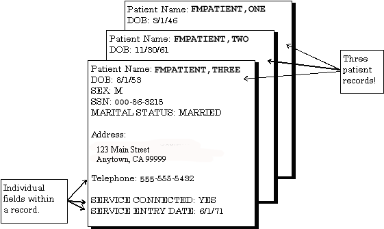
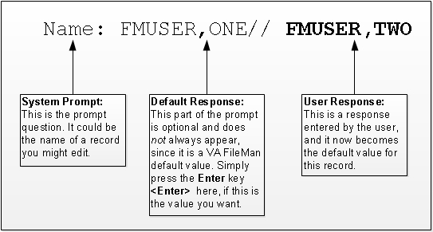
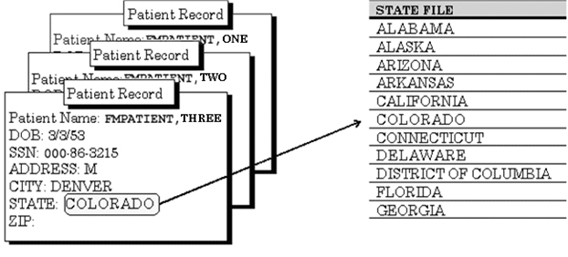
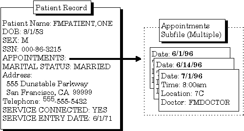

REF:
For the current patch history related to this software, see the Patch
Module (i.e., Patch User Menu [A1AE USER]) on FORUM.
REF:
For the current patch history related to this software, see the Patch
Module (i.e., Patch User Menu [A1AE USER]) on FORUM.VA FileMan 22.2
User Manual
October 2018
Department of Veterans Affairs (VA)
Office of Information and Technology (OIT)
Enterprise Program Management Office (EPMO)
Date |
Revision |
Description |
Author |
|---|---|---|---|
10/15/2018 |
1.3 |
Tech Edits:
|
REDACTED |
01/17/2017 |
1.2 |
Changes for patch DI*22.2*2:
|
REDACTED |
11/30/2016 |
1.1 |
Updates for Patch DI*22.2*4:
|
REDACTED |
08/03/2016 |
1.0 |
Initial release of VA FileMan 22.2 User Manual. |
VA FileMan 22.2 Development Team |
REF:
For the current patch history related to this software, see the Patch
Module (i.e., Patch User Menu [A1AE USER]) on FORUM.
Table of Contents
1.1 Fields, Records, and Files 1
1.3 Printing Records from Files 3
1.4 Adding and Editing Records 3
1.6 Scrolling Mode vs. Screen Mode 4
2.2 Inquire to File Entries Option 6
2.2.1 Standard Caption Output 7
2.4 Choose Your Own Print Fields 9
3.1 How to Print Reports from Files 11
3.2 VA FileMan’s Print Capabilities 11
3.3 Standard Column Format for VA FileMan Prints 12
3.4.1 Specifying SORT BY Fields 13
3.4.3 Choosing Print Fields 22
4.3.1 Sorting and Searching 41
4.3.3 Internal vs. External Field Values for Search Conditions 43
4.3.4 Print Number of Matches Found 43
5.2.1 Navigation Keystrokes 48
6.2 Standard Prompt Structure 54
6.4 Getting Online Help at Any Prompt (Enter ? or ??) 55
6.8 Longer Default Responses and the “Replace…With” Editor 57
6.8.1 “Replace...” Prompt Shortcuts 58
6.9 Prompts with a List of Choices 58
6.11 Special Responses to Field Prompts 60
6.11.1 Deleting a Field’s Value (@) 60
6.11.2 Jumping to another Field with the Caret (^) 61
6.11.3 Exiting with the Single Caret (^) 61
6.11.4 Exiting with the Double Caret (^^) 62
6.11.5 Mandatory (Required) Fields 62
6.11.7 Typical Data Entry Session 63
7.2.1 Acceptable Formats for Entering Dates 65
7.2.2 Abbreviations for Dates 66
7.2.3 Times in DATE/TIME Fields 66
7.2.4 Abbreviations for Times 67
7.4.1 Internal vs. External Values for SET OF CODES Fields 68
7.8 POINTER TO A FILE Fields 72
7.9 VARIABLE-POINTER Fields 73
7.11 LABEL REFERENCE Fields 75
8 Adding and Deleting Records 79
8.3 Adding a Duplicate Record (Use Quotes) 80
8.5 Repointing When Deleting Records 81
8.6 Adding Records to a POINTER TO A FILE Field 84
8.6.1 Adding Duplicate-Named Entries 85
8.7 Adding and Deleting from Multiples 86
8.8 Enter or Edit File Entries Option 87
9.1 Scrolling Mode Editing vs. Screen Mode Editing 89
9.3 Navigation Keystrokes (Cursor Movement) 92
9.3.1 How to Navigate between Fields 92
9.3.2 How to Navigate between Pages 93
9.3.4 Command Line Options (SAVE, EXIT, etc.) 94
9.4.2 Long Fields (and the Zoom Editor) 96
9.4.3 WORD-PROCESSING Fields 96
9.4.5 Navigational Keys for Repeating Blocks 101
10.1 Word-Processing Editors 102
10.2 Choosing a Preferred Editor 102
10.3 Switching to another Editor While Editing 103
11.4 Navigation Keystrokes (Cursor Movement) 106
11.5 Saving, Printing, and Exiting 107
11.7 Formatting Paragraphs 108
11.11.1 Terminal Type Setting 110
11.11.2 <PF> Keys Not Working: How to Exit 111
11.12 Screen Editor and Personal Computers 111
11.12.1 Pasting and Uploading 111
11.12.3 Files: Save as Text 111
11.12.5 Avoiding Lost Characters 112
12.1 Recognizing the Line Editor 113
12.2 How to Enter Text in the Line Editor 113
12.3 Revising Existing Text 114
12.3.1 Shortcut: Enter Line Number to Edit at “EDIT Option:” Prompt 114
12.4 “Replace...With” Edits: Be Careful 115
12.4.1 Shortcuts at the “Replace...With” Prompt 115
12.4.2 “Replace...” Prompt Shortcuts 116
12.5.2 LIST: List the Message 117
12.5.3 ADD: Append More Text 118
12.5.4 JOIN: Combine Two Lines of Text 118
12.5.5 INSERT: Insert New Lines of Text between Existing Ones 118
12.5.6 DELETE: Delete a Line or Lines 119
12.6.1 File Transfer (Use When Uploading ASCII Text) 119
12.6.2 Text Terminator-String Change 120
12.6.3 Programmer Edit (Edit Lines with M Commands) 121
12.6.4 Editor Change: Switch Editors 121
12.6.5 Transfer Text (from another WORD-PROCESSING Field) 121
Figure 1: Example Showing Several Patient Records 1
Figure 2: Representation of a Database 2
Figure 3: Example of a Printed Report 3
Figure 4: Inquire—Dialogue Using the Inquire to File Entries Option: Sample User Entries at Prompts and Sample Report 6
Figure 5: Inquire—Prompt to Store Entries into a Template 8
Figure 6: Inquire—Dialogue for Choosing Your Own Print Fields: Sample User Entries at Prompts 9
Figure 7: Inquire—Dialogue for Choosing a Device and Getting STANDARD CAPTIONED OUTPUT: Sample User Entries at Prompts 10
Figure 8: Print—Example of a Standard Printout 12
Figure 9: Print—Dialogue for Creating a Printed Report: Sample User Entries at Prompts 12
Figure 10: Print—Dialogue for Specifying a Sort Order for a Printed Report: Sample User Entries at Prompts 13
Figure 11: Print—Example of a Printed Report in a Specific Order 13
Figure 12: Print—Sorting Canonic and Non-Canonic Numbers 14
Figure 13: Print—Specifying a Sort Range 15
Figure 14: Print—Choosing Entries with a Specific Value 15
Figure 15: Print—Dialogue to Include Records with NULL Values: Sample User Entries at Prompts 16
Figure 16: Print—Sample Report Displaying Fields with NULL Values 17
Figure 17: Print—Dialogue to Create a Sort Template: Sample User Entries at Prompts 21
Figure 18: Print—Forcing the Creation of a Sort Template 22
Figure 19: Print—Reusing a Sort Template 22
Figure 20: Print—Confirmation Message to Print All Fields 22
Figure 21: Print—Stringing Several Print Qualifiers Together 26
Figure 22: Print—Obtaining a List of All Print Templates for a File 27
Figure 23: Print—Creating a Print Template 27
Figure 24: Print—Forcing the Creation of a Print Template 27
Figure 25: Print—Reusing a Print Template 28
Figure 26: Print—Inserting a New Print Field 28
Figure 27: Print—Inserting a Multiple Print Field 28
Figure 28: Print—Choosing a Captioned Print Template 29
Figure 29: Print—Dialogue Encountered when Creating a Captioned Print Report 29
Figure 30: Print—Generating Multiple Copies of a Report 30
Figure 31: Print—Example of a Report Heading 31
Figure 32: Print—Dialogue to Customize Report Headings: Sample User Entries at Prompts 31
Figure 33: Print—Suppressing Headings on a Report 32
Figure 34: Print—Confirming the Suppression of Headings in a Print Template 32
Figure 35: Print—Creating a Print Template with a Custom Header 32
Figure 36: Print—Selecting an Existing Print Template with a Custom Header 33
Figure 37: Print—Including a Custom Footer in a Print Template 33
Figure 38: Print—Including a Custom Header and Footer in a Print Template 33
Figure 39: Search—Example of a Search Condition 37
Figure 40: Search—Example of Two Truth Tests 38
Figure 41: Search—Example of a Single Search Condition Using a Truth Test 39
Figure 42: Search—Example of a Multiple Search Condition Using Truth Tests 39
Figure 43. Search—Dialogue to a Completed Search: Sample User Entries at Prompts and Sample Report 40
Figure 44: Search—Creating a Search Template 42
Figure 45: Search—Reusing a Search Template at the “SEARCH FOR FIELD” Prompt 42
Figure 46: Search—Reusing a Search Template at the “SORT BY” Prompt 42
Figure 47: Search—Dialogue of a Search on a Multiple Field: Sample User Entries at Prompts 44
Figure 48: Search—Prompts Encountered when Searching on a Multiple Field 45
Figure 49: Search—Additional Prompts Encountered when Searching on a Multiple Field 45
Figure 50: Browser—Sample Screen Component Parts 47
Figure 51: VA FileMan Prompts—Sample Component Parts of a Prompt 54
Figure 52: VA FileMan Prompts—Asking for a Response 54
Figure 53: VA FileMan Prompts—“Select-type” Prompts, Offering a Choice 54
Figure 54: VA FileMan Prompts—“Yes/No-type” Prompts 55
Figure 55: VA FileMan Prompts—Dialogue to Choose from a List in VA FileMan: Sample User Entries at Prompts 56
Figure 56: VA FileMan Prompts—Prompts with Default Responses 56
Figure 57: VA FileMan Prompts—Overriding the Default Response to a Prompt 56
Figure 58: VA FileMan Prompts—Long Responses Employing the “Replace...With” Editor 57
Figure 59: VA FileMan Prompts—Changing a Long Response Using the “Replace...With” Editor 57
Figure 60: VA FileMan Prompts—Replacing an Entire Entry Using the Ellipsis (...) 57
Figure 61: VA FileMan Prompts—Deleting an Entire Entry Using the At-Sign (@) 57
Figure 62: VA FileMan Prompts—Displaying a List of Choices 58
Figure 63: VA FileMan Prompts—Displaying a Subset of Choices from a List 59
Figure 64: VA FileMan Prompts—Entering a Duplicate Compound Key 60
Figure 65: VA FileMan Prompts—Deleting a Field Entry 60
Figure 66: VA FileMan Prompts—Using the Caret (^) Key to “Jump” to a Specific Field 61
Figure 67: VA FileMan Prompts—Using the Caret (^) Key to Exit a Prompt 61
Figure 68: VA FileMan Prompts—Using the “Spacebar Recall” Functionality 62
Figure 69: VA FileMan Prompts—Example of a Typical Data Entry Session 63
Figure 70: Field Types—Entering a Date at a DATE/TIME Field 65
Figure 71: Field Types—Entering a Date and Time 66
Figure 72: Field Types—Example of a NUMERIC Field 67
Figure 73: Field Types—Example of a SET OF CODES Field 68
Figure 74: Field Types—Example of a FREE TEXT Field 69
Figure 75: Field Types—Example of a FREE TEXT Field with Validation 69
Figure 76: Field Types—Example of a WORD-PROCESSING Field, Using the Screen Editor 70
Figure 77: Field Types—Example of a WORD-PROCESSING Field, Using the Line Editor 70
Figure 78: Field Types—Dialogue to Choose a COMPUTED Field: Sample User Entries at Prompts 71
Figure 79: Field Types—Sample of a POINTER TO A FILE Field (1 of 2) 72
Figure 80. Field Types—Sample of a POINTER TO A FILE Field (2 of 2) 72
Figure 81: Field Types—Dialogue Showing Help for Entries in a VARIABLE-POINTER Field: Sample User Entries at Prompts 73
Figure 82: Field Types—Using the PREFIX and a Question Mark to Get a List of Entries in a Pointed-To File 74
Figure 83: Field Types—Searching for an Entry in a Pointed-To File 74
Figure 84: Field Types—Adding a New Entry to a Pointed-To File 75
Figure 85: Field Types—Sample Subfile (Multiple) Field 78
Figure 86: Field Types—Example of a Multiple Field Prompt 78
Figure 87: Records—Dialogue to Add a Record: Sample User Entries at Prompts 79
Figure 88: Records—Dialogue to Add a Duplicate Record: Sample User Entries at Prompts 80
Figure 89: Records—Dialogue to Delete a Record: Sample User Entries at Prompts 81
Figure 90: Records—Dialogue to Delete a Record and Re-Point to a Different Record: Sample User Entries at Prompts 82
Figure 91: Records—Dialogue Showing a Report of Changed Entries: Sample Report 83
Figure 92: Records—Dialogue to Add a New Entry to a Pointed-To File: Sample User Entries at Prompts 84
Figure 93: Records—Adding a Duplicate-Named Entry to a Pointed-To File 85
Figure 94: Records—Adding an Entry to Both the Current File and to a Pointed-To File 85
Figure 95: Records—Dialogue Showing Entries to a Multiple Field: Sample User Entries at Prompts 86
Figure 96: Records—Choosing a File to Edit 87
Figure 97: Records—Choosing the File Fields to Edit 87
Figure 98: Records—Choosing Specific File Fields to Edit 87
Figure 99: Records—Dialogue Using the Enter or Edit File Entries Option: Sample User Entries at Prompts 88
Figure 100: ScreenMan—Sample Screen Component Parts and Field Values 91
Figure 101: ScreenMan—A “Popup” Subpage for a Multiple: Sample Component Parts and Field Values 98
Figure 102: ScreenMan—Dialogue Showing a Repeating Block in a Multiple: Sample ScreenMan Fields and Field Values 100
Figure 103: Screen Editor—Sample WORD-PROCESSING Field in the Screen Editor: Sample Component Parts 105
Figure 104: Screen Editor—Dialogue to Do a “FIND” while Using the Screen Editor 108
Figure 105: Line Editor—Example of a WORD-PROCESSING Field in the Line Editor 113
Figure 106: Line Editor—Prompts for Entering Word-Processing Text 113
Figure 107: Line Editor—Completing Your Edits in the Line Editor 114
Figure 108: Line Editor—Shortcut to Edit a Specific Line Using the Line Editor 114
Figure 109: Line Editor—Example of an Incorrect Edit with the “Replace...With” Editor 115
Figure 110: Line Editor—Using the Ellipsis (…) to Replace an Entire Line 115
Figure 111: Line Editor—Edit Options Available with the Line Editor 117
Figure 112: Line Editor—Example Using the List a Range of Lines Option 117
Figure 113: Line Editor—Example Using the Add Lines to End of Text Option 118
Figure 114: Line Editor—Example Using the Join Line to the One Following Option 118
Figure 115: Line Editor—Example Using the Insert Lines after an Existing Line Option 118
Figure 116: Line Editor—Example Using the Delete Line(s) Option 119
Figure 117: Line Editor—Example of Entering M Code while Using the Y-Programmer Edit Option 121
Figure 118: Line Editor—Dialogue of the Extended Pointer Syntax while Using the Transfer Lines From Another Document Option: Sample User Entries at Prompts (Example #1) 122
Figure 119: Line Editor—Dialogue of the Extended Pointer Syntax while Using the Transfer Lines From Another Document Option: Sample User Entries at Prompts (Example #2) 122
Figure 120: Line Editor—Example of a Possible Warning Message when Using the Transfer Lines From Another Document Option 123
Table 1: Documentation Symbol Descriptions xix
Table 2: Print—Sort Qualifiers 18
Table 3: Print—Print Qualifiers 23
Table 4: Search—Condition Tests 36
Table 5: Search—Condition Operators 38
Table 6: Browser—Navigation Keystrokes 48
Table 7: Browser—Using the Browser Clipboard 49
Table 8: Browser—Searching in the Browser 50
Table 9: Browser—Online Help 50
Table 10: Browser—Other Features 51
Table 11: VA FileMan Prompts—Getting Online Help at any Prompts Using Question Marks 55
Table 12: VA FileMan Prompts—“Replace” Prompt Shortcuts 58
Table 13: Field Types—Abbreviations for Dates 66
Table 14: Field Types—Abbreviations for Times 67
Table 15: BOOLEAN Data Type Example 75
Table 16: LABEL REFERENCE Data Type Example 75
Table 17: TIME Data Type Example 76
Table 18: YEAR Data Type Example 76
Table 19: UNIVERSAL TIME Data Type Example 76
Table 20: FT POINTER Data Type Example 77
Table 21: FT DATE Data Type Example 77
Table 22: RATIO Data Type Example 77
Table 23: ScreenMan—Keystrokes to Navigate between Fields in a ScreenMan Form 92
Table 24: ScreenMan—Keystrokes to Navigate between Pages in a ScreenMan Form 93
Table 25: ScreenMan—Command Line Options
and Shortcut Keystrokes in a ScreenMan
Form 94
Table 26: ScreenMan—Keystrokes to Move the Cursor in a ScreenMan Form 95
Table 27: ScreenMan—Keystrokes to Delete Characters in a ScreenMan Form 95
Table 28: ScreenMan—Keystrokes to Switch Modes in a ScreenMan Form 96
Table 29: ScreenMan—Keystrokes to Navigate Repeating Blocks in a ScreenMan Form 101
Table 30: Screen Editor—Keystrokes to Navigate in the Screen Editor 106
Table 31: Screen Editor—Keystrokes to Exit and Save Text in the Screen Editor 107
Table 32: Screen Editor—Keystrokes to Find Text in the Screen Editor 107
Table 33: Screen Editor—Keystrokes to Format Paragraphs in the Screen Editor 108
Table 34: Screen Editor—Keystrokes to Cut and Paste Text in the Screen Editor 108
Table 35: Screen Editor—Keystrokes to Delete Text in the Screen Editor 109
Table 36: Screen Editor—Keystrokes to Change the Settings and Mode in the Screen Editor 110
VA FileMan is the database management system for the Veterans Health Information Systems and Technology Architecture user (VistA) environment. VA FileMan creates and maintains a database management system that includes features such as:
A report writer
A data dictionary manager
Scrolling and screen-oriented data entry
Text editors
Programming utilities
Tools for sending data to other systems
File archiving
VA FileMan can be used as a:
Standalone database
Set of interactive or “silent” routines
Set of application utilities
In all modes, it is used to define, enter, and retrieve information from a set of computer-stored files, each of which is described by a data dictionary.
VA FileMan is a public domain software package that is developed and maintained by the Department of Veterans Affairs (VA). It is widely used by VA medical centers and in clinical, administrative, and business settings in this country and abroad.
 CAUTION:
Programmer access in VistA is defined as DUZ(0)=“@”. It grants
the privilege to become a developer in VistA. Programmer access
allows you to work outside many of the security controls enforced by
VA FileMan, enables access to all VA FileMan files, access to modify
data dictionaries, etc. It is important to proceed with caution when
having access to the system in this way.
CAUTION:
Programmer access in VistA is defined as DUZ(0)=“@”. It grants
the privilege to become a developer in VistA. Programmer access
allows you to work outside many of the security controls enforced by
VA FileMan, enables access to all VA FileMan files, access to modify
data dictionaries, etc. It is important to proceed with caution when
having access to the system in this way.
The VA FileMan User Manual is comprised of two separate documents that describe the VA FileMan functionality of VistA’s database management system:
The VA FileMan User Manual (this manual) introduces basic VA FileMan concepts, and shows you how to use VA FileMan’s basic tools for displaying and editing data. It shows you how to use VA FileMan features that are used throughout most VistA applications and used by all VistA users.
The VA FileMan Advanced User Manual shows how to use the features of VA FileMan that are likely to be used by experienced VistA users. It introduces advanced VA FileMan concepts, and shows you how to use VA FileMan’s advanced tools. It describes features that are more likely to be used by:
Automated Data Processing Application Coordinators (ADPACs)
System Administrators
Other technical users
NOTE:
These documents are available in Microsoft Word (.docx), Adobe
Acrobat Portable Document Format (PDF), and Hypertext Markup Language
(HTML) format (see the “HTML
Manuals” section).
In this manual, the following major features of VA FileMan are introduced along with a description on how to use them:
Inquire
Search
Browser
VA FileMan Prompts
Field Types
Adding and Deleting Records
ScreenMan
Word-Processing Fields
Screen Editor
Line Editor
REF:
For VA FileMan installation instructions in the VistA environment see
the VA FileMan Installation Guide and any national patch
description of the patch being released.
Why produce an HTML (Hypertext Markup Language) edition of the VA FileMan manuals?
The HTML versions of the VA FileMan manuals are useful as online documentation support as you use VA FileMan. HTML manuals allow you to instantly jump (link) to specific sections, other documents, or references online.
The VA FileMan HTML manuals are “living” documents that are continuously updated with the most current VA FileMan information (unlike paper or printed documentation). They are updated based on new versions, patches, or enhancements to VA FileMan.
Presenting manuals in an HTML format online also gives new opportunities, such as accessing embedded multimedia training material (e.g., movies, audio recordings, etc.) directly in the manuals.
Manuals are accessible over the VA Intranet network.
The intended audience of this manual is all key stakeholders. The stakeholders include the following:
General users of the VA FileMan database.
Automated Data Processing Application Coordinators (ADPACs)
System Administrators—Personnel at Department of Veterans Affairs (VA) sites who are responsible for computer management and system security on the VistA M Servers.
Enterprise Program Management Office (EPMO)—VistA legacy development teams.
Product Support (PS).
Disclaimers
This software was developed at the Department of Veterans Affairs (VA) by employees of the Federal Government in the course of their official duties. Pursuant to title 17 Section 105 of the United States Code this software is not subject to copyright protection and is in the public domain. VA assumes no responsibility whatsoever for its use by other parties, and makes no guarantees, expressed or implied, about its quality, reliability, or any other characteristic. We would appreciate acknowledgement if the software is used. This software can be redistributed and/or modified freely provided that any derivative works bear some notice that they are derived from it, and any modified versions bear some notice that they have been modified.
 CAUTION:
To protect the security of VistA systems, distribution of this
software for use on any other computer system by VistA sites is
prohibited. All requests for copies of Kernel for non-VistA
use should be referred to the VistA site’s local Office of
Information Field Office (OIFO).
CAUTION:
To protect the security of VistA systems, distribution of this
software for use on any other computer system by VistA sites is
prohibited. All requests for copies of Kernel for non-VistA
use should be referred to the VistA site’s local Office of
Information Field Office (OIFO).
This manual provides an overall explanation of VA FileMan and the functionality contained in VA FileMan 22.2; however, no attempt is made to explain how the overall VistA programming system is integrated and maintained. Such methods and procedures are documented elsewhere. We suggest you look at the various VA Internet and Intranet Websites for a general orientation to VistA. For example, visit the Office of Information and Technology (OIT) VistA Development Intranet website.
DISCLAIMER:
The appearance of any external hyperlink references in this manual
does not constitute endorsement by the Department of Veterans
Affairs (VA) of this Website or the information, products, or
services contained therein. The VA does not exercise any
editorial control over the information you find at these locations.
Such links are provided and are consistent with the stated purpose of
this VA Intranet Service.
This manual uses several methods to highlight different aspects of the material:
Various symbols are used throughout the documentation to alert the reader to special information. Table 1 gives a description of each of these symbols:
Table 1: Documentation Symbol Descriptions
Symbol |
Description |
|---|---|
|
NOTE / REF: Used to inform the reader of general information including references to additional reading material. |
|
CAUTION / RECOMMENDATION / DISCLAIMER: Used to caution the reader to take special notice of critical information. |
|
TIP: Used to inform the reader of helpful tips or tricks they can use when working with VA FileMan. |
Descriptive text is presented in a proportional font (as represented by this font).
Conventions for displaying TEST data in this document are as follows:
The first three digits (prefix) of any Social Security Numbers (SSN) begin with either “000” or “666”.
Patient and user names are formatted as follows: <Application Name/Abbreviation/Namespace>PATIENT,[N] and <Application Name/Abbreviation/Namespace>USER,[N] respectively, where “<Application Name/Abbreviation/Namespace>” is defined in the Approved Application Abbreviations document and “N” represents the first name as a number spelled out and incremented with each new entry. For example, in VA FileMan (FM) test patient and user names would be documented as follows: FMPATIENT,ONE; FMPATIENT,TWO; FMPATIENT,THREE; FMUSER,14, etc.
“Snapshots” of computer online displays (i.e., screen captures/dialogues) and computer source code, if any, are shown in a non-proportional font and usually enclosed within a box:
User’s responses to online prompts are bold typeface and highlighted in yellow (e.g., <Enter>).
Emphasis within a dialogue box is bold typeface and highlighted in blue (e.g., STANDARD LISTENER: RUNNING).
Some software code reserved/key words are bold typeface with alternate color font.
References to “<Enter>” within these snapshots indicate that the user should press the Enter key on the keyboard. Other special keys are represented within < > angle brackets. For example, pressing the PF1 key can be represented as pressing <PF1>.
Author’s comments are displayed in italics or as “callout” boxes.
NOTE:
Callout boxes refer to labels or descriptions usually enclosed within
a box, which point to specific areas of a displayed image.
All uppercase is reserved for the representation of M code, variable names, or the formal name of options, field/file names, and security keys (e.g., DIEXTRACT).
NOTE:
Other software code (e.g., Delphi/Pascal and Java) variable
names and file/folder names can be written in lower or mixed case
(e.g., CamelCase).
This document uses Microsoft® Word’s built-in navigation for internal hyperlinks. To add Back and Forward navigation buttons to your toolbar, do the following:
Right-click anywhere on the customizable Toolbar in Word (not the Ribbon section).
Select Customize Quick Access Toolbar from the secondary menu.
Select the drop-down arrow in the “Choose commands from:” box.
Select All Commands from the displayed list.
Scroll through the command list in the left column until you see the Back command (green circle with arrow pointing left).
Select/Highlight the Back command and select Add to add it to your customized toolbar.
Scroll through the command list in the left column until you see the Forward command (green circle with arrow pointing right).
Select/Highlight the Forward command and select Add to add it to your customized toolbar.
Select OK.
You can now use these Back and Forward command buttons in your Toolbar to navigate back and forth in your Word document when selecting hyperlinks within the document.
NOTE:
This is a one-time setup and is automatically available in any other
Word document once you install it on the Toolbar.
How to Obtain Technical Information Online
Exported VistA M Server-based software file, routine, and global documentation can be generated through the use of Kernel, MailMan, and VA FileMan utilities.
NOTE:
Methods of obtaining specific technical information online is
indicated where applicable under the appropriate section.
REF:
For further information, see the VA FileMan Technical Manual.
VistA M Server-based software provides online help and commonly used system default prompts. Users are encouraged to enter question marks at any response prompt. At the end of the help display, you are immediately returned to the point from which you started. This is an easy way to learn about any aspect of the software.
Obtaining Data Dictionary Listings
Technical information about VistA M Server-based files and the fields in files is stored in data dictionaries (DD). You can use the List File Attributes [DILIST] option on the Data Dictionary Utilities [DI DDU] menu in VA FileMan to print formatted data dictionaries.
REF:
For details about obtaining data dictionaries and about the
formats available, see the “List File Attributes” section in the
“File Management” section in the VA FileMan Advanced User
Manual.
This manual is written with the assumption that the reader is familiar with the following:
VistA computing environment:
Kernel—VistA M Server software
VA FileMan data structures and terminology—VistA M Server software
Microsoft® Windows environment
M programming language
Readers who wish to learn more about VA FileMan should consult the following:
VA FileMan Release Notes
VA FileMan Installation Guide
VA FileMan Technical Manual
VA FileMan User Manual (this manual; PDF and HTML format)
VA FileMan Advanced User Manual (PDF and HTML format)
VA FileMan Developer’s Guide (PDF and HTML format)
REF:
Zip files of the VA FileMan documentation in HTML format are located
on the VA FileMan Intranet product website and VDL at:
http://www.va.gov/vdl/application.asp?appid=5.
Using
a web browser, open the HTML documents “table of contents”
page (i.e., index.html). The VA FileMan User Manual, VA
FileMan Advanced User Manual, and VA FileMan Developer’s
Guide are all linked together.
VistA documentation is made available online in Microsoft® Word format and in Adobe® Acrobat Portable Document Format (PDF). The PDF documents must be read using the Adobe® Acrobat Reader, which is freely distributed by Adobe® Systems Incorporated at: http://www.adobe.com/
VistA software documentation can be downloaded from the VA Software Document Library (VDL) at: http://www.va.gov/vdl/
REF:
VA FileMan manuals are located on the VDL at:
http://www.va.gov/vdl/application.asp?appid=5
VistA documentation and software can also be downloaded from the Product Support (PS) Anonymous Directories.
A computer database, such as VA FileMan, organizes your data, storing it in fields, records, and files, much as you might arrange and preserve information on paper.
A record is a group of fields of data. Each record has a name (e.g., a patient name for a patient record). You can use the record name to recall the record for editing or for printing out. Records are also known as file entries.
For example, a record for a patient might have various fields (e.g., NAME, AGE, ADMISSION DATE, etc.) for a single patient. Each record for a patient would contain the same set of fields (places to fill in information):
Figure 1: Example Showing Several Patient Records

Each field in a record functions just like a blank on a form. When you are editing a record on a terminal, for each field, you get a prompt that tells you what type of data to enter.
VA FileMan uses 16 basic field types. These fields allow you to enter only certain kinds of information, just as a blank on a form might require you to enter only numbers. For example:
A DATE OF BIRTH field could be set up to record dates/times.
A SOCIAL SECURITY NUMBER field could be set up to record a nine-digit number.
An ADDRESS field could be set up to hold the text of an address.
These three fields are different from one another because of the type of data they store.
All of the records that contain like data are collected and stored in the same file. For example, all patient records are stored in the PATIENT (#2) file and all computer user records are stored in the NEW PERSON (#200) file. This way, to look up a patient, you know that the file to go to is the PATIENT (#2) file. Also, to do a report on all patients, you would generate the report from the PATIENT (#2) file.
The database contains all the data files on your computer system:
Figure 2: Representation of a Database
NOTE:
There are many more files than this in VistA databases!
One way of getting at the information stored in a database is to generate reports that print out selected records. You do not have to print every field in a record; you can just choose a subset of fields to print out. Nor do you have to print every record in a file; there are ways to limit and select what records to print out.
The report in Figure 3 displays four records, with one line of output per record, from the HOSPITAL LOCATION (#44) file:
Figure 3: Example of a Printed Report
Internal Entry
Number Name Title
------------- ---------- -------------------
1 ICU Intensive Care Unit
2 CCU Critical Care Unit
5 OR Operating Room
25 1EAST Ward on 1 East
Most applications that use VA FileMan provide a number of already-set-up reports you can quickly choose and print out. In addition, there are options in VA FileMan that allow you to generate your own reports.
This manual contains the following sections on print records from the database:
Inquire
Search
Browser
As well as printing records from the database, you can add new records and edit existing records. When you work on the computer system with VistA applications (e.g., Laboratory) most of what you are doing is adding new records and editing existing ones. For example, each new lab result would get stored in a new record; when you make a status change it would be an edit to a field or fields in a patient’s existing record.
Since the bulk of the work you do on the computer system involves working with records, the more you know about using the underlying database system (VA FileMan), the easier it is to do all of your work on the computer system.
This manual contains the following sections on how to edit information in records:
VA FileMan Prompts
Field Types
Adding and Deleting Records
ScreenMan (editing via forms)
Word-Processing Fields
Screen Editor (WORD-PROCESSING fields)
Line Editor (WORD-PROCESSING fields)
In VistA applications, you not only display and edit existing records, but also add and delete records from files. For example, you might need to add a new patient to the PATIENT (#2) file. The access to add and delete records can be controlled; however, each VA FileMan file can be set to either allow or not allow adding and deleting of new records.
If a file allows records to be added or deleted, it is said to have Learn-As-You-Go (LAYGO) access. To add or delete records, your user account must also be set to allow LAYGO access to the file in question. For example, there are certain conditions when you need to specify a particular physician. At that point, you can enter a new physician name, rather than choosing one that already is on file. If you are allowed to add new entries to the file (i.e., you have LAYGO access), the new entry is added to a file of physicians.
Many VA VistA application packages have a Scrolling Mode interface. Scrolling Mode works as follows:
Computer puts a prompt on the screen.
Users enter a response to the prompt.
Computer places another prompt on the screen, scrolling down one line. Previous prompts move up and eventually off of the screen.
In Scrolling Mode, prompting occurs in the same predetermined order, in a sequence designed by the developer of the application. The user enters, and the computer stores, the responses one at a time. Unless the user is familiar with a few timesaving Scrolling Mode techniques, the user has to step through each prompt in a record before he/she can finish editing the record.
REF:
For more information on editing records in Scrolling Mode, see the
“VA FileMan Prompts” section.
Recently developed VistA applications, on the other hand, often use a Screen Mode interface for editing data. In the Screen Mode approach, each field occupies a fixed position on the screen. The user can see many data fields at once and use simple key combinations to edit data and move from field to field on a screen. The user can also move from one screen to another like turning through the pages of a book. VA FileMan’s screen-oriented data entry tool is called ScreenMan.
In comparing Scrolling Mode with Screen Mode, an area in particular where Screen Mode is much more convenient than Scrolling Mode is text editing. VA FileMan’s Scrolling Mode text editor is the Line Editor. A better choice for editing text is VA FileMan’s Screen Mode editor, the Screen Editor.
REF:
For more information on the Line Editor, see the “Line Editor”
section. For more information on the Screen Editor, see the “Screen Editor”
section.
Many reports that you print from applications are pre-designed (i.e., the selection of records) and the fields that print for each record are pre-determined by the application developer. You simply choose the report you would like to print from a menu option, choose an output device, and the selected report prints.
You can also create your own reports, however, if you have either VA FileMan’s print options, or custom-designed application options that take advantage of the same VA FileMan features. This section introduces one of VA FileMan’s print options, Inquire to File Entries [DIINQUIRE] option.
There are two ways you have an opportunity to use VA FileMan’s inquiry capabilities:
An option that has been set up already to allow you to inquire to entries from a particular file.
VA FileMan’s Inquire to File Entries [DIINQUIRE] option, which lets you inquire to any file to which you have access.
In either case, use of VA FileMan’s inquire feature is very similar. In most cases, the only difference is that with the Inquire to File Entries [DIINQUIRE] option, you have to choose which file to inquire.
The quickest way to display the data for one file entry or for a small number of entries is to use the Inquire to File Entries [DIINQUIRE] option. This option lets you choose a set of entries to display, and choose the fields that you want to see for each entry. For example:
Figure 4: Inquire—Dialogue Using the Inquire to File Entries Option: Sample User Entries at Prompts and Sample Report
Select VA FileMan Option: INQ <Enter> uire to File Entries
1.
Choose the file.
OUTPUT FROM WHAT FILE: PATIENT// <Enter>
2.
Choose entries to display from the file.
Select PATIENT NAME: FMPATIENT, ONE
ANOTHER ONE: FMPATIENT, TWO
ANOTHER ONE: FMPATIENT, THREE
ANOTHER ONE: <Enter>
3.
Choose output fields. Captioned Output is the easiest (displays all
fields that contain data for each entry).
STANDARD CAPTIONED OUTPUT? Yes// <Enter> (Yes)
Include COMPUTED fields: (N/Y/R/B): NO// ?
4.
For Captioned Output, choose whether to display record numbers and
computed fields.
Enter a code from the list.
Select one of the following:
N NO - No record number (IEN), no Computed Fields
Y Computed Fields
R Record Number (IEN)
B BOTH Computed Fields and Record Number (IEN)
Include COMPUTED fields: (N/Y/R/B): NO// B <Enter> OTH Computed Fields and Record Number (IEN)
DISPLAY AUDIT TRAIL? No// <Enter> NO
5.
Review the selected entries that are displayed on the report (sample
list abbreviated).
NUMBER: 180 NAME: FMPATIENT, ONE
SEX: MALE DATE OF BIRTH: 04/04/1944
.
.
.
NUMBER: 229 NAME: FMPATIENT, TWO
SEX: MALE DATE OF BIRTH: 01/01/1962
.
.
.
NUMBER: 229 NAME: FMPATIENT, THREE
SEX: FEMALE DATE OF BIRTH: 01/25/1952
.
.
.
Choosing Standard Captioned Output can be very useful; it prints out all fields (that contain data) for each entry in the report. Use it is a quick way to select all the fields for each entry in the report. Otherwise, you need to select each field to print individually, from the list of fields available to print in the file. Answering YES to use STANDARD CAPTIONED OUTPUT is the fastest way to choose what fields to print.
When using Standard Captioned Output, you can choose from the following at the “Include COMPUTED Fields: (N/Y/R/B): NO//” prompt:
N (default)—NO - No record number (IEN), no Computed Fields
Y—Computed Fields
R—Record Number (IEN)
B—BOTH Computed Fields and Record Number (IEN)
The default is to display neither. Enter two question marks (??) for detailed help about responding to this prompt.
If one or more of the fields have been audited, the system displays the “DISPLAY AUDIT TRAIL?” prompt. If you answer YES, then you see the changes that have been recorded for the various fields in the AUDIT (#1.1) file, along with the current values of the fields.
When you choose several entries to display, you are prompted with the following:
Figure 5: Inquire—Prompt to Store Entries into a Template
STORE THESE ENTRY ID’s IN A TEMPLATE:
You can save your list of selected entries in a SORT template by entering a template name at this prompt. Your list of entries is then saved in a SORT template. You can then reuse the list of selected entries in the template when you do additional printing from this file in the future.
REF:
For more information on using SORT templates, see the “Saving Sort Criteria (SORT Templates)”
section.
CAUTION:
Do not use STANDARD CAPTIONED OUTPUT.
To choose your own fields to output for each entry, answer NO to the “STANDARD CAPTIONED OUTPUT?” prompt. You can then choose your own output fields. For example, if you only need NAME, DATE OF BIRTH, and PROVIDER information about a selected patient, you could request it, as shown in Figure 6:
Figure 6: Inquire—Dialogue for Choosing Your Own Print Fields: Sample User Entries at Prompts
Select VA FileMan Option: INQ <Enter> uire to File Entries
OUTPUT FROM WHAT FILE: PATIENT// <Enter>
Select PATIENT NAME: FMPATIENT, ONE
ANOTHER ONE: <Enter>
1.
Answer NO here.
STANDARD CAPTIONED OUTPUT? Yes// NO <Enter> (No)
2.
Choose output fields.
FIRST PRINT FIELD: NAME
1 NAME
2 NAME COMPONENTS
3 NAME ORDER
CHOOSE 1-3: 1 <Enter> NAME
THEN PRINT FIELD: DATE OF BIRTH
THEN PRINT FIELD: PROVIDER
THEN PRINT FIELD: <Enter>
Heading (S/C): PATIENT LIST// <Enter>
3.
Choose an output device.
DEVICE: <Enter> SSH VIRTUAL TERMINAL Right Margin: 80// <Enter>
PATIENT LIST FEB 12,2013 18:41 PAGE 1
NAME DATE OF BIRTH
PROVIDER
--------------------------------------------------------------------------------
FMPATIENT,ONE 11/20/1950
REF:
For more information on customizing output print fields, see the “Print”
section. It provides detailed information about the different choices
you can make at the “PRINT FIELD:” prompt to display your
information in different ways.
CAUTION:
Do not use STANDARD CAPTIONED OUTPUT.
If you enter YES at the “STANDARD CAPTIONED OUTPUT?” prompt, output is sent to the HOME device, which ordinarily is the terminal you are using. To send output to a printer, you need to answer NO at the “STANDARD CAPTIONED OUTPUT?” prompt. This means you must choose your own print fields, as described in Section 2.4, “Choose Your Own Print Fields.” Doing this allows you to select the output device, however.
If you answer NO to the “STANDARD CAPTIONED OUTPUT?” prompt, you can still get CAPTIONED output, however. To do this, choose the CAPTIONED PRINT template at the first “PRINT FIELD:” prompt, as shown in Figure 7.
Enter a left bracket “[” and the word CAPTIONED. CAPTIONED OUTPUT from the template works exactly as if you had answered YES at the “STANDARD CAPTIONED OUTPUT?” prompt to request CAPTIONED OUTPUT.
Figure 7: Inquire—Dialogue for Choosing a Device and Getting STANDARD CAPTIONED OUTPUT: Sample User Entries at Prompts
STANDARD CAPTIONED OUTPUT? Yes// N <Enter> (No)
FIRST PRINT FIELD: [CAPTIONED
Even
though you do not choose “Standard Caption Output,” you
can still use the CAPTIONED Print Template for the same effect.
Include COMPUTED fields: (N/Y/R/B): NO// <Enter> - No record number (IEN), no Computed Fields
DISPLAY AUDIT TRAIL? No// <Enter> NO
Heading (S/C): PATIENT LIST// <Enter>
By
not choosing “Standard Caption Output,” you can then choose the
output device.
DEVICE:
With the Inquire to File Entries [DIINQUIRE] option, you can:
Select entries from a file, one by one.
Choose a format for displaying the selected entries.
Output the selected entries.
VA FileMan’s print capabilities, on the other hand, allow you to select entries, not one by one, but instead by choosing a range of entries based on the sorting order. You can choose all entries in a file, for example, and sort them in alphabetical order for the printout. Alternatively, you can choose all entries sorting between E and F and sort them in alphabetical order for the printout.
There are two ways in which you have an opportunity to use VA FileMan’s print capabilities:
An option that has been set up already to allow you to print from a particular file.
VA FileMan’s Print File Entries [DIPRINT] option, which lets you print from any file to which you have access.
In either case, use of VA FileMan’s print features is very similar. In most cases, the only difference is that with the Print File Entries [DIPRINT], you have to choose from which file to print.
Unlike the Inquire to File Entries [DIINQUIRE] option, which displays individual records, VA FileMan’s print can list all records in a file. Thus, the focus of the Inquire to File Entries [DIINQUIRE] option is a single or small group of entries while VA FileMan’s prints are concerned with the entire file.
VA FileMan’s print features allow considerable flexibility in:
Selecting entries.
Ordering (or sorting) the entries selected.
Choosing which fields to display.
Formatting the output.
The following two basic components can be used to create a report:
“SORT BY:” dialogue. Used to sort (and sometimes narrow down) the entries that you want displayed.
“PRINT FIELD:” dialogue. Used to choose the fields you want and the format of their display.
The choices you can make at these two prompts are discussed in detail later in this section.
VA FileMan has a standard, columnar format for print output. The file name, current date/time, and page number appear at the top of each report page, followed by column headings that correspond to the labels of selected fields. There are many ways to customize the format, as shown in Figure 8:
Figure 8: Print—Example of a Standard Printout
PATIENT LIST NOV 28, 1996 11:32 PAGE 1
NAME SEX
---------------------------------------------------------------------
FMPATIENT,SEVEN MALE
FMPATIENT,EIGHT MALE
FMPATIENT,NINE MALE
FMPATIENT,10 FEMALE
This simple example of a report (Figure 8) is generated by the dialogue in Figure 9. It prints information from all the entries in the PATIENT (#2) file, ordered by NAME (#.01) field. Only data from the NAME and SEX fields are printed, as requested at the “PRINT FIELD:” prompts:
Figure 9: Print—Dialogue for Creating a Printed Report: Sample User Entries at Prompts
Select VA FileMan Option: PRINT <Enter> File Entries
OUTPUT FROM WHAT FILE: PATIENT// <Enter>
Sort
output by record name.
SORT BY: NAME// <Enter>
START WITH NAME: FIRST// <Enter>
Choose
print fields.
FIRST PRINT FIELD: NAME
1 NAME
2 NAME COMPONENTS
3 NAME ORDER
CHOOSE 1-3: 1 <Enter> NAME
THEN PRINT FIELD: SEX
THEN PRINT FIELD:
Heading (S/C): PATIENT LIST// <Enter>
DEVICE:
NOTE:
You would have received information about every patient in the
file, not just these four. You could have asked for several
more fields to be printed. They would appear as columns of output,
left to right, in the order specified.
Sorting determines the order that records are printed in your reports. You can accept the default order (by the .01 field), or you can specify your own sorting order. The sort can be a simple sort, based on only one field, or you can sort based on the values of several fields.
For example, if you want to print the entries in order from oldest to youngest patient, you could sort the report by date of birth (the DATE OF BIRTH field in the PATIENT [#2] file), as shown in Figure 10:
Figure 10: Print—Dialogue for Specifying a Sort Order for a Printed Report: Sample User Entries at Prompts
Select VA FileMan Option: PRINT <Enter> File Entries
OUTPUT FROM WHAT FILE: PATIENT// <Enter>
Sort
by DATE OF BIRTH.
SORT BY: NAME// DATE OF BIRTH
START WITH DATE OF BIRTH: FIRST// <Enter>
WITHIN DATE OF BIRTH, SORT BY: <Enter>
FIRST PRINT FIELD: NAME
1 NAME
2 NAME COMPONENTS
3 NAME ORDER
CHOOSE 1-3: 1 <Enter> NAME
THEN PRINT FIELD: SEX
THEN PRINT FIELD: <Enter>
NOTE:
DATE OF BIRTH is not a print field.
Heading (S/C): PATIENT LIST// <Enter>
DEVICE: <Enter> SSH VIRTUAL TERMINAL Right Margin: 80// <Enter>
The output then prints in the following order (by DATE OF BIRTH), as shown in Figure 11:
Figure 11: Print—Example of a Printed Report in a Specific Order
PATIENT LIST FEB 12, 2013 19:11 PAGE 1
NAME SEX
-------------------------------------------------------------------------------
DATE OF BIRTH: OCT 14, 1877
FMPATIENT,12 FEMALE
DATE OF BIRTH: NOV 3, 1922
FMPATIENT,13 MALE
DATE OF BIRTH: APR 4, 1933
FMPATIENT,NINE MALE
If you sort by a field that is not a print field, then it is displayed as a subheader. In Figure 11, the sort criterion (DATE OF BIRTH) is printed as a subheader with every change in sort value.
To suppress the printing of sort values (subheaders) in the body of your report, you can either:
Add the field you are sorting by to the print field list.
Place an at-sign (@) in front of the field label at the “SORT BY:” prompt. In the previous example (Figure 11), you would sort by @DATE OF BIRTH instead of DATE OF BIRTH.
The ordering of entries within a sort is generally from low value to high value. Some special cases for specific data type field values include:
SET OF CODES—Field values are sorted by the internally stored code, not the value that is output.
FREE TEXT—Field values usually sort from lowest value to highest value following the ASCII sorting sequence. Digits sort before uppercase letters, which sort before lowercase letters (e.g., M1 sorts before MC which sorts before Mc).
Canonic numbers are pure numbers that do not have leading zeroes before or trailing zeroes after a decimal point. Thus, 1.1 is a canonic number but 01.1 and 1.10 are not. A non-canonic string is everything else. For example, “8C” is a non-canonic string.
This distinction is important when sorting, because in all VA FileMan sorting, canonic numbers sort first, and everything else sorts second. Usually, this works very well. But in a few cases where sort fields contain a mix of canonic numbers and non-canonic strings, unexpected sort orders result. Classic cases include sorting on Social Security Numbers and on ward locations.
Consider Social Security Numbers (SSNs). The SSNs 666333333 and 666999900 are canonic numbers. But the SSN 000769000 is not a canonic number, because of its leading zeroes. When you use the default sort based on SSN, you get output that looks like Figure 12:
Figure 12: Print—Sorting Canonic and Non-Canonic Numbers
PATIENT LIST JUL 19,1996 11:36 PAGE 1
SSN NAME
-------------------------------------------------------------------------------
666333333 FMPATIENT,13
666999900 FMPATIENT,14
000769000 FMPATIENT,15
In this example (Figure 12), you see that SSN 000769000 is non-canonic due to its leading zeroes, so it sorts after SSN 666999900, which is canonic.
A similar situation occurs when you sort on ward locations. Suppose you have wards 8, 8C, and 9. Wards 8 and 9 are canonic numbers, while ward 8C is a non-canonic string. Thus, if you sort on ward location, your output comes out in this order: 8, 9, 8C.
To avoid this problem, use the sort qualifier “;TXT” on your sort field. This forces all field values to be non-canonic, with the result that a group of strings like 8, 8C, and 9 sort in the expected order.
REF:
For more information on the “;TXT” sort qualifier, see the
list of Sort Qualifiers in Table 2.
Besides using sorting to determine the order of entries printed, you can also use the “START WITH ...:” prompt to restrict what entries are printed to a range. For example, if you accept the default sort range (from first to last), you can get a report with every item in the file listed. You can cut this list down to a subset of the entries in the file by how you sort (e.g., entries that sort from FMPATIENT,A to FMPATIENT,Z only).
To specify a sort range, enter the range starting point at the “START WITH...:” prompt, and the range end point at the “GO TO...:” prompt. For example:
Figure 13: Print—Specifying a Sort Range
SORT BY: NAME// <Enter>
START WITH NAME: FIRST// FMPATIENT,A
GO TO NAME: LAST// FMPATIENT,Z
A simple kind of selecting can be done to choose only those entries that have a particular value for a field. For example, to list only those patients who have a DIAGNOSIS equal to CANCER, you can sort as in the example in Figure 14:
Figure 14: Print—Choosing Entries with a Specific Value
START WITH DIAGNOSIS: FIRST// CANCER
GO TO DIAGNOSIS: LAST// CANCER
The “START WITH ... GO TO ...” dialogue can be used to do sophisticated selecting from a file. Computed expressions can be entered at the prompts to filter the entries to be printed.
REF:
These powerful techniques are discussed in the “Computed
Expressions” section in the VA FileMan Advanced User Manual.
You can also use VA FileMan’s search functions to select entries for printing.
REF:
For more information on VA FileMan’s search functions, see the
“Search” section.
When you sort a report on a particular field, if any record in the file has no value in that field (i.e., NULL) that record is skipped and not printed, if you accept the default sort start value (FIRST). In other words, in a print from the PATIENT (#2) file, if you sort on the PROVIDER field, start sorting from the default of FIRST, and there are some patients with nothing in their PROVIDER field (i.e., NULL), those patients are left off of the report entirely.
If you want to include records in your report, even if they have no value in the field on which you are sorting (i.e., NULL), sort from @ instead of accepting the default of FIRST. As in Figure 15, enter an at-sign (@) at the “START WITH:” prompt:
Figure 15: Print—Dialogue to Include Records with NULL Values: Sample User Entries at Prompts
Select VA FileMan Option: PRINT <Enter> File Entries
OUTPUT FROM WHAT FILE: PATIENT// <Enter>
SORT BY: NAME// PROVIDER
Start
with an at-sign (@) instead of FIRST to force inclusion of all
entries in the printout, even those whose value for this field is
NULL.
START WITH PROVIDER: FIRST// @
GO TO PROVIDER: LAST// <Enter>
WITHIN PROVIDER, SORT BY: <Enter>
FIRST PRINT FIELD: NAME
1 NAME
2 NAME COMPONENTS
3 NAME ORDER
CHOOSE 1-3: 1 <Enter> NAME
THEN PRINT FIELD: DATE OF BIRTH
THEN PRINT FIELD: <Enter>
Heading (S/C): PATIENT LIST// <Enter>
Whenever
you specify any sort criteria at the “SORT BY:” prompt, you are
prompted for what page to start at.
START AT PAGE: 1// <Enter>
...SORRY, THIS MAY TAKE A FEW MOMENTS...
The output of this sort would then include all records, even those with no value in their PROVIDER fields:
Figure 16: Print—Sample Report Displaying Fields with NULL Values
PATIENT LIST FEB 13,2013 16:22 PAGE 1
NAME DATE OF BIRTH
--------------------------------------------------------------------------------
FMPATIENT,ONE
does not have a provider. If the @ had not been
entered at the “START WITH PROVIDER:” prompt, the entry would
not have been printed.
PROVIDER: EMPTY
FMPATIENT,ONE 03/01/1940
PROVIDER: FMPROVIDER,2
FMPATIENT,TWO 03/04/1933
PROVIDER: FMPROVIDER,2
FMPATIENT,THREE 09/25/1949
PROVIDER: FMPROVIDER,2
FMPATIENT,FOUR 01/31/1921
PROVIDER: FMPROVIDER,3
FMPATIENT,FIVE 05/24/1931
PROVIDER: FMPROVIDER,3
FMPATIENT,SIX 04/03/1935
PROVIDER: FMPROVIDER,3
FMPATIENT,SEVEN 10/22/1925
As well as entering fields to sort by, you can also enter formatting controls in the “SORT BY:” dialogue. Add these qualifiers to the field label or to the computed expression you are entering at the “SORT BY:” prompt.
Table 2 lists the sort qualifiers you can use at the “SORT BY:” prompts:
Table 2: Print—Sort Qualifiers
Qualifier |
Action |
Discussion |
|---|---|---|
!field |
Number entries by sort value |
Entries having the same value for the SORT BY field are numbered sequentially starting at one. |
#field |
Page break when sort value changes |
Starts a new page every time the value of the sorted field changes. |
‘field |
Specify a range for output without sorting |
This lets you select entries based on this field in the “START WITH . . . GO TO . . .” dialogue, but not sort based on the field.
|
+field |
Subtotal within a SORT BY field |
When subtotaling, you indicate in the “PRINT FIELD” dialogue the fields to be enumerated. All requested numeric operations (sum, count, etc.) are done as a subtotal when the SORT BY field changes in addition to the grand totals at the end. You can sub-subtotal by adding a prefix of + to two fields in the “SORT BY:” dialogue. For example:
SORT BY: +REGION WITHIN REGION, SORT BY: +STORE
This produces subtotals for each STORE within the subtotals for each REGION. |
-field |
Reverse sort order |
Only effective for NUMERIC and DATE/TIME valued fields:
|
@field |
Suppress the printing of subheader |
Normally, a subheader with the value of the SORT BY field name is printed for SORT BY fields, if the field is not also specified as a print field. Using an at-sign (@) suppresses those subheaders. |
field;Cn |
Set column of subheader |
The number (n) indicates the column to begin the subheader. |
field;Ln |
Use less than the entire sort field for sorting |
The ;L suffix lets you specify that only the first “n” characters of the field used to sort. Thus, if you specify:
SORT BY: NAME;L2
Only the first two letters of the name field are used for sorting: the order of “FMEMPLOYEE,TWENTY” and “FMEMPLOYEE,ONE”, for example, is unpredictable in your output. |
Store sort range for display |
The ;P suffix saves the “START WITH” and “GO TO” sort range for one level of sort fields, for later reference at a “PRINT FIELD” prompt. You can substitute any string (up to 60 characters in length) for “a” and “b” in “;Pa-b”. Whatever strings you use as “a” and “b” (e.g., FROM and TO) become subscripts of the PARAM() array:
SORT BY: NAME;PFROM-TO START WITH NAME: FIRST// C GO TO NAME: LAST// Dzzzzz
Then at a “PRINT FIELD” prompt, you can reference the saved values by using PARAM(“a-string”) and PARAM(“b-string”). Thus, in this case:
THEN PRINT FIELD: PARAM(“FROM”) THEN PRINT FIELD: PARAM(“TO”)
The sort-from and sort-to values of “C” and “Dzzzzz” in the report would then print in the appropriate location. The typical reason to save sort values, and then retrieve them from the PARAM array in a print field, is for custom report headers (which are created as PRINT templates). It is one method to print sort criteria in the report header. If you need to sort on two or more fields, you need to use a different string for “a” and “b” at each level, or else the values overwrite each other.
|
|
field;Sn |
Skip lines when sort value changes |
The ;S suffix skips one line between sort field values, if no number is added. If you specify a number (“n”), n-lines are skipped. You can use this qualifier to skip lines after subtotals are printed by inserting the following after the last subtotaled field:
WITHIN X, SORT BY: @“”;S START WITH ““: FIRST// @ GO TO “”: LAST// @ |
field;TXT |
Sort numbers as text |
The ;TXT sort qualifier forces digits to be sorted as alphanumeric strings, not as numbers (“22” sorts before “3”). Use this to correctly sort mixed canonic and non-canonic numbers. |
field;”xxx” |
Replace caption in subheader and sort dialogue |
The default subheader is the field label or expression entered at the “SORT BY:” prompt. The same string is used within the sort dialogue. You can substitute a string of your choosing by adding a semicolon (;) and text enclosed in quotation marks. For example:
SORT BY: DATE OF BIRTH;“Birthdate: ”
To
suppress the caption in the subheader, enter two double
quotes after the semicolon: SORT BY: DATE OF BIRTH;“”
The specified caption is also used in the subsequent sort dialogue. This is useful in simplifying the sort dialogue when a field label is confusing, is concatenated, or is an extended pointer. For example:
SORT BY: STORE:REGION;”Location:” START WITH Location: FIRST// <Enter> WITHIN Location, SORT BY: <Enter> PRINT FIELD: STORE THEN PRINT FIELD: <Enter>
“Location:” is substituted for “STORE:REGION”. |
You can save your sort criteria in a SORT template. This lets you reuse the same sorting instructions in future prints from the current file. SORT templates are stored in the SORT TEMPLATE (#.401) file. If you sort by more than three fields, you are asked whether you want to store your sort criteria in a SORT template, as shown in Figure 17.
Figure 17: Print—Dialogue to Create a Sort Template: Sample User Entries at Prompts
Select VA FileMan Option: PRINT <Enter> File Entries
OUTPUT FROM WHAT FILE: PATIENT// <Enter>
Sort
by at least three fields.
SORT BY: NAME// ZIP CODE
START WITH ZIP CODE: FIRST// <Enter>
WITHIN ZIP CODE, SORT BY: CITY
1 CITY
2 CITY (CIVIL)
3 CITY (VA)
CHOOSE 1-3: 1 <Enter> CITY
START WITH CITY: FIRST// <Enter>
WITHIN CITY, SORT BY: NAME
1 NAME
2 NAME COMPONENTS
3 NAME ORDER
CHOOSE 1-3: 1 <Enter> NAME
START WITH NAME: FIRST// <Enter>
WITHIN NAME, SORT BY: <Enter>
To
save the sort criteria for a future use, enter a SORT template name.
STORE IN ‘SORT’ TEMPLATE: ADDRESS LIST
Are you adding ‘ADDRESS LIST’ as a new SORT TEMPLATE? No// Y <Enter> (Yes)
DESCRIPTION:
No existing text
Edit? NO// YES
Optionally,
enter a description for the SORT template.
==[ WRAP ]==[ INSERT ]=============< DESCRIPTION >===========[ <PF1>H=Help ]====
Template for address listing.
<=======T=======T=======T=======T=======T=======T=======T=======T=======T>======
FIRST PRINT FIELD:
Ordinarily, you are only asked whether to save your sort criteria in a SORT template if you enter three or more fields at the “SORT BY:” prompts. However, to force this question to be asked, enter a right bracket ( ] ) by itself at one “SORT BY:” prompt. No matter how few fields you sort by, you are still prompted to save your sort criteria in a SORT template.
Figure 18: Print—Forcing the Creation of a Sort Template
SORT BY: NAME// ]
SORT BY: NAME//
The reason to save sort criteria in a SORT template is so that you can reuse your sort criteria in a new report from the same file.
To reuse a SORT template as the sort criteria in a new report, at the “SORT BY:” prompt in the new report, enter a left bracket ( [ ) plus the template name:
Figure 19: Print—Reusing a Sort Template
OUTPUT FROM WHAT FILE: NEW PERSON// <Enter>
SORT BY: NAME// [ADDRESS LIST <Enter>
(Dec 08, 1995@07:53) User #34 File #200
WANT TO EDIT ‘ADDRESS LIST’ TEMPLATE? NO// <Enter>
FIRST PRINT FIELD:
After you have specified the order in which the output should occur, you are asked to list the fields you want displayed for each file entry. In the simplest case, fields are identified by their label. If you enter a single question mark (?) at the prompt, a list of all the fields in the file is displayed. If you enter the name of a Multiple, you are asked for the subfields you want printed. A subfield must be specified even if the Multiple has only one subfield.
To print all fields in the file, enter ALL (uppercase) at the “FIRST PRINT FIELD:” prompt. You are then prompted:
Figure 20: Print—Confirmation Message to Print All Fields
Do you mean ALL the fields in the file? NO//
Enter YES to indicate all fields; otherwise, the file is searched for field labels beginning with the letters “ALL”.
NOTE:
Fields from other files can also be printed using extended pointers.
This technique is described in the “Using Computed Expressions in
COMPUTED Fields” section in the “Computed Expressions” section
in the VA FileMan Advanced User Manual. You can also enter
other computed expressions, which are also described in that section.
VA FileMan’s print capabilities provide many ways to format a report. If you do not specify any formatting controls, a format is constructed automatically. The width of each field’s print area is computed using information from the field’s definition. The default width is the larger of the following in the print dialogue:
Maximum number of characters allowed for the field.
Length of the longest word of the field’s label (or other specification).
Two inter-column spaces are added to separate fields.
By using print qualifiers at the “PRINT FIELD:” prompt, for each field, you can indicate:
How long the field’s print area should be.
Where it should start.
How many lines to skip before printing the field.
Column title for the field.
Insert literal strings within the output.
For fields that have numeric values, you can call for several arithmetic calculations and indicate the number of decimal digits of accuracy. If you have requested subtotals in the sort dialogue (by preceding the field with a +), calculations are done at the subtotal level as well.
Table 3 lists the print qualifiers you can use at the “PRINT FIELD:” prompts:
Table 3: Print—Print Qualifiers
Qualifier |
Action |
Discussion |
|---|---|---|
!field |
Count |
The number of entries with non-NULL values in this field is counted. |
#field |
All statistics |
Use with NUMERIC fields only. Six lines of statistical output are generated for the selected field:
|
&field |
Total |
Use for NUMERIC fields only. The values of all occurrences of this field are summed. |
+field |
Total, count and mean |
Use for NUMERIC fields only. The sum, count of non- NULL values, and the arithmetic mean of the non- NULL values are printed. |
field;B |
Multiples in sorted order |
Typically, entries in a Multiple are printed in order by Internal Entry Number (IEN). The ;B print specifier ensures that subentries are displayed in order by the value of the .01 field. |
field;Cn |
Set start column position |
You can specify the starting column of a field’s display. If the number (n) is a positive number, the field prints in that column counting from the left margin. If it is negative, the field starts in that column as subtracted from the right margin. If there is not enough room on a line for the field to display properly, it is moved to the line below. Adding ;C1 always starts a field’s display at the beginning of a line. |
field;Dn |
Round decimal fractions |
Specify the number of decimal digits of accuracy with a number, “n”. If n=0, the number is rounded to a whole number. The number (n) must be > 0 or = 0. |
field;Ln |
Left justify and truncate |
To left justify within a field width of “n” characters, follow the ;L with the number of column positions you want the field to occupy. If necessary, the data is truncated to fit into this length. Since non-numeric fields are left justified by default, the only effect of ;L on those fields is truncation. This qualifier does not affect DATE/TIME-valued fields. |
field;N |
Suppress consecutive duplicate values |
If you do not want the same value for a field printed on consecutive rows of a report, add ;N to the field specification. |
field;Rn |
Right justify text |
To right justify within a field of “n” characters, follow the ;R with that number. Right-justified data is not truncated; if “n” is not large enough; data spills into the next field’s area causing confusing output. DATA TYPE field values of NUMERIC are right justified by default. However, COMPUTED expressions with numeric results are not right justified automatically. |
field;Sn |
Skip lines between fields |
You
can indicate a number of lines to skip before printing a field by
using ;Sn. Without a number, ;S skips
a single line. If your field has a NULL value, “n”
lines are skipped anyway. You cannot use ;S with a
WORD-PROCESSING-type field. To skip one line before a
WORD-PROCESSING field, precede the field with an additional print
specification like this: THEN PRINT FIELD: “”;S |
field;T |
Use field TITLE as header |
If you want to use the field’s TITLE, as defined in the data dictionary, instead of its LABEL in the header, add ;T. |
field;Wn |
Wrap text |
The ;W suffix splits a field that is too long for its field column width at word boundaries (spaces) and prints it out fully on two or more rows. You can optionally follow the ;W with the number of column positions to be occupied by each line of output. If the field’s data dictionary definition says to always print in word-wrap mode, DATA TYPE field values of WORD-PROCESSING are automatically wrapped. The ;W suffix overrides the ;R or ;L suffixes; do not use them together. |
field;X |
Suppress header and inter-column spaces |
Follow the field specification with ;X to suppress the two spaces normally inserted before a field and the column header for the field. The result is concatenation of the field with the field that came before it. The ;X suffix is often used to add a literal caption to a field. |
field;”xxx” |
Customize header |
The default header for columns of a report is the field label (for fields) or a COMPUTED expression (for “on-the-fly” COMPUTED expressions). To change the header, follow the field label with a semicolon (;) and the column header you want. Enclose the header in quotes. When possible, spaces wrap the substitute header within a print width obtained from the field’s data definition. For example:
THEN PRINT FIELD: DOB;”Date of Birth” THEN PRINT FIELD: DOB;”Date_of_Birth”
The first specification prints the header on two lines; the second prints it on one line (with underscores). To suppress the header, add ; “” to the field.
|
field;Yn |
Set start row position |
You can start printing a field on any line on the page. If “n” is:
When specifying ;Yn, you must account for any page header that is displayed. |
“xxx” |
Insert a literal |
At the “PRINT FIELD:” prompt enclose a FREE TEXT literal in quotes. The literal is inserted into the body of the report. For example, the following specifications begin each entry’s display with a caption and NAME:
FIRST PRINT FIELD: “Patient’s name:” THEN PRINT FIELD: NAME;“” Or FIRST PRINT FIELD: “Patient’s name:” THEN PRINT FIELD: NAME;X
|
You can string together several of these print qualifiers at the “PRINT FIELD:” prompt. For example:
Figure 21: Print—Stringing Several Print Qualifiers Together
THEN PRINT FIELD: +WEIGHT;S1;C3;L6;”Patient Weight”
These specifications translate to: total, count, and give the mean for all values of the WEIGHT field, which must be a NUMERIC valued field. Skip one line before printing the values. Start the output in column three, left justify and truncate it to six character positions, and print the column heading “Patient Weight” on two lines.
PRINT templates let you store your print field specifications for use at a later time. You can retrieve the template at a later time by using the template name surrounded by square brackets ( [ ] ). Template names must be unique with respect to any other PRINT template created for the same file. VA FileMan notifies you if you try to create a template with a template name that already exists for a file. PRINT templates are stored in the PRINT TEMPLATE (#.4) file.
To see a list of all existing templates that pertain to the file you are dealing with, enter a left bracket and a question mark ([?) at the prompt where you can retrieve templates. For example:
Figure 22: Print—Obtaining a List of All Print Templates for a File
FIRST PRINT FIELD: [?
This gives you a list of the PRINT templates available for your use with the file.
You are automatically prompted for a template name when it is determined that a considerable amount of information has been specified. If you choose five or more print fields, or if some of your print fields have special formatting specifications, you are prompted to store your print field specification in a PRINT template, as follows:
Figure 23: Print—Creating a Print Template
STORE PRINT LOGIC IN TEMPLATE:
If you do not want to store your specifications in a template, simply press the Enter key. If you do want to save these print specifications for future reuse, however, respond to this prompt with the name of a template (either new or existing). Do not enclose the name in brackets; use brackets only to invoke a template, not to name one.
Ordinarily, you are only asked whether you want to save your PRINT template if you enter five or more fields at the “PRINT FIELD:” prompt, or enter complex print specifications. However, by entering a right bracket ( ] ) by itself at one of your field prompts, you can force the prompt that asks you for a template name, no matter how few fields you specify. You must designate at least one field to be printed to receive the template prompt, though.
For example:
Figure 24: Print—Forcing the Creation of a Print Template
PRINT FIELD: ] <Enter>
PRINT FIELD: NAME
THEN PRINT FIELD: <Enter>
HEADING: <Enter>
STORE PRINT LOGIC IN TEMPLATE: ID PRINT
If a PRINT template has already been defined for a file, you can answer the “FIRST PRINT FIELD:” prompt with the template name, enclosed within square brackets ( [ ] ). For example:
Figure 25: Print—Reusing a Print Template
FIRST PRINT FIELD: [PATIENT DATA]
WANT TO EDIT ‘PATIENT DATA’ TEMPLATE? NO// Y <Enter> (YES)
NAME: PATIENT DATA// <Enter>
READ ACCESS: <Enter>
WRITE ACCESS: <Enter>
After you retrieve a template, you are asked if you want to edit the template. If you answer YES (as shown in Figure 25), you are allowed to edit the template name. To delete the template, enter an at-sign (@). After the “NAME:” prompt, you can edit the template security codes for READ and WRITE access.
Next, you are prompted to edit each “PRINT FIELD:” value, containing each print field stored in the template. You can leave each print field as is, edit it, or delete it with the at-sign character (@).
To insert a new print field ahead of the print field being displayed in your template, precede the print field you want to insert with a caret (^). See the example in Figure 26 of adding to a PRINT template (INPUT and SORT templates have this feature also):
Figure 26: Print—Inserting a New Print Field
FIRST PRINT FIELD: FIELD1// <Enter>
THEN PRINT FIELD: FIELD2// <Enter>
THEN PRINT FIELD: FIELD4// ^FIELD3
THEN PRINT FIELD: FIELD4// <Enter>
To insert a Multiple field and its subfields ahead of the field currently displayed in the template, do the following:
Enter a caret (^) followed by the name of the Multiple field.
Ignore the default presented at the “THEN PRINT FIELD:” prompt and insert each subfield by entering a caret (^) followed by the name of that subfield.
After all subfields have been added, enter a caret (^) and a right bracket (^]).
For example:
Figure 27: Print—Inserting a Multiple Print Field
FIRST PRINT FIELD: FIELD1// <Enter>
THEN PRINT FIELD: FIELD2// <Enter>
THEN PRINT FIELD: FIELD3// ^MultField <Enter> (multiple)
THEN PRINT MultField SUB-FIELD: FIELD3// ^SubField1
THEN PRINT MultField SUB-FIELD: FIELD3// ^SubField2
THEN PRINT MultField SUB-FIELD: FIELD3// ^]
THEN PRINT FIELD: FIELD3//
Every file has a pre-defined CAPTIONED PRINT template that you can select at the “PRINT FIELD:” prompt. The CAPTIONED PRINT template can be very useful; it prints out all fields for each entry in your report. Use it is a quick way to get all the fields for each entry in your report (much quicker than entering each field individually)!
Use it as follows:
Figure 28: Print—Choosing a Captioned Print Template
FIRST PRINT FIELD: [CAPTIONED
When you choose the CAPTIONED PRINT template, you are prompted with “Include COMPUTED fields”. At this prompt, you can decide whether to include COMPUTED-type fields in the output for each record, as well as record numbers.
REF:
For more information on COMPUTED fields, see the “COMPUTED Data
Type” section in the VA FileMan Advanced User Manual.
Figure 29: Print—Dialogue Encountered when Creating a Captioned Print Report
FIRST PRINT FIELD: [CAPTIONED
Include COMPUTED fields: (N/Y/R/B): NO// ?
Enter a code from the list.
Select one of the following:
N NO - No record number (IEN), no Computed Fields
Y Computed Fields
R Record Number (IEN)
B BOTH Computed Fields and Record Number (IEN)
Include COMPUTED fields: (N/Y/R/B): NO// BOTH <Enter> Computed Fields and Record Number (IEN)
*************************
Heading (S/C): NEW PERSON LIST// <Enter>
DEVICE: <Enter>
If you precede all of the fields that you choose for printing at the “PRINT FIELD:” prompts with a +, &, !, or #, the individual field values are not printed in your report. Instead, you only get the requested statistics, which (depending on the print qualifiers and fields used) can be the total, count, mean, maximum, minimum, and/or standard deviation.
REF:
For more information about print qualifiers, see the “Print
Qualifier
Reference” section.
To generate more than one copy of a report, you must have an output device on your system (e.g., a spool device or a sequential disk processor [SDP]), which stores data in a linear format. If you choose to send the output to such a device at the “DEVICE:” prompt, the system prompts you as shown in Figure 30:
Figure 30: Print—Generating Multiple Copies of a Report
ENTER NUMBER OF COPIES: 4
OUTPUT COPIES TO DEVICE: PRINTER
In this example (Figure 30), you are asking to print four copies to the device called PRINTER.
You must be using VA FileMan with Kernel or with a device handler similar to Kernel’s to produce multiple copies. If you exceed the maximum spool lines allowed, as defined in the KERNEL SYSTEM PARAMETERS (#8989.3) file, your report is stopped.
The heading in a report is what is printed at the top of each report page. Ordinarily, it includes the following, as shown in Figure 31:
Heading (report title)
Date of report
Time of report
Page number
Column headers (field titles for fields in the output)
Figure 31: Print—Example of a Report Heading
PATIENT LIST JUL 19,1996 14:49 PAGE 1
SSN NAME
-------------------------------------------------------------------
You can customize the report heading when you print. If you ask for help at the “Heading (S/C):...” prompt, VA FileMan displays the instructions shown in Figure 32:
Figure 32: Print—Dialogue to Customize Report Headings: Sample User Entries at Prompts
Heading (S/C): PATIENT LIST// ?
There are two different options:
1) Accept the default heading or enter a custom heading.
For no heading at all, type @.
To use a Print Template for the heading, type [TEMPLATE NAME].
2) Replace the default heading with:
S to Suppress the heading when there are no records to print, and/or
C to print sort Criteria in the heading.
If S and/or C is entered, the heading prompt will re-appear.
Default
heading for the report.
Heading (S/C): PATIENT LIST// CS
“C”
prints sort criteria on the heading of the first page. “S”
tells VA FileMan not to print anything if there are no
records to print.
** Suppress the heading when there are no records to print.
** print sort Criteria in heading.
Heading: PATIENT LIST//
Thus, at the “Heading (S/C):” prompt, you can:
Enter S to not print the heading (i.e., not print anything), if no records are found to print.
Enter C to print sort criteria in the report heading on the first page.
Enter a new heading to replace the default heading or press the Enter key to accept the default heading.
If you do not want headings to be printed in your output, enter an at-sign (@) at the “HEADING:” prompt:
Figure 33: Print—Suppressing Headings on a Report
HEADING: PATIENT LIST// @
If you want neither headings nor page feeds in your output, enter two at-signs (@@) at the “HEADING:” prompt.
If you suppress the headings in your output and also save your print criteria in a PRINT template, you are asked:
Figure 34: Print—Confirming the Suppression of Headings in a Print Template
DO YOU ALWAYS WANT TO SUPPRESS SUBHEADERS WHEN PRINTING TEMPLATE?
Subheaders are the names of SORT BY fields you see in the body of your report, when you do not include those SORT BY fields as print fields. To automatically suppress all subheaders, answer YES at this prompt.
NOTE:
When you are sorting, you can suppress subheaders individually at
each sort level by entering an at-sign (@) in front of the
field on which you are sorting.
REF: For more
information, see the “Sorting”
section.
You can print complex, multi-line headings by using a PRINT template to hold your heading format. For example, suppose that you want the patient’s name and date of birth to appear as the heading at every page break. You could first create a PATIENT HEADER template as follows:
Figure 35: Print—Creating a Print Template with a Custom Header
SORT BY: NAME
START WITH NAME: FIRST// <Enter>
FIRST PRINT FIELD: “PATIENT NAME: ”
THEN PRINT FIELD: NAME
THEN PRINT FIELD: “DATE OF BIRTH: ”;C50
THEN PRINT FIELD: DATE OF BIRTH
THEN PRINT FIELD: <Enter>
*************************
Heading (S/C): PATIENT LIST// <Enter>
STORE PRINT LOGIC IN TEMPLATE: PATIENT HEADER
Are you adding ‘PATIENT HEADER’ as a new PRINT TEMPLATE? No// YES <Enter> (Yes)
DEVICE:
Then, at a later time, when you do another print, at the heading prompt, enter the template name:
Figure 36: Print—Selecting an Existing Print Template with a Custom Header
Heading (S/C): PATIENT LIST// [PATIENT HEADER]
When you enter a PRINT template name such as PATIENT HEADER at the “Heading (S/C):...” prompt, the format of the template is used as a replacement for the full normal report heading on each page of your report. It replaces the full default heading, including:
Title
Time
Date
Page number
Field names
Separator line
Thus, the header, as defined above, would contain no column headings and would not be separated from the body of the report by a horizontal line or even a blank line. You can add these in yourself as print fields in the template, if you so desire.
You can also add custom footers to the bottom of each page of a report. First, save the contents of the footer in a template as you do to create a custom heading. Then, use the template at the “HEADING:” prompt with a dash (-) before the first square bracket, as shown in Figure 37:
Figure 37: Print—Including a Custom Footer in a Print Template
Heading (S/C): PATIENT LIST// -[PATIENT FOOTER]
You can specify both a heading and footer like this:
Figure 38: Print—Including a Custom Header and Footer in a Print Template
Heading (S/C): PATIENT LIST// [PATIENT HEADER]-[PATIENT FOOTER]
NOTE:
Specifying only a footer at the “Heading (S/C):” prompt
suppresses the default heading. If you need a header as well as
footer, you must use custom templates for both.
You can print the sort criteria (values used to sort the report) in the header in two different ways:
At the “Heading (S/C):” prompt, entering C prints the sort criteria in the automatically generated report heading.
Use the sort qualifier ;Pa-b to save the FROM and TO values used to sort a report. Then, in a customized header or footer (stored in SORT templates), you can retrieve the sort values with PARAM(“a-string”).
REF:
For more information, see the description of the ;Pa-b
sort qualifier.
When you print reports, you can print a subset of the total number of file entries, if you sort your output. For example, by sorting on a file’s DATE field, you could sort for entries from October 1st to October 15th, and only print entries whose DATE field falls in that sort range.
Selecting a subset of entries by sorting works well if the subset of entries you would like to print can be isolated based on a contiguous sort range. However, what if you would like a different set of entries (e.g., only entries whose DATE field is equal to September 1st, October 1st, or November 1st)? You cannot do this with a sort range, because the sort range that includes September 1st and November 1st would include every entry between the two dates.
When you use VA FileMan’s search capabilities, you have much more control over what entries you select from a file for printing.
As with VA FileMan’s print capabilities, there are two methods in which you can use VA FileMan’s search features:
An option that has been set up already to allow you to search a particular file.
VA FileMan’s Search File Entries [DISEARCH] option, which lets you perform a search on any file to which you have access.
In either case, use of VA FileMan’s search features is very similar. In most cases, the only difference is that with the Search File Entries [DISEARCH] option, you have to choose which file to search.
The steps in searching are:
Enter the search conditions (truth tests) to perform on each entry.
Specify how the search conditions should be combined (link them together with logical ANDs & ORs) to select records.
Format your output (i.e., choose the sort order and print fields).
First, you must enter one or more search conditions to test each entry. For each condition you choose a field in the entry and a condition to compare the field against.
For example, you could check if an entry’s DATE field is NULL, GREATER THAN 10/1/96, or EQUALS 10/1/96.
Table 4 lists the six possible search conditions against which you can test entries. It also includes:
The symbol that represents the condition (if any).
For what field types the condition can be used.
The description/arguments of each condition.
Table 4: Search—Condition Tests
Condition |
Symbol |
For Field Types |
Description/Arguments |
|---|---|---|---|
NULL |
(none) |
All data field types except WORD-PROCESSING. |
NULL returns true if the field in question is empty (NULL). No argument is required. |
CONTAINS |
[ |
The following data field types:
|
Enter a character string that should be contained in matching entry fields. |
MATCHES |
(none) |
The following data field types:
|
Enter a MUMPS pattern match. The pattern must be valid for the MUMPS pattern match operator. |
LESS THAN |
< |
The following data field types:
|
Enter a value that a matching entry field should be less than. Non-NUMERIC fields are evaluated as if they were numbers. Thus, strings beginning with alpha characters are evaluated as zero. |
EQUALS |
= |
All data field types except WORD-PROCESSING. |
Enter a value to which a matching entry field should be equal. |
GREATER THAN |
> |
The following data field types:
|
Enter a value to which a matching entry field should be less than. Non-NUMERIC fields are evaluated as if they were numbers. Thus, strings beginning with alpha characters are evaluated as zero. |
When you start your search, VA FileMan asks you to enter a:
Field.
Condition.
Value to which the field is compared.
For example, to create a search condition that would find all entries whose DATE ACCESS CODE LAST CHANGED field contains a date older than 120 days in the past, you would enter the following:
Figure 39: Search—Example of a Search Condition
-A- SEARCH FOR FIELD: DATE ACCESS CODE LAST CHANGED
-A- CONDITION: LESS THAN
-A- GREATER THAN: T-120 <Enter> (Jun 20, 1995)
NOTE:
Each prompt above begins with “-A-”; what you have
entered becomes search condition A.
Once you enter your first search condition, you can enter additional search conditions, if you wish. VA FileMan assigns the letter A to the first search condition, B to the second search condition (if any), C to the third, and so on.
Figure 40 is an example of entering two truth tests:
Figure 40: Search—Example of Two Truth Tests
-A- SEARCH FOR FIELD: DATE ACCESS CODE LAST CHANGED
-A- CONDITION: LESS THAN
-A- GREATER THAN: T-120 <Enter> (Jun 20, 1995)
-B- SEARCH FOR FIELD: ACCESS CODE
-B- CONDITION: ‘NULL
-C- SEARCH FOR FIELD: <Enter>
After defining a series of conditions (A, B, etc.), you combine the conditions to yield the complete test that an entry must satisfy to be selected in the search. The complete test is a logical combination of tests A, B, etc., using AND, OR, and NOT.
Table 5 lists the possible operators to combine search conditions:
Table 5: Search—Condition Operators
Condition |
Symbol |
Description |
Example |
|---|---|---|---|
AND |
& |
For truth test to be true, the conditions on both sides of the AND operator must be true. The & symbol can be omitted (i.e., AB is the same as A&B). |
A&B |
NOT |
‘ or - |
For truth test to be true, the condition following NOT (i.e., single quote ‘ or dash -) must be false. If A is false, ‘A evaluates to true. |
‘A |
OR |
Enter on new line. |
For truth test to be true, only one of the conditions that are combined with OR needs to be true. If A is true and B is false, A OR B evaluates to true. |
IF: A <Enter> OR: B <Enter> |
For example, if you just want to find all entries for which search condition A is true, you would enter:
Figure 41: Search—Example of a Single Search Condition Using a Truth Test
-B- SEARCH FOR FIELD: <Enter>
IF: A
OR: <Enter>
A more complicated search might have a number of search conditions (e.g., A, B, C, and D). Thus, for example, to find all entries which do either of the following:
Satisfy both truth tests A and B.
Do not satisfy truth test C, but satisfy truth test D.
You could combine search conditions, as shown in Figure 42:
Figure 42: Search—Example of a Multiple Search Condition Using Truth Tests
-E- SEARCH FOR FIELD: <Enter>
IF: A&B
OR: ‘C&D
OR: <Enter>
In the example above, the logic says “if A and B, or if not C (but D)”.
The remaining steps to finish your search are to choose your sorting criteria (same as with printing) and to choose the fields to print for each matched entry (also the same as with the printing).
A complete search (entering search conditions, combining search conditions, and finishing the search) is shown in Figure 43:
Figure 43. Search—Dialogue to a Completed Search: Sample User Entries at Prompts and Sample Report
Select VA FileMan Option: SEARCH <Enter> File Entries
OUTPUT FROM WHAT FILE: PATIENT// NEW PERSON <Enter> (88362 entries)
1.
Enter search conditions.
-A- SEARCH FOR NEW PERSON FIELD: DATE ACCESS <Enter> CODE LAST CHANGED
-A- CONDITION: > <Enter> GREATER THAN
-A- GREATER THAN DATE: T-50 <Enter> (DEC 25, 2012)
-B- SEARCH FOR NEW PERSON FIELD: ACCESS CODE
1 ACCESS CODE
2 ACCESS CODE Want to edit ACCESS CODE (Y/N)
CHOOSE 1-2: 1 <Enter> ACCESS CODE
-B- CONDITION: ‘NULL
-C- SEARCH FOR NEW PERSON FIELD: <Enter>
2.
Combine search conditions.
IF: AB
DATE ACCESS CODE LAST CHANGED GREATER THAN the entire day DEC 25,2012 (T-50) and ACCESS CODE NOT NULL
OR: <Enter>
STORE RESULTS OF SEARCH IN TEMPLATE: ACCESS CODE SEARCH
Are you adding ‘ACCESS CODE SEARCH’ as a new SORT TEMPLATE? No// Y <Enter> (Yes)
DESCRIPTION:
No existing text
Edit? NO// <Enter>
3.
Choose sort order.
SORT BY: NAME// <Enter>
START WITH NAME: FIRST// <Enter>
4.
Choose print fields.
FIRST PRINT FIELD: NAME
1 NAME
2 NAME COMPONENTS
CHOOSE 1-2: 1 <Enter> NAME
THEN PRINT FIELD: DATE ACCESS CODE <Enter> LAST CHANGED
THEN PRINT FIELD: <Enter>
Heading (S/C): NEW PERSON SEARCH// <Enter>
DEVICE: <Enter> SSH VIRTUAL TERMINAL Right Margin: 80// <Enter>
5.
Search results are printed.
NEW PERSON SEARCH FEB 13,2013 17:17 PAGE 1
DATE ACCESS
CODE LAST
NAME CHANGED
--------------------------------------------------------------------------------
FMPERSON,ONE FEB 13,2013
FMPERSON,TWO JAN 16,2013
2 MATCHES FOUND.
Press RETURN to continue...
The previous search (Figure 43) found two entries that matched the search conditions (i.e., DATE ACCESS CODE LAST CHANGED greater than 2/2/99 and ACCESS CODE not NULL).
As you recall from the “Print” section, you can print a subset of entries from a file by sorting (i.e., printing only those entries that fall between a sort-from value and a sort-to value). Searches also select a subset of entries from a file, although with more flexibility than with sorting.
When you print your output from a search, you are also given a chance to sort the output. This means that while searching selects a subset of entries to print, through sorting you can further restrict that subset of entries that is going to print. How does sorting affect the output of the searches?
The answer is that VA FileMan uses both your search and sort order to select entries. You enter the search criteria before you enter the sort order. However, the selection of entries indicated in the sort (“START WITH … GO TO” dialogue) sorting is done first, after which the search conditions are applied to all remaining entries to determine the final set of matching entries.
You can save the results of your search in a SEARCH template. Doing this allows you to:
Reuse your search criteria to perform another search.
Reuse your search results (the list of entries selected as a result of both the search and the sort order).
This is because SEARCH templates store both your search criteria and also the list of entries that is found in your search. SEARCH templates are stored in the SORT TEMPLATE (#.401) file.
The place to save your search criteria and results in a SEARCH template is right after you specify your search conditions. At this point, you are prompted:
Figure 44: Search—Creating a Search Template
STORE RESULTS OF SEARCH IN TEMPLATE:
You can create a template at this prompt. Because SEARCH templates are stored in the same file as SORT templates (SORT TEMPLATE [#.401]), you cannot give a SEARCH template the same name as a SORT template. To avoid creating a SEARCH template, just press the Enter key at this prompt. Usually, only the creator of a SEARCH template can use it.
Whenever you do a search, you can reuse the search criteria (i.e., your combined search conditions) stored in a SEARCH template. To do this, enter the bracketed SEARCH template name at the first “SEARCH FOR FIELD:” prompt:
Figure 45: Search—Reusing a Search Template at the “SEARCH FOR FIELD” Prompt
-A- SEARCH FOR FIELD: [RESEARCH 1]
A new search is performed with the recalled search criteria.
Whenever you do a search, you can recall the results of a previous search (the list of entries found in the search) at the “SORT BY:” prompt. In this case, the new search is done against the entries in the SEARCH template, rather than the entire file. Answer the “SORT BY:” prompt with the bracketed SEARCH template name:
Figure 46: Search—Reusing a Search Template at the “SORT BY” Prompt
SORT BY: NAME// [RESEARCH 1]
When doing VA FileMan prints, you can also recall the results of a previous search at the “SORT BY:” prompt. In this case, the entries saved in the SEARCH template are the ones printed in the report. This is handy if you do a search, collect a group of entries, and then want to print several different reports based on the same set of entries.
The following are search conditions for specific DATA TYPE fields:
SET OF CODES—You must use external values for the search conditions.
DATE/TIME and COMPUTED (that evaluate to DATE/TIME)—You can enter internal or external values for the search conditions.
NUMERIC, COMPUTED (that do not evaluate to DATE/TIME), and FREE TEXT—There is no difference between internal and external value.
POINTER TO A FILE or VARIABLE-POINTER—The sort is based on the field type of the .01 field of the pointed-to file.
If you only want to print the number of matches found, without printing any of the matched entries, answer the “FIRST PRINT FIELD:” prompt by simply pressing the Enter key.
Searching on Multiple-valued fields, like the DIAGNOSIS field in the PATIENT (#2) file, is a special situation. You must specify whether a truth test is to be considered met if at least one of the subentries for an entry passes the test or if all the subentries must pass the test.
When truth tests contain a negative (contains a single quote), you can even specify that an entry with no subentries should automatically pass the test.
For example, suppose that you want to search for all patients who were born before 1920 and who do not have a DIAGNOSIS containing the word ANGINA, as shown in Figure 47:
Figure 47: Search—Dialogue of a Search on a Multiple Field: Sample User Entries at Prompts
Select VA FileMan Option: SEARCH <Enter> File Entries
OUTPUT FROM WHAT FILE: PATIENT// <Enter>
-A- SEARCH FOR PATIENT FIELD: DATE OF BIRTH
-A- CONDITION: < <Enter> LESS THAN
-A- LESS THAN DATE: 1920 <Enter> (1920)
-B- SEARCH FOR PATIENT FIELD: SERVICE CONNECTED
1 SERVICE CONNECTED CONDITIONS (multiple)
2 SERVICE CONNECTED PERCENTAGE
3 SERVICE CONNECTED?
CHOOSE 1-3: 1 <Enter> SERVICE CONNECTED CONDITIONS (multiple)
-B- SEARCH FOR PATIENT SERVICE CONNECTED CONDITIONS SUB-FIELD: SERVICE CONNECTED CONDITIONS
-B- CONDITION: [ <Enter> CONTAINS
-B- CONTAINS: ANGINA
-C- SEARCH FOR PATIENT SERVICE CONNECTED CONDITIONS SUB-FIELD: <Enter>
-C- SEARCH FOR PATIENT FIELD: <Enter>
IF: A&’B <Enter> DATE OF BIRTH LESS THAN 1920 (1920)
and not PATIENT SERVICE CONNECTED CONDITIONS CONTAINS (case-insensitive) “ANGINA”
DO YOU WANT THIS SEARCH SPECIFICATION TO BE CONSIDERED TRUE FOR CONDITION -B-
1) WHEN AT LEAST ONE OF THE ‘SERVICE CONNECTED CONDITIONS’ MULTIPLES SATISFIES IT
2) WHEN ALL OF THE ‘SERVICE CONNECTED CONDITIONS’ MULTIPLES SATISFY IT
3) WHEN ALL OF THE ‘SERVICE CONNECTED CONDITIONS’ MULTIPLES SATISFY IT,
OR WHEN THERE ARE NO ‘SERVICE CONNECTED CONDITIONS’ MULTIPLES
CHOOSE 1-3: 1// 3
OR:
STORE RESULTS OF SEARCH IN TEMPLATE:
For this example, choosing the following number means:
1 = Find people born before 1920 who have at least one SERVICE CONNECTED CONDITION that does not contain “ANGINA.”
2 = Find people born before 1920 who have at least one SERVICE CONNECTED CONDITION and none containing “ANGINA.”
3 = Find people born before 1920 who either have no SERVICE CONNECTED CONDITION at all or whose SERVICE CONNECTED CONDITIONs do not contain “ANGINA.”
Another ambiguity about searches of multiple fields is how to interpret two separate truth tests on the same subfield.
For example, if you are searching for DIAGNOSIS containing ANGINA and also for DIAGNOSIS containing PECTORIS, do you want to find:
Only those patients who have ANGINA and PECTORIS in the same diagnosis name?
Patients who might have one diagnosis containing ANGINA and a different diagnosis containing PECTORIS?
Whenever you combine two truth tests (e.g., A and B) pertaining to the same Multiple-valued field, you are prompted with the following:
Figure 48: Search—Prompts Encountered when Searching on a Multiple Field
CONDITION -A- WILL APPLY TO THE SAME MULTIPLE AS CONDITION -B-
OK? YES//
In this example (Figure 47 and Figure 48), a YES answer means that ANGINA and PECTORIS must be found in the same DIAGNOSIS. If you answer NO, you can specify how A and B apply:
Figure 49: Search—Additional Prompts Encountered when Searching on a Multiple Field
DO YOU WANT THIS SEARCH SPECIFICATION TO BE CONSIDERED TRUE FOR CONDITION -A-
1) WHEN AT LEAST ONE OF THE ‘DIAGNOSIS’ MULTIPLES SATISFIES IT
2) WHEN ALL OF THE ‘DIAGNOSIS’ MULTIPLES SATISFY IT
CHOOSE 1-2: 1// 2
DO YOU WANT THIS SEARCH SPECIFICATION TO BE CONSIDERED TRUE FOR CONDITION -B-
1) WHEN AT LEAST ONE OF THE ‘DIAGNOSIS’ MULTIPLES SATISFIES IT
2) WHEN ALL OF THE ‘DIAGNOSIS’ MULTIPLES SATISFY IT
CHOOSE 1-2: 1// <Enter>
In this case, all the diagnoses would need to satisfy the A condition, but only one (or more) would need to satisfy the B condition.
NOTE:
Applying search tests to fields in a Multiple selects entries at the
top-level of the file. VA FileMan’s searching features cannot
be used to select specific subentries.
If your site is using Kernel, your site manager may have set up an output device called BROWSER. If so, you can view any report on the screen instead of on paper. Do this by printing your report to the BROWSER device instead of the HOME device or a printer.
The Browser makes it very easy to view reports on screen. Its main features are:
Scroll forwards and backwards through a report. This means you do not lose reports “off the top” of the screen, like you do when you print to the HOME device.
Use the Search feature to find and immediately jump to any text in a report.
Copy text from the report to the VA FileMan clipboard; later, if you are editing a mail message or other WORD-PROCESSING-type field with the Screen Editor, you can paste from the clipboard.
REF:
For more information on the Screen Editor, see the “Screen Editor”
section.
As you become accustomed to using the BROWSER device, you may find that you start to save paper by viewing reports that otherwise you would end up printing.
The Browser [DDBROWSER] option lets you browse the contents of any WORD-PROCESSING-type field to which you have access.
Figure 50 illustrates the Browser screen:
Figure 50: Browser—Sample Screen Component Parts
EXAMPLE
Header
Line: Shows the name of the current document.
THIS IS LINE 1
THIS IS LINE 2
THIS IS LINE 3
THIS IS LINE 4
THIS IS LINE 5
THIS IS LINE 6
THIS IS LINE 7
THIS IS LINE 8
THIS IS LINE 9
THIS IS LINE 10
THIS IS LINE 11
THIS IS LINE 12
THIS IS LINE 13
THIS IS LINE 14
THIS IS LINE 15
THIS IS LINE 16
THIS IS LINE 17
THIS IS LINE 18
THIS IS LINE 19
THIS IS LINE 20
THIS IS LINE 21
THIS IS LINE 22
Leftmost
column.
Keystroke
reminder for accessing help and exiting.
Current
line.
Total
number of lines.
Current
screen.
Total
number of screens.
Col> 1 |<PF1>H=Help <PF1>E=Exit| Line> 22 of 300 Screen> 1 of 14
The following Browser features are described below:
Table 6 lists the keystrokes you use to navigate while in the Browser (i.e., cursor movement):
Table 6: Browser—Navigation Keystrokes
To |
Press |
|---|---|
Scroll Up or Down One Line at a Time |
<ArrowUp> and <ArrowDown> |
Scroll Right 22 columns |
<ArrowRight> |
Scroll to Rightmost Edge |
<PF1><ArrowRight> |
Scroll Left 22 Columns |
<ArrowLeft> |
Scroll to Leftmost Edge |
<PF1><ArrowLeft> |
Page Down |
<PF1><ArrowDown>, <NextScreen>, or <PageDown> |
Page Up |
<PF1><ArrowUp>, <PrevScreen>, or <PageUp> |
Go to Top |
<PF1>T |
Go to Bottom |
<PF1>B |
Go to Specific Line, Screen, or Column |
<PF1>G At prompt, enter a number, which you can precede with any of the following:
The cursor is re-positioned at the corresponding screen, line, or column. If you enter a number only, screen is assumed. |
Exit |
<PF1>E or <PF1>Q or CTRL - E |
<PF1><PF1>P |
Table 7 lists the keystrokes you use to work with the Browser’s clipboard:
Table 7: Browser—Using the Browser Clipboard
Table 8 lists the keystrokes you use to search for text in the Browser:
Table 8: Browser—Searching in the Browser
To |
Press |
|---|---|
Find a String or Characters |
<PF1>F or <FIND> At the prompt, enter the string to find. You can specify the direction of the search by ending your FIND string with the <ArrowUp> or <ArrowDown>. If you just press the Enter key after the find string, the search direction is down. |
Next Find |
<PF1>N Finds the next occurrence of the search string from a previous FIND request. |
Table 9 lists the keystrokes you use to display and print help information in the Browser:
To |
Press |
|---|---|
Get Help |
<PF1>H for Help Summary. <PF1><PF1>H for more help. |
Print Help |
<PF1><PF1><PF1>H This prints the online help text. |
Table 10 lists the keystrokes you use to perform miscellaneous tasks in the Browser:
Table 10: Browser—Other Features
To |
Press |
|---|---|
Repaint the Screen |
<PF1>P |
Print the Document |
<PF1><PF1>P This feature allows you to print the document currently being displayed in the Browser. You can choose to print a header on each page, which includes:
You can also choose whether to print the document in word wrap mode and whether to have word-processing windows (|) interpreted.
|
Change the Document Title in the Browser Header Line |
<PF1><PF1><ArrowDown> or <PF1><PF1><ArrowUp> This feature lets you change the text in the Browser’s header to some line in your report. Each time you press <PF1><PF1><ArrowDown> you set the Browser header line to the text of the next line down in your document (and vice-versa for <PF1><PF1><ArrowUp>). Typically, you might want to set the Browser’s header line to the text in your report’s header that contains field names for your report’s data. You might need to press <PF1><PF1><ArrowDown> four or five times to get to your report’s field header line. Then, as you scroll through your report, the Browser header line contains the field names that match and help identify the data through which you are scrolling. |
Switch to another Document |
<PF1>S Adds another document to the active list of documents and switches to it. Choose another VA FileMan file, field, and entry for the document to switch to. |
Return to Previous Document (after having switched at least once) |
Press R Pressed repeatedly, R returns you all the way back to your first document. |
Split Screen (while in Full Screen Mode) |
<PF2>S Screen splits into two separate scroll regions. |
Move Cursor to Lower Screen (in Split Screen Mode) |
<PF2> <ArrowDown> |
Move Cursor to Upper Screen (in Split Screen Mode) |
<PF2><ArrowUp> |
Resize screens (in Split Screen Mode) |
<PF2><PF2><ArrowUp> and <PF2><PF2><ArrowDown> |
Return to Full Screen from Split Screen Mode |
<PF2>F |
As well as being able send output to the BROWSER device, you can use the VA FileMan Browser [DDBROWSER] option, located under the Other Options [DIOTHER] menu on the VA FileMan [DIUSER] main menu, to view the contents of any WORD-PROCESSING-type field that you have access to in the database. When you use the Browser [DDBROWSER] option, you are prompted for the following:
File
WORD-PROCESSING field
Entry to view
By answering these prompts, you can view the contents of any accessible WORD-PROCESSING field in the Browser.
Many VA VistA application packages have a Scrolling Mode interface. Scrolling Mode works as follows:
Computer puts a prompt on the screen.
User enters a response to the prompt.
Computer places another prompt on the screen, scrolling down one line. Previous prompts move up and eventually off of the screen.
In Scrolling Mode, prompting occurs in the same predetermined order, in a sequence designed by the application developer. You enter a value and the computer stores your responses one at a time. And, unless you are familiar with a few timesaving scrolling mode techniques, you have to step through each prompt in a record before you can finish editing the record.
Recently developed VistA applications often use a screen-oriented interface (i.e., Screen Mode) for editing data. However, scrolling mode interfaces are still used quite heavily in VistA applications.
REF:
For more information on Screen Mode, see the “ScreenMan”
section.
After reading about a few of the Scrolling Mode operations discussed in this section, you should be able to enter and edit data in Scrolling Mode with a minimum number of keystrokes.
NOTE:
VA FileMan is in the process of converting all non-developer
dialogues to use VA FileMan (FM) dialogues framework, so that
translations can be table-driven.
To enter data in scrolling mode, you primarily enter data or commands at a prompt on your terminal screen. After typing a command or data at your terminal keyboard, you must send your response from your terminal to the computer. Pressing the Enter key on your keyboard (abbreviated as <Enter> in examples) sends all of your typed input to the computer for action or storage.
NOTE:
Some older documentation examples still refer to it as the Return
key (shown as <RET> in examples).
If you type a response but fail to press the Enter key, the computer waits; it does not do anything until you indicate that you have finished entering your response. Pressing the Enter key also indicates to the computer when you have decided to “enter” nothing at all. Whenever you press the Enter key without first entering data or a command, you indicate to the computer either to avoid taking action or to take the default action at the current prompt. The computer then moves on to the next prompt.
NOTE:
Some prompts require a user response; so, if you only press the Enter
key without a valid response, the system continues to repeat
the prompt until you respond with a valid value.
The standard VA FileMan prompt consists of three parts:
Figure 51: VA FileMan Prompts—Sample Component Parts of a Prompt

When VA FileMan prompts you for a response, typically, a colon (:) is used at the end of the prompt; the computer waits for a response. Prompts are often asking for the value of a field in a file, like the one shown in Figure 52:
Figure 52: VA FileMan Prompts—Asking for a Response
DATE OF BIRTH:
This type of prompt is waiting for you to enter a value (e.g., 3 OCT 49). Do not forget to press the Enter key (<Enter>) to complete your interaction.
If the answer to the prompt question is a choice of several things, the prompt often starts with the word “Select”, as in Figure 53:
Figure 53: VA FileMan Prompts—“Select-type” Prompts, Offering a Choice
Select PATIENT NAME:
If the question requires either a YES or NO response (in which case simply entering Y or N, upper- or lowercase, is acceptable), the prompt can end with a question mark, rather than by a colon, as shown in Figure 54:
Figure 54: VA FileMan Prompts—“Yes/No-type” Prompts
ARE YOU SURE?
REF:
For more information on the specific types of fields (DATE/TIME,
NUMERIC, WORD-PROCESSING, FREE TEXT, etc.) and how to edit them, see
the “Field Types” section.
If you are not sure how to answer a prompt, help is always available. Just enter one question mark (?) to get brief help, or two question marks (??) to get more detailed online help:
Table 11: VA FileMan Prompts—Getting Online Help at any Prompts Using Question Marks
Help Value |
Description |
|---|---|
? |
Entering one question mark at a prompt gets a single line of help. |
?? |
Entering two question marks at a prompt gets more detailed help: a description of what values are acceptable, and/or a list of choices appropriate to the prompt where you entered the question marks. |
VA FileMan checks each answer to a prompt immediately after you enter it. If you answer a prompt incorrectly, VA FileMan “beeps,” and displays two spaces and two question marks. You may be given an explanation of what was incorrect. Then, you are given a chance to respond to the prompt again.
When you are choosing one of a set of responses, you can save keystrokes by not typing the full response. Type in only the first letter of first few letters representing the response that you desire. If the characters you enter uniquely identify one of the possible acceptable responses, VA FileMan “echoes back” the remaining characters and uses the matching choice as your response.
If more than one possible answer begins with the characters that you typed, VA FileMan displays the possible choices in a list, and asks you to choose which choice you want by number:
Figure 55: VA FileMan Prompts—Dialogue to Choose from a List in VA FileMan: Sample User Entries at Prompts
Because
S matches two choices at the “OPTION:” prompt, a list of
matching choices is returned. You can choose by number which choice
you want.
OPTION: S
1 ScreenMan
2 Statistics
CHOOSE 1-3: 1 <Enter> ScreenMan
When working in VistA applications, the computer frequently presents a default answer along with a prompt. This answer is built into the application program and represents the most probable response to the prompt that is being asked. These default answers are clearly identified by the double slash marks that follow them (//). If the default answer that is provided is correct, you need only press the Enter key to accept it.
For example:
Figure 56: VA FileMan Prompts—Prompts with Default Responses
SSN: 000123124//
In this case, if you press the Enter key, 000123124 is posted as your response to this prompt.
If, on the other hand, the default answer is not what you need, enter the correct information at the prompt. For example:
Figure 57: VA FileMan Prompts—Overriding the Default Response to a Prompt
SSN: 000123124// 000234563 <Enter>
When editing data stored in fields, defaults are used to present the current value of the field. As with any default prompt, if you just press the Enter key, the current value of the field is left unchanged. To change the value of the field, enter a new value and press the Enter key.
When a default is 20 or more characters in length, it is not followed by double slashes (//). Instead, it is presented with a “Replace” prompt:
Figure 58: VA FileMan Prompts—Long Responses Employing the “Replace...With” Editor
ADDRESS 1: 1 Main Street Replace
The “Replace” prompt employs the “Replace...With” Editor. At the “Replace” prompt, you can revise some or all of the existing default answer. To revise only a piece of the existing default response, type in any series of letters that are part of the existing default answer that you want to change and then press the Enter key. At the “With” prompt, enter the series of characters to replace the original series, and press the Enter key. At this point, the “Replace” prompt is presented again, so that you can enter additional corrections. If you are all done, however, just press the Enter key to finish working in the field and move on to the next prompt.
For example:
Figure 59: VA FileMan Prompts—Changing a Long Response Using the “Replace...With” Editor
ADDRESS 1: 1 Main Street Replace Main <Enter> With North <Enter>
Replace <Enter>
1 North Street
ADDRESS 2:
To replace the entire default answer at a “Replace...With” prompt, simply enter three periods (…), called an ellipsis, at the “Replace” prompt. You are then able to replace the entire default with what you enter at the “With” prompt:
Figure 60: VA FileMan Prompts—Replacing an Entire Entry Using the Ellipsis (...)
ADDRESS 1: 1 Main Street Replace ... <Enter> With 1 North Street <Enter>
Replace <Enter>
1 North Street
ADDRESS 2:
If you want to delete the entire text, enter the at-sign (@) at the “Replace” prompt:
Figure 61: VA FileMan Prompts—Deleting an Entire Entry Using the At-Sign (@)
ADDRESS 1: 1 Main Street Replace @ <Enter>
SURE YOU WANT TO DELETE? Y <Enter> (Yes)
ADDRESS 2:
NOTE:
The at-sign (@) is the command in many places to signal
deletion.
Table 12 lists shortcut responses when entering data at the “Replace” prompt:
Table 12: VA FileMan Prompts—“Replace” Prompt Shortcuts
Shortcut |
Action |
|---|---|
... |
Replaces everything. |
xxx... |
Replaces everything starting from the characters xxx to the end. |
...xxx |
Replaces everything from the beginning up to and including the characters xxx. |
xxx...yyy |
Replaces everything starting from xxx up to and including yyy. |
end or END |
Appends what you enter at the “With” prompt to the end of the value. |
If the acceptable answer to a field prompt is one of a set of choices, you can display the list of choices by entering one or two question marks. If that set of choices is short enough to be displayed on five or six lines, the choices are listed when you enter one question mark.
Here is an example:
Figure 62: VA FileMan Prompts—Displaying a List of Choices
Select PATIENT NAME: ?
ANSWER WITH PATIENT NAME
CHOOSE FROM:
FMPATIENT,SEVEN
FMPATIENT,EIGHTEEN
FMPATIENT,NINETEEN
Answer must be 3-30 characters in length.
Select PATIENT NAME:
When you enter one question mark (?) and the entry list is long, you are asked if you want to see all the entries. Besides a YES or NO response, you can enter a caret (^) followed by a string of characters to see a list of all entries beginning with the one that starts with those characters.
Figure 63 shows selection of an entry starting with an alpha character:
Figure 63: VA FileMan Prompts—Displaying a Subset of Choices from a List
Select PATIENT NAME: ?
ANSWER WITH PATIENT NAME, OR SSN
DO YOU WANT THE ENTIRE 1890-ENTRY PATIENT LIST? ^F
CHOOSE FROM:
FMPATIENT,20
FMPATIENT,21
FMPATIENT,22
FMPATIENT,23
‘^’ TO STOP ^
YOU MAY ENTER A NEW PATIENT, IF YOU WISH
Enter patient name in “Last, First Middle” format [3-30 characters].
Select PATIENT NAME:
If you know the list is long and still want it to be displayed, you can enter two question marks (??) to force the display of the entire list.
During a data entry session, VA FileMan checks that the combination of fields that make up a key for a record is unique for all records in the file. If a single field makes up a key, VA FileMan checks for uniqueness as soon as that field is edited. If more than one field makes up a key (i.e., compound key), VA FileMan checks that the combination of new key field values is unique only at the end of the data entry session (unless otherwise instructed in the software code by the developer). If a compound key is not unique, VA FileMan restores the fields that make up the key to their pre-edited values, and prints a message.
For example:
Figure 64: VA FileMan Prompts—Entering a Duplicate Compound Key
Select ZZTEST NAME: `16 <Enter> FMPATIENT,THREE 9900 SEP 03, 1932
ID NUMBER: 9900// 9800
DATE: SEP 3,1932// 1/21/1932 <Enter> (JAN 21, 1932)
***** NOTE *****
Some of the previous edits are not valid because they create one or more
duplicate keys. Some fields have been restored to their pre-edited
values.
Do you want to see a list of those fields? YES// <Enter>
The following field(s) have been restored to their pre-edited values:
File: ZZTEST File (#16999)
Key: A
Record: ‘FMPATIENT,THREE’ (#16)
Field: ID NUMBER(#1)
Invalid value: 9800
Restored to: 9900
Field: DATE (#2)
Invalid value: JAN 21, 1932
Restored to: SEP 03, 1932
When you want to delete an answer previously entered, without substituting any other answer, enter an at-sign (@) as a response to that prompt:
Figure 65: VA FileMan Prompts—Deleting a Field Entry
DATE OF BIRTH: May 21, 1946// @
SURE YOU WANT TO DELETE? YES
In this example, the date on file would be erased: there is no answer to the DATE OF BIRTH question; its value is now NULL. You are asked to confirm the deletion; this gives you a chance to change your mind before deleting the field.
If you fail to notice a typing error until after you pressed the Enter key and stored a field, you can still correct this error. What you need to do is go back to the field where the error occurred. You can usually accomplish this by using the jump command. This command requires entering a caret (^) along with the name, or first few letters, of the field to which you wish to jump. Instead of moving to the next prompt, you jump to the prompt you identified, as shown in Figure 66:
Figure 66: VA FileMan Prompts—Using the Caret (^) Key to “Jump” to a Specific Field
SSN: 000123123// ^DATE OF BIRTH
DATE OF BIRTH:
To get a list of the fields to which you can jump, enter a caret and a question mark (^?) at any field prompt.
You can use the caret to jump both forward and backward in a sequence of fields.
TIP: Sometimes, you may only need to update one field in a record. You can jump directly to that field once you start to edit that record. This can save time; you do not need to go through every field and prompt that precedes the one you want!
NOTE:
The caret (^) is sometimes referred to as the up-arrow
in some legacy documentation.
To exit or opt out of answering any question or prompt, enter the caret (^) by itself at the field prompt, as in Figure 67:
Figure 67: VA FileMan Prompts—Using the Caret (^) Key to Exit a Prompt
SSN: 000123123// ^
Select PATIENT NAME:
In the previous example, the field value 000123123 remains unchanged, but you skip the rest of the questions for this record and return to the “Select...” prompt. If you enter a caret (^) at the “Select...” prompt, you return to the previous prompt, and so on.
Entering the caret (^) by itself to exit a given function is a convention used throughout VistA applications.
When the user is doing a lookup to the file, VA FileMan may search many indexes looking for a value that matches the users input. This can be time consuming. If the user wants to get out of the lookup before VA FileMan has completed the search, the user can enter two carets (^^) at any prompt.
In some cases a field is mandatory, and you must enter a value, if one is not already there; in other words, a NULL response (i.e., pressing the Enter key without making an entry) is not valid. When you use the caret (^) or press the Enter key without entering data in one or more fields in the entry, your terminal “beeps” and prompts you again to enter information.
If you do not fill in all required fields in a record, it is considered incomplete, and is not stored unless you fill in the required fields. This protects the database from records containing so little information that they are useless. Enter the requested information.
If you still need to exit before you can provide all required information, you should abort your edit and start over later. You can usually exit out of the data editing sequence by answering any of the prompts with a caret (^).
VA FileMan can recall your most recent response to a prompt. This feature is called Spacebar Recall and employs the Spacebar and Enter keys. For example, if you are editing a particular patient in a Nursing application and then switch to the Order/Entry application to work with the same patient, you can usually retrieve the same patient by pressing the Spacebar and Enter keys (<Spacebar><Enter>) at the second application’s (Order/Entry) “Select PATIENT NAME:” prompt.
For example:
Figure 68: VA FileMan Prompts—Using the “Spacebar Recall” Functionality
Select PATIENT NAME: <Spacebar><Enter>
FMPATIENT,24
NAME: FMPATIENT,24//
TIP: You can use Spacebar Recall throughout VA FileMan and the Kernel. Experiment with this feature as a quick way to recall your last response to most prompts.
Figure 69 is an example of a typical data entry session. This example is characteristic of editing data in many VistA applications:
Figure 69: VA FileMan Prompts—Example of a Typical Data Entry Session
Select Patient (Name or SSN): FMPATIENT, <Enter> 25 01-12-41
000456789 COLLATERAL
Height: 5’ 4”// <Enter>
Weight: 150#
Date Weight Taken: TODAY// <Enter> (MAY 17, 1995)
Usual Weight: 145#
Wrist Circumference (cm): <Enter>
Frame Size (SMALL,MEDIUM,LARGE) MED// <Enter>
Calculation of Ideal Body Weight
H Hamwi
M Metropolitan 83
S Spinal Cord Injury
E Enter Manually
Method: S
Extent of Injury:
P Paraplegic
Q Quadriplegic
Select: P
Select Ideal Weight (109-118) 114 lb // <Enter>
Does Patient have an Amputation? NO// <Enter>
Do you wish Anthropometric Assessment? NO// <Enter>
Collecting laboratory data ...
Calculate Energy Requirements Based On:
1 Actual Body Weight
2 Ideal Body Weight
3 Obese Calculation
Choose: 1
Comments:
No existing text
Edit? NO// <Enter>
Do you wish to FILE this Assessment Y// <Enter>
NOTE:
The fields in the session listed in Figure 69
take many different responses. Some accept FREE TEXT values, some
accept only DATE/TIME, and some accept only NUMERIC input.
REF:
For more information on the specific types of fields (DATE/TIME,
NUMERIC, WORD-PROCESSING, FREE TEXT, etc.) and how to edit them, see
the “Field Types” section.
This document describes several fundamental VA FileMan conventions, including:
When the cursor comes to rest in a field, the computer expects you to respond.
A field serves much the same purpose as a blank on a form.
Each field has a prompt that identifies your response’s subject matter.
You have a number of tools available to you at field prompts, including the:
Caret (^) jump.
Default response.
“Replace...With” editor.
Spacebar Recall (<Spacebar><Enter>).
At-sign (@) deletion.
Some fields have additional restrictions, such as your response’s length or format. Enter one or two question marks (? or ??) to retrieve help on what is an acceptable entry for a particular field.
When you are editing a field, entering one question mark (?) at the field prompt usually provides enough help to infer what kind of field you have reached and to predict what kind of data is acceptable in this field (i.e., DATA TYPE field value).
You do not need to know a lot about these DATA TYPE field values, but a little information can be helpful. In the sections that follow, you will find examples and brief explanations about each field type (i.e., DATA TYPE field value). In VA FileMan, you will work with many, if not all, of the following DATA TYPE field values:
In addition, Subfiles (Multiples) are introduced at the end of this section.
You can use a variety of formats when entering dates. For example, a DATA TYPE field value of DATE/TIME would probably be used to hold a patient’s birthdate:
Figure 70: Field Types—Entering a Date at a DATE/TIME Field
DATE OF BIRTH: MAR 3, 1955
With a DATE/TIME field type, as with all field types, entering a question mark retrieves help on acceptable responses. Enter one question mark (?) at a DATE/TIME field prompt and you are given help about what dates are acceptable for the particular field and what precision of date is needed (e.g., year, month, day, or time).
The following are acceptable formats for entering dates:
JULY 20, 1999 or July 20, 1999
7/20/99
20 JUL 99
10jul99
10 jul 99
072099
To simplify entering dates, you can use shortcuts such as:
T for today
T-1 for yesterday
T+1 for tomorrow
You can also combine T with other shortcuts:
D for day. For example, T-2D means two days ago.
W for week. For example, T+1W means today plus one week.
M for month. For example, T+4M means four months from today.
The year portion of the date can be left off. Normally, VA FileMan assumes the current year. Sometimes, you can input imprecise dates such as “JUL 99” or “1999”.
NOTE:
VA FileMan is Year 2000 (Y2K) compliant.
Table 13 lists acceptable abbreviations when entering dates:
Table 13: Field Types—Abbreviations for Dates
Abbreviation |
Meaning |
|---|---|
TODAY or Today or T or t |
Today. |
TODAY+1 or T+1 or t+1 |
Tomorrow. |
TODAY-7 or T-7 or t-7 |
One week ago. |
TODAY+3W or T+3W or t+3w |
Three weeks hence. |
In some DATE/TIME fields, you can enter a time-of-day along with the date. For example, to indicate 4:00 PM on July 20, 1999, enter the date in one of the formats shown in Section 7.2.1, “Acceptable Formats for Entering Dates,” followed by an at-sign (@), and then followed by the time.
For example, you might enter:
Figure 71: Field Types—Entering a Date and Time
APPOINTMENT: 20 JUL 99@4PM
To be totally unambiguous, you can enter time in any of the following formats:
Military time (four or six digits, no colon)
hour AM/PM, hour:minute AM/PM
hour:minute:second AM/PM
If you do omit an AM/PM notation, the following assumptions are made:
If you enter one digit for the hour, a time between 6AM and 6PM is used. Thus, T@330 (or T@3:30) means today at 3:30 PM and T@945 (or T@9:45) means today at 9:45 AM.
If you enter two digits for the hour, the actual hour entered is used (as if military time were being used). Thus, T@0330 (or T@03:30) means today at 3:30 AM.
As with dates, there are supported abbreviations you can use when entering times in DATE/TIME fields. For example:
To enter the present moment, you can enter the word NOW.
To enter an hour from the present moment, enter NOW+1H.
To enter an hour ago from the present moment, enter NOW-1H.
You can combine NOW with D for day and M for month and ‘ (apostrophe) for minute.
You can enter MID for 12 a.m. and NOON for 12 p.m.
Table 14 lists acceptable abbreviations when entering time:
Table 14: Field Types—Abbreviations for Times
Abbreviation |
Meaning |
|---|---|
NOW+3’ |
Present time plus three minutes. |
NOW+1H |
Present time plus one hour. |
NOW+3D |
Present time plus three days. |
NOW+4M |
Present time plus four months. |
NOON |
Today at 12:00 noon. |
MID |
Today at 24:00 midnight. |
DATA TYPE field values of NUMERIC work very much like FREE TEXT fields, except that input is restricted to valid numbers. There can also be restrictions as to how small or large a number is allowed, and how many decimal places are allowed. Entering one question mark retrieves help that tells you what responses are acceptable.
For example, a NUMERIC field type would probably be used to store the height of a patient:
Figure 72: Field Types—Example of a NUMERIC Field
HEIGHT (cm): 196
DATA TYPE field values of SET OF CODES (sometimes referred to as a SET) are preset to accept coded information. The codes are usually only one or two characters long. Each code in a SET represents a word or a series of words. For example, the codes Y and N often represent the words YES and NO. You can enter the code at this prompt instead of the entire word. If, however, you enter anything other than an acceptable code (or the word it represents), the computer rejects your response.
To see a list of acceptable codes, simply enter one question mark (?) in response to the prompt.
Figure 73 shows how a SET OF CODES field type is used to store whether or not a patient is a smoker:
Figure 73: Field Types—Example of a SET OF CODES Field
Select PATIENT NAME: FMPATIENT,NINE
SMOKER: ?
Choose from:
S SMOKER
N NON-SMOKER
SMOKER: N <Enter> NON-SMOKER
In the example in Figure 73, there were two choices for the user to select for the "SMOKER" field.
In Figure 73, the value of the SMOKER field is set to N, which is the code for NON-SMOKER. In this case:
N—Internal value of the field (the form in which it is stored in the database).
NON-SMOKER—External value of the field (the form in which it is displayed on screen and in reports).
Every DATA TYPE field value has an internal and external value; in most cases, however, the internal and external values are the same. SET OF CODES field types are an exception.
NOTE:
Probably, the only place you need to know the distinction between
internal and external values is when you print a report and sort
on a SET OF CODES-valued field. The sort order is based on the
internal values (codes) if you sort on a SET OF CODES-valued field.
REF:
For more information on printing and sorting, see the “Print”
section.
You can enter almost any character from your keyboard in a DATA TYPE field value of FREE TEXT. The computer accepts numbers, letters, and most of the symbols that can be entered. The FREE TEXT field type places a restriction on the number of characters that you can enter. If you enter one question mark (?) in response to the prompt for a FREE TEXT-valued field, you learn how many characters you are allowed to enter.
For example, a FREE TEXT field type would probably be used to hold a patient’s street address:
Figure 74: Field Types—Example of a FREE TEXT Field
ADDRESS: 123 Main Street
In some places, even though the field is FREE TEXT, checks are applied to make sure what is entered matches a certain format. For example, if you are entering a Social Security Number, which is stored as a DATA TYPE field value of FREE TEXT, not NUMERIC, your input would typically be checked to make sure it is nine characters in length and contains all digits:
Figure 75: Field Types—Example of a FREE TEXT Field with Validation
SSN: abcde <Enter> ??
ANSWER MUST BE 9 CHARACTERS IN LENGTH
SSN: 99999 <Enter> ??
ANSWER MUST BE 9 CHARACTERS IN LENGTH
SSN: 33233290 <Enter> ??
ANSWER MUST BE 9 CHARACTERS IN LENGTH
SSN: 000232343
DATE:
DATA TYPE field values of WORD-PROCESSING can contain unlimited amounts of text data, and are suitable for things like mail messages, physician notes, and descriptions. Because of their special nature, VA FileMan provides special tools for entering and editing data into this kind of a field.
Two editors for editing WORD-PROCESSING field types are provided with VA FileMan (and described in their own section):
Screen Editor
Line Editor
REF:
To set your default editor, see the “Word-Processing Fields”
section. This section also explains how you can switch your current
editor on-the-fly. For most people, the Screen Editor should be your
Preferred Editor for WORD-PROCESSING fields.
When you encounter a WORD-PROCESSING field type, if your default editor is the Screen Editor, a portion of any existing text is displayed, and you are prompted “Edit? NO//”:
Figure 76: Field Types—Example of a WORD-PROCESSING Field, Using the Screen Editor
Select PATIENT NAME: FMPATIENT,22
NAME: FMPATIENT,22// <Enter>
SEX: MALE// <Enter>
DATE OF BIRTH: AUG 22,1948// <Enter>
HISTORY:
Owing to poverty in early youth, patient seems not to
have had proper diet. Since achieving economic success,
his diet has been adequate, but traces of original
deficiency remain.
Edit? NO//
REF:
For more information on the Screen Editor, see the “Screen Editor”
section.
When you encounter a WORD-PROCESSING field type, if your default editor is the Line Editor on the other hand, a portion of the text is displayed, and you are prompted with “Edit Option:”
Figure 77: Field Types—Example of a WORD-PROCESSING Field, Using the Line Editor
Select PATIENT NAME: FMPATIENT,22
NAME: FMPATIENT,22// <Enter>
SEX: MALE// <Enter>
DATE OF BIRTH: AUG 22,1948// <Enter>
HISTORY:
1>Owing to poverty in early youth, patient seems not to
2>have had proper diet. Since achieving economic success,
3>his diet has been adequate, but traces of original
4>deficiency remain.
EDIT OPTION:
REF:
For more information on the Line Editor, see the “Line Editor”
section.
DATA TYPE field values of COMPUTED are typically used to output a value computed at run-time in a report. You cannot edit the value of a COMPUTED field type.
An example of a COMPUTED field type would be a field that calculated age based on today’s date and a patient’s DATE OF BIRTH field. Because the field is a COMPUTED field type, it can output a patient’s current age based on whatever today’s date is. You cannot edit the AGE field, but you can use it to print out the current age of the patient.
You are most likely to come across COMPUTED field types when printing with the CAPTIONED PRINT template. Choosing the CAPTIONED OUTPUT template automatically outputs all normal fields containing data for each entry in a report. However, you must choose whether you want COMPUTED fields included in the output as well, as shown in Figure 78:
Figure 78: Field Types—Dialogue to Choose a COMPUTED Field: Sample User Entries at Prompts
STANDARD CAPTIONED OUTPUT? Yes// <Enter> (Yes)
Include COMPUTED fields: (N/Y/R/B): NO// ?
Choose
whether to output computed fields.
Enter a code from the list.
Select one of the following:
N NO - No record number (IEN), no Computed Fields
Y Computed Fields
R Record Number (IEN)
B BOTH Computed Fields and Record Number (IEN)
At the "Include COMPUTED fields: (N/Y/R/B): NO//" prompt, you choose whether to output COMPUTED fields.
REF:
For more information on CAPTIONED OUTPUT, see the “Inquire”
and “Print” sections.
A DATA TYPE field value of POINTER TO A FILE is a field that directs the computer to another file for information. If you are working in the PATIENT (#2) file, for example, and you have reached a field that asks for the patient’s STATE, the field is probably a POINTER TO A FILE field that “points” to the STATE (#5) file. Because of pointers, such commonly used information as states can be stored in a single STATE (#5) file. Then, every file (e.g., PATIENT, VENDOR, INSURANCE, etc.) that needs to record a value for STATE can use a POINTER TO A FILE field to the STATE (#5) file to store that information.
For example:
Figure 79: Field Types—Sample of a POINTER TO A FILE Field (1 of 2)

Figure 80. Field Types—Sample of a POINTER TO A FILE Field (2 of 2)
INPUT TO WHAT FILE: PATIENT// <Enter> (1890 entries)
EDIT WHICH FIELD: ALL// STATE
THEN EDIT FIELD: <Enter>
Select PATIENT NAME: FMPATIENT,THREE
Enter
two question marks at this prompt to list available choices.
STATE: ??
CHOOSE FROM:
ALABAMA
ALASKA
ARIZONA
.
.
.
STATE: COLORADO
Enter two question marks at the “STATE:” prompt to list available choices. If the choice you need is not listed, you can add that choice by typing it in (provided you have LAYGO access to add the entry). If the entry you enter is not matched, you are asked if you want to add a new entry. If you answer YES, VA FileMan adds the new entry. For example, if there was a state that did not have an entry in the STATE (#5) file, you could add it by entering it at the “STATE:” prompt.
A DATA TYPE field value of VARIABLE-POINTER is like the regular POINTER TO A FILE field type, with one difference:
The VARIABLE-POINTER DATA TYPE can point to a single record in one of several files; whereas the regular POINTER TO A FILE DATA TYPE can point to a single record in only one file.
The PATIENT (#2) file, for example, might use a VARIABLE-POINTER field type to identify a provider; the provider might be a Staff Provider, stored in the (fictitious) PROVIDER file, or an outside provider, stored in another file.
For example, if you are working in a PATIENT (#2) file entry, and you need information that explains how to look up a name listed in one of several files. To get help, simply enter a single question mark (?) at the “PROVIDER” prompt. The system then displays instructions that explain how to choose a provider from either of the two files being pointed to, as shown in Figure 81.
Figure 81: Field Types—Dialogue Showing Help for Entries in a VARIABLE-POINTER Field: Sample User Entries at Prompts
Online
help (single question mark) shows what prefixes are used to refer to
entries in each pointed to file.
PROVIDER: ?
Enter one of the following:
S.EntryName to select a Staff Provider
O.EntryName to select an Outside Provider
To see the entries in any particular file, type <Prefix.?>
Entering one question mark at the “PROVIDER:” prompt displays online help that shows what prefixes are used to refer to entries in each pointed to file.
With VARIABLE-POINTER field types, you need to use a PREFIX in addition to an entry name to select an entry. In this example, the online help tells you that:
To select a Staff Provider, prefix the provider’s name with “S.”.
To select an Outside Provider, prefix the provider’s name with “O.”.
You can enter a PREFIX and one question mark to get a list of entries in a particular pointed-to file. For example, if you enter “S.?” you can get a list of all Staff Providers. Likewise, you can enter “S.FMPROVIDER” to get a list of all Staff Providers whose last names are FMPROVIDER. You can also enter “S.FMPROVIDER,ONE” to select a Staff Provider named One Fmprovider.
For example:
Figure 82: Field Types—Using the PREFIX and a Question Mark to Get a List of Entries in a Pointed-To File
PROVIDER: S.?
CHOOSE FROM:
FMPROVIDER,ONE
FMPROVIDER,TWO
:
You can also select an entry in a VARIABLE-POINTER field by just entering a name without the PREFIX. In this case, VA FileMan searches each pointed-to file in succession until a match is found.
NOTE:
This method requires more processing time, since VA FileMan needs to
search the various pointed-to files.
For example, to choose a provider without specifying in which file the provider can be found, enter the provider name only:
Figure 83: Field Types—Searching for an Entry in a Pointed-To File
PROVIDER: FMPROVIDER,EIGHT M
Searching for a Staff Provider
Searching for a Outside Provider FMPROVIDER,EIGHT M
...OK? YES// <Enter> (YES)
You can add an entry to one of the files that is being pointed to by a VARIABLE-POINTER field. To do this, enter the appropriate PREFIX and the new name to add at the field prompt.
For example, to add “FMPROVIDER,EIGHT M” as an Outside Provider (not a Staff Provider), use the appropriate PREFIX when adding the new entry (in this case, “O.”). When the requested name is not found, you are asked if you want to add the provider as a new entry. To add the entry, enter YES:
Figure 84: Field Types—Adding a New Entry to a Pointed-To File
PROVIDER: O.FMPROVIDER,EIGHT M.
Are you adding ‘FMPROVIDER,EIGHT M.’ as a new OUTSIDE PROVIDER? No// YES <Enter> (Yes)
OUTSIDE PROVIDER SEX: MALE
OUTSIDE PROVIDER DATE OF BIRTH: 020235 <Enter> (FEB 02, 1935)
OUTSIDE PROVIDER SSN: 000987321
A field defined as a BOOLEAN data type can have only two entry choices: YES or NO. The internal values of the BOOLEAN DATA TYPE is set to:
1—YES
0—NO
Table 15: BOOLEAN Data Type Example
External |
Internal |
|---|---|
YES |
1 |
NO |
0 |
A field defined as a LABEL REFERENCE data type is designed to store a tag and routine entry of the format, TAG^ROUTINE. It is stored as a FREE-TEXT field.
Table 16: LABEL REFERENCE Data Type Example
External |
Internal |
|---|---|
TAG^ROUTINE |
TAG^ROUTINE |
A field defined as a TIME data type can accept many of the date/time entries, but only stores the TIME portion.
Table 17: TIME Data Type Example
External |
Internal |
|---|---|
15:09:43 |
150943 |
A field defined as a YEAR data type can accept many of the date entries, but only stores the YEAR portion.
Table 18: YEAR Data Type Example
External |
Internal |
|---|---|
2016 |
3160000 |
A field defined as a UNIVERSAL TIME data type can accept many of the date/time entries and stores the date/time in a format with the local time and includes an indicator showing the offset from Universal Time.
The first 14 characters of the internal storage of the UNIVERSAL TIME data type are exactly like the current DATE/TIME data type that includes seconds. The three characters in position 15, 16, and 17 indicate the UTC time offset in five (5) minute increments. In the example below: (440-500)/12=-5, this is a negative five hour offset from UTC.
Table 19: UNIVERSAL TIME Data Type Example
External |
Internal |
|---|---|
JAN 6,2016@08:03:36 (UTC-5:00) |
3160106.080336440 |
A field defined as a FT POINTER data type works similar to the POINTER data type, but internally stores the free text that was returned from the pointed-to value.
Table 20: FT POINTER Data Type Example
External |
Internal |
|---|---|
PATCH,USER |
PATCH,USER |
A field defined as a FT DATE data type works similar to the DATE/TIME data type, but internally stores the free text that was input by the user to determine the date.
Table 21: FT DATE Data Type Example
External |
Internal |
|---|---|
T-1 |
T-1 |
A field defined as a RATIO data type is designed to accept two numbers with a colon (:) between the two numbers. It is formatted and stored like a mathematical ratio.
Table 22: RATIO Data Type Example
External |
Internal |
|---|---|
1:14 |
1:14 |
Sometimes, a single field in a record is not enough to hold all the information required. For example, to keep track of the appointment history for a patient, a single field would not be enough. An ordinary field could only hold enough information to record a single appointment. But there needs to be a way to record as many appointments as a patient has had, which could range from none to several hundred. In addition, each appointment might have its own information that needs to be stored (e.g., date, time, location, doctor, etc.).
This situation is handled with what are known as Subfiles (also known as Multiples). Within an individual record, a Subfile (Multiple) can be used to hold this type of information:
Figure 85: Field Types—Sample Subfile (Multiple) Field

The fields in a Subfile (in this example [Figure 85], DATE, TIME, LOCATION, and DOCTOR) are called Subfields.
The word “Select” is always the first part of the prompt when you encounter a Multiple, to indicate that you are choosing among one of several possible values on file, as shown in Figure 86:
Figure 86: Field Types—Example of a Multiple Field Prompt
Select APPOINTMENTS:
If, for a given Multiple, more than one entry has already been entered, the most recently created entry is displayed as a default. To see the list of entries already in the Multiple, enter two question marks (??) at the “Select...” prompt.
Because they are so useful, Subfiles (Multiples) are widely used throughout VistA. They are usually straightforward to use, because their structure as Subfiles mirrors the real-world structure of the information. For example, for a purchase order, the top-level record would be the purchase order. Because a single purchase order needs a place to store as few or as many items as are requested, the purchase order record has a Multiple to record the order items for the purchase order.
Subfiles can themselves contain Subfiles creating additional levels in files.
The .01 field is the most important field in a file. For the records in a file, it usually identifies the record more than any other single field. For example, the .01 field of the PATIENT (#2) file is NAME. The .01 field of a WARD file might be WARD NAME.
Usually, in an edit dialogue the .01 field is the field you are prompted for when you choose a record to edit. Typically, it is also the first field you actually edit once you have chosen the record.
The .01 field plays a role in both adding and deleting entries in a file:
To add an entry to a file, you usually enter a new value at the .01 field’s prompt.
To delete an entry to a file, you usually enter an at-sign (@) in the entry’s .01 field.
As you recall from the “Introduction”, an entry is a complete record in a file. To add a new entry to a file, enter the name of the new entry at the “Select...” prompt where you ordinarily choose which record in the file to edit:
Figure 87: Records—Dialogue to Add a Record: Sample User Entries at Prompts
Enter
a new name at the “Select…” prompt.
Select PATIENT NAME: FMPATIENT,ONE
ARE YOU ADDING ‘FMPATIENT,ONE’ AS A NEW PATIENT (THE 121082ND)? No// Y <Enter> (Yes)
This is the prompt for the record’s .01 field (see Figure 87). If you enter a name that does not exist in the file, you are prompted “Are you adding ‘XXXXXXXX’ as a new ‘ENTRY’?”; where “XXXXXXXX” represents the field value and “ENTRY” represents the field or file name. If LAYGO is allowed and you answer YES to this prompt, VA FileMan adds the new entry to the file. You then go on to edit other fields for the new entry.
If a file has one or more data Keys defined (i.e., fields or combinations of fields that uniquely identify a record), then those fields must also be filled in before the new entry is added. There must not be any other records on the file that have the same values in all of those fields.
Finally, there may be a set of required fields (identifiers) for the new entry; these must be filled in with values for the new entry to be saved.
What if there is already a “FMPATIENT,ONE” in the PATIENT (#2) file, and you need to add a second entry with the same name “FMPATIENT,ONE”? Simply entering that name at the “Select...” prompt selects the existing entry. To create a second FMPATIENT,ONE entry, even though one with that name already exists, enter the entry name you want to add, but with quotation marks around it, as shown in Figure 88:
Figure 88: Records—Dialogue to Add a Duplicate Record: Sample User Entries at Prompts
Use
quotes at the “Select…” prompt to add another patient of the
same name to the file.
Select PATIENT NAME: “FMPATIENT,ONE”
ARE YOU ADDING ‘FMPATIENT,ONE’ AS A NEW PATIENT (THE 121082ND)? No// Y <Enter> (Yes)
REF:
For instructions on adding entries with the same name to pointed-to
files from a POINTER TO A FILE data type field, see the “Adding
Records at a POINTER TO A
FILE
Field” section.
If a record has a data Key defined (i.e., fields or combinations of fields that uniquely identify a record), and if the data Key contains more than one field, then it would be possible to add a second FMPATIENT,ONE without using quotes. Suppose the Key fields were the NAME and the DATE OF BIRTH. Then the user would be prompted for both NAME and DATE OF BIRTH, and assuming that the DATE OF BIRTH of the second FMPATIENT,ONE were different from the existing record, VA FileMan would allow the user to add the new FMPATIENT,ONE without enclosing the name in quotes.
To delete an existing record in a file, enter an at-sign (@) in the record’s .01 field. This tells VA FileMan to delete the record. In all deletions, you are asked to confirm the deletion before VA FileMan goes ahead and deletes the record. Figure 89 is an example of deleting a record in a file:
Figure 89: Records—Dialogue to Delete a Record: Sample User Entries at Prompts
Select DOCTOR NAME: FMDOCTOR,TWO
Enter
an at-sign (@) at the .01 field to delete the entire entry.
NAME: FMDOCTOR,TWO// @
ARE YOU SURE YOU WANT TO DELETE THE ENTIRE ‘FMDOCTOR,TWO” DOCTOR? YES
In this example, the user entered an at-sign (@) at the DOCTOR NAME (#.01) field to delete the entire entry for the FMDOCTOR,TWO.
What if a record in another file points to the record you are deleting?
If you delete a record that is pointed to from another file, this would leave a dangling pointer that points to a non-existent entry. To prevent this, if the record you delete could be pointed to from another file, you are given the opportunity to either delete any pointers to the deleted record, or change them all to point to another record.
For example, an entry in the PATIENT (#2) file may have a field that points to a doctor in the (fictitious) PROVIDER file. If you delete the doctor from the (fictitious) PROVIDER file, you should indicate what should happen to any entries in other files, including the PATIENT (#2) file that points to this doctor.
In the example in Figure 90, when you delete the FMDOCTOR,TWELVE record, you also re-points any entries that had been pointing to FMDOCTOR,TWELVE to point to FMDOCTOR,EIGHT.
Figure 90: Records—Dialogue to Delete a Record and Re-Point to a Different Record: Sample User Entries at Prompts
Select DOCTOR NAME: FMDOCTOR,TWELVE
NAME: FMDOCTOR,TWELVE// @
ARE YOU SURE YOU WANT TO DELETE THE ENTIRE ‘FMDOCTOR,TWELVE” DOCTOR? YES
SINCE THE DELETED ENTRY MAY HAVE BEEN ‘POINTED TO’ BY ENTRIES IN THE ‘PATIENT’ FILE, ETC., DO YOU WANT THOSE POINTERS UPDATED (WHICH COULD TAKE QUITE A WHILE)? NO// Y <Enter> (YES)
Choose
to update pointers.
WHICH DO YOU WANT TO DO?
1) DELETE ALL SUCH POINTERS
2) CHANGE ALL SUCH POINTERS TO POINT TO A DIFFERENT ‘DOCTOR’ ENTRY
CHOOSE 1) OR 2): 2
In
this case, point them all to a different entry.
THEN PLEASE INDICATE WHICH ENTRY SHOULD BE POINTED TO
Change
FMDOCTOR,TWELVE entries to point to FMDOCTOR,EIGHT.
Select DOCTOR NAME: FMDOCTOR,EIGHT
-OK? YES// Y <Enter> (YES)
(RE-POINTING WILL OCCUR WHEN YOU LEAVE ENTER/EDIT OPTION)
When you leave the Enter or Edit File Entries [DIEDIT] option, the updating is done. A report is generated listing all changed entries; you need to specify on what device this report should be listed:
Figure 91: Records—Dialogue Showing a Report of Changed Entries: Sample Report
…EXCUSE ME, LET ME PUT YOU ON ‘HOLD’ FOR A SECOND...
DEVICE: HOME// <Enter> SYSTEM
PATIENT ENTRIES WHOSE ‘ATTENDING PHYSICIAN’ POINTERS HAVE BEEN CHANGED
-———————————————————————————————————————————————————————————————————————————————-
FMPATIENT,TWENTY
FMPATIENT,ONE
FMPATIENT,ELEVEN
FMPATIENT,SEVEN
Select OPTION:
In this case (Figure 91), four entries are found that had FMDOCTOR,TWELVE as their doctor. Now that FMDOCTOR,TWELVE was deleted, these records are re-pointed to FMDOCTOR,EIGHT.
Suppose you are editing a POINTER TO A FILE-type field. This lets you choose an entry from another file to point to. If you have Learn-As-You-Go (LAYGO) access to the pointed-to file, you can also add new entries to it when editing the POINTER TO A FILE field.
For example, suppose you are editing the TITLE (#8) field in the NEW PERSON (#200) file, which is a POINTER TO A FILE type field that “points” to the TITLE (#3.1) file. What if you want to choose a TITLE that is not already in the TITLE (#3.1) file? You can add it as in the example shown in Figure 92:
Figure 92: Records—Dialogue to Add a New Entry to a Pointed-To File: Sample User Entries at Prompts
NAME: FMUSER,ONE// <Enter>
.
.
.
Press
Enter until you reach the field in question. Entering ?? at a
pointer field provides a list of entries in the pointed-to file from
which to choose.
TITLE: ??
This is the title for the new person.
This
is a list of existing entries in the TITLE file. Press Enter to see
the whole list or a caret (^) to exist the list.
Choose from:
ACCOUNTANT
ACCOUNTANT/TRAINEE
ACCOUNTING TECHNICIAN
ACCOUNTING TECHNICIAN (OA)
ACCOUNTS MAINT CLERK (OA)
ACCOUNTS RECEIVABLE ASSISTANT
ACOS/AMBULATORY CARE
ADDICTION THERAPIST
ADJUDICATOR
ADMIN OFFICER
ADMIN SUPPORT ASSISTANT
ADMINISTRATIVE ASSISTANT
ADMINISTRATIVE INTERN
ADMINISTRATIVE LIBRARIAN
ADMINISTRATIVE OFFICER
AIR COND EQUIP MECHANIC
AIR COND EQUIP MECHANIC/HLPR
AIR COND EQUIP MECHANIC/LDR
ANESTHESIOLOGIST
^
You may enter a new TITLE, if you wish
ANSWER MUST BE 3-30 CHARACTERS IN LENGTH
TITLE: OIT STAFF
Are you adding ‘OIT STAFF’ as a new TITLE (the 750TH)? No// Y <Enter> (Yes)
TITLE OCCUPATION CODE: 2210
Add
a new entry by typing it in and confirming its addition to the list.
SSN: 000111659// <Enter>
.
.
.
In this example, after adding OIT STAFF as a new entry, if you go back to the TITLE field and enter two question marks (??) again and scroll through the list, OIT STAFF would be one of the choices listed for TITLE.
You can force an entry to be added to the pointed-to file, even if an entry with the same value already exists in the pointed-to file. To add a duplicate-named entry, surround the value to be added with one set of quotation marks, like Figure 93:
Figure 93: Records—Adding a Duplicate-Named Entry to a Pointed-To File
POINTER FIELD: “FORCED NEW ENTRY”
If the POINTER TO A FILE field that you are editing happens to be the NAME (#.01) field of the current file, you can add entries to both the current file and to the pointed-to file by surrounding your value with two sets of quotation marks as shown in Figure 94:
Figure 94: Records—Adding an Entry to Both the Current File and to a Pointed-To File
POINTER FIELD (.01): ““FORCED NEW ENTRY””
Some special considerations apply when you are editing Multiple-valued fields. One example of a Multiple field is the DIAGNOSIS field in the PATIENT (#2) file. As you recall from the “Field Types” section, a Multiple is a field in a record that can store multiple subrecords. In this case, VA FileMan must be able to store multiple diagnosis entries for a single patient, and it uses a Multiple field to do so:
Figure 95: Records—Dialogue Showing Entries to a Multiple Field: Sample User Entries at Prompts
Select PATIENT NAME: FMPATIENT,NINE
NAME: FMPATIENT,NINE // <Enter>
PATIENT DATE OF BIRTH: 4/19/49// <Enter>
Select DIAGNOSIS: ??
At
the DIAGNOSIS Multiple’s “Select…” prompt, enter two
question marks to see what entries are currently in the Multiple.
1 ANGINA PECTORIS
2 PNEUMONIA
ANSWER with DIAGNOSIS
You may enter a new DIAGNOSIS, if you wish
“Select”
is used before the Multiple field name, indicating you should choose
one value from among several possible values.
Select DIAGNOSIS: ANGINA PECRORIS
DIAGNOSIS: ANGINA PECTORIS// <Enter>
AGE AT ONSET: 25
HISTORY:
1) <Enter>
EDIT OPTION: <Enter>
After
you edit one DIAGNOSIS Multiple entry, you are given the chance to
edit another.
Select DIAGNOSIS: <Enter>
Select PATIENT NAME:
Multiples have .01 fields, just like records at the top-level of a file. Thus, just as with records at the top-level of a file, you select entries in the Multiple at the Multiple’s “Select...” prompt. You can also add a new entry by typing it in at the Multiple’s “Select...” prompt. You can delete an entry in a Multiple by entering an at-sign (@) in the existing entry’s .01 field.
Enter one question mark (?) at a Multiple’s “Select...” prompt to retrieve brief help for the field; enter two question marks (??) to choose from the list of entries in the Multiple.
In most cases you enter and edit data through application programs. Applications are pre-programmed to allow you to edit specific files, and often only a subset of the fields in any given file. The application shields you from many aspects of editing the file data, such as even knowing the name of the file with which you are working. Usually, this information is already chosen for you by the application.
You can also edit data in a file directly, however, using VA FileMan’s Enter or Edit File Entries [DIEDIT] option. Your ability to edit data in any given file depends on:
Whether you have the Enter or Edit File Entries [DIEDIT] option on your menu.
Whether you have access to edit the file in question.
The steps to use the Enter or Edit File Entries [DIEDIT] option are:
At the “INPUT TO WHAT FILE:” prompt, choose which file to edit. To see what files you have access to, you can enter two question marks (??) at this prompt:
Figure 96: Records—Choosing a File to Edit
INPUT TO WHAT FILE:??
Choose from:
335235 FMUSER’S DATA (7 entries)
335238 PROJECTS (3 entries)
335668 WARD HISTORY (178 entries)
INPUT TO WHAT FILE: PROJECTS
At the “EDIT WHICH FIELD:” prompt, choose what fields to edit for each file entry. The easiest response is to just accept the default of ALL fields by pressing the Enter key:
Figure 97: Records—Choosing the File Fields to Edit
EDIT WHICH FIELD: ALL//
If, however, you want to edit only certain fields (not all fields), answer the “EDIT WHICH FIELD:” prompt with the name (or number) of the first field you want to edit. You can then enter additional fields to edit (when you are done, press the Enter key at the “THEN EDIT FIELD:” prompt). For a list of fields that you can edit, enter two question marks at any “EDIT FIELD:” prompt.
Figure 98: Records—Choosing Specific File Fields to Edit
EDIT WHICH FIELD: ALL// NAME
THEN EDIT FIELD: PROJECT SHORT DESCRIPTION
THEN EDIT FIELD: PROJECT ISSUE <Enter> (multiple)
EDIT WHICH PROJECT ISSUE SUB-FIELD: ALL// <Enter>
THEN EDIT FIELD: <Enter>
Select PROJECTS NAME:
You can now edit entries. Choose each entry to edit at the “Select...NAME:” prompt. Each time you choose an entry, you step through each field you specified in Step 2. When you are done with editing an entry, you are prompted for another entry to edit at the “Select...” prompt. When you are done editing entries, just press the Enter key.
Figure 99: Records—Dialogue Using the Enter or Edit File Entries Option: Sample User Entries at Prompts
Select VA FileMan Option: ENTER <Enter> or Edit File Entries
1.
Choose what file to edit.
INPUT TO WHAT FILE: PROJECTS// <Enter> (500 entries)
2.
Choose which fields to edit (default is ALL).
EDIT WHICH FIELD: ALL// NAME
1 NAME
2 NAME COMPONENTS
CHOOSE 1-2: 1 <Enter> NAME
THEN EDIT FIELD: PROJECT SHORT DESCRIPTION
THEN EDIT FIELD: PROJECT ISSUE <Enter> (multiple)
EDIT WHICH PROJECT ISSUE SUB-FIELD ALL// <Enter>
THEN EDIT FIELD: <Enter>
3.
Choose an entry to edit.
Select PROJECTS NAME: ??
Choose from:
BUILDING 9 NETWORK CABLING
WARD 7 CONSTRUCTION
WARD 9 CONSTRUCTION
4.
Edit the fields in the entry you choose.
Select PROJECTS NAME: WARD 9 CONSTRUCTION
NAME: WARD 9 CONSTRUCTION// <Enter>
PROJECT SHORT DESCRIPTION: REFURBISH WARD
Select PROJECT ISSUE: ??
5.
Edit the entry’s PROJECT ISSUE Multiple.
Choose from:
ASBESTOS REMOVAL
CEILING TILES
DATA cabling
DRYWALL
ELECTRICAL WIRING
‘^’ TO STOP: ^
Select PROJECT ISSUE: DRYWALL
...OK? YES// <Enter> (Yes)
PROJECT ISSUES: DRYWALL// <Enter>
Date Started: 3/3/96 <Enter> (MAR 03, 1996)
Status: In Progress// <Enter>
Description:
No existing text
Edit? NO// <Enter>
6.
You can add or edit additional entries in the Multiple here.
Select PROJECT ISSUE: <Enter>
7.
You can add or edit additional entries in the file here.
Select PROJECTS NAME: <Enter>
Select VA FileMan Option:
ScreenMan is VA FileMan’s screen-oriented data entry tool. It is an alternative to the Scrolling Mode approach. With ScreenMan, data is entered in forms. Each form field occupies a fixed position on the screen (instead of scrolling off!). You can see many data fields at once and use simple key combinations to edit data and move from field to field on a screen. You can also move from one screen to another; like turning through the pages of a book.
The following are similarities when editing in Scrolling Mode and Screen Mode:
You can change a field’s value by entering a different value or delete a field’s value by entering the at-sign (@).
You can enter one or two question marks to call up a list of acceptable responses and other help. If you enter a value deemed unacceptable, ScreenMan displays a message explaining what type of information should be entered.
You can jump from the current field to any other field in your current screen. With your cursor resting at any field’s prompt, simply enter a caret (^) and then the name of the field.
The following are differences when editing in Scrolling Mode and Screen Mode:
In Scrolling Mode, you must enter and store your response to one field prompt before you can continue to the next field. In Screen Mode, you can move the cursor from field prompt to field prompt without entering or storing any responses.
In Scrolling Mode, your data values or responses to field prompts are stored one at a time, as you move from prompt to prompt. In Screen Mode, your responses to most prompts are stored only when you exit the form.
The “Customize Colors” suboption within ScreenMan allows selection of ANSI colors for all ScreenMan presentations, on a parameterized basis (user, institution, etc.) using Kernel parameters.
The “ScreenMan Record Selection” page can now be a full ScreenMan page using a COMPUTED Multiple pointer, so that the user can select an entry by scrolling up or down. This feature lets forms contain embedded lookups.
You can set this up automatically when you create a form. At the query “Do you want you’re Form to begin with a display of all entries, for selection,” answer YES. The initial position can be set to be the user’s last selection, rather than first, last, or new.
ScreenMan supports the use of a mouse for emulators that support ANSI standard control sequences to turn the mouse on and off. However, the Department of Veterans Affairs (VA) has elected to turn this feature off due to support complications with Attachmate® and Micro Focus® Reflection terminal emulator software. The DI SCREENMAN NO MOUSE parameter needs to be established for SYSTEM and set to YES.
REF:
For a detailed explanation on creating ScreenMan forms, see
the ScreenMan Tutorial for Developers Manual—available in
both Adobe Acrobat PDF and HTML formats (Zip) on the VDL:
http://www.va.gov/vdl/application.asp?appid=5
Figure 100: ScreenMan—Sample Screen Component Parts and Field Values
Edit an Existing User
NAME: FMUSER,ONE Page 1 of 5
_______________________________________________________________________________
NAME... FMUSER,ONE INITIAL: OF
TITLE: OIT STAFF NICK NAME: One
SSN: 000111659 DOB:
DEGREE: MAIL CODE:
DISUSER: TERMINATION DATE:
Termination Reason:
PRIMARY MENU OPTION: EVE
Select SECONDARY MENU OPTIONS: TIU MED MANAGEMENT
Want to edit ACCESS CODE (Y/N): FILE MANAGER ACCESS CODE: @
Want to edit VERIFY CODE (Y/N):
Select DIVISION:
SERVICE/SECTION: INFORMATION RESOURCES MANAGEME
_______________________________________________________________________________
Exit Save Next Page Refresh
Enter a command or ‘^’ followed by a caption to jump to a specific field.
COMMAND: Press <PF1>H for help Insert
In this screen capture, you see the following highlighted areas on a sample ScreenMan form:
Required Fields are underlined.
Current field where the cursor is active are shown in reverse video (i.e., white text on black background), such as at the “NICK NAME:” field.
Command Area below the line is where ScreenMan displays messages, help text, and interactive dialogue. For example, if you enter one or two question marks in a field, help is displayed in this area.
Command Line: Here you can issue the commands Exit, Save, Close, Next Page, and Refresh.
Help Reminder: This reminds the user that to get help at any time, press <PF1>H.
Fields are usually composed of a data element and a caption. ScreenMan displays data elements in high intensity (boldface) and other text in regular intensity. Text that identifies a data element is called a caption and is usually followed by a colon (:). A caption and its associated data element are together called a field. Captions of required fields are underlined; to save any changes you make on the form, required fields must contain data.
NOTE:
ScreenMan highlights captions for required fields with an underline.
However, on some terminals or depending on your terminal emulator
software and your personal preferences, the form of the highlight can
vary (e.g., some terminal emulators will highlight required
fields in a different color, with an underline, or
both).
Specifically, on Qume 102 and Wyse 75 terminals,
captions for required fields display in boldface, not
underlined. Also, the edit window is displayed with an underline
extending from the last character of the existing data to the right
edge of the edit window. VA FileMan supports longer than 24-line
screens for those using terminal emulators.
There are a number of ways you can move the cursor from field to field on a form (i.e., navigate). This is to provide you with as much flexibility as possible so that you can work quickly and efficiently with forms.
You can use the keystrokes listed in Table 23 to move the cursor to various fields located on a ScreenMan form:
Table 23: ScreenMan—Keystrokes to Navigate between Fields in a ScreenMan Form
To |
Press |
|---|---|
Move to the next field (to right or below). |
<Tab> |
Move to the previous field (to left or above). |
<PF4> |
Move to the field above. |
<ArrowUp> |
Move to the field below. |
<ArrowDown> |
Move to the next field in the pre-defined edit sequence. |
<Enter> |
Edit a WORD-PROCESSING field. |
At field, press <Enter> |
Select a subrecord in a Multiple. |
At field, press <Enter> |
Move to the next block on current page. |
<PF1><PF4> |
Jump to a specific field. |
^ followed by Caption of field and <Enter> |
Jump to the Command Line. |
^<Enter> |
Many ScreenMan forms have more than one page (i.e., there are additional screens besides the first one on the form) with additional fields that you can edit.
You can use the keystrokes listed in Table 24 to move between pages on a ScreenMan form:
Table 24: ScreenMan—Keystrokes to Navigate between Pages in a ScreenMan Form
To |
Press |
|---|---|
Move to next page. |
<PF1><ArrowDown> or <PageDown> |
Move to previous page. |
<PF1><ArrowUp> or <PageUp> |
Move to a page you specify. |
<PF1>P |
To SAVE or EXIT the form, you need to reach ScreenMan’s command line. It’s reachable from any ScreenMan screen. To reach the command line, do any one of the following:
Enter a caret (^) at any field prompt.
Press Enter, Tab, or PF4 to move from field to field until you reach the command line.
Press the <ArrowDown> or <ArrowUp> keys to move the cursor from field to field downwards or upwards, until you reach the command line.
Then you can enter SAVE or EXIT at the command line.
From the Command Line, you can issue the commands to perform various functions while in ScreenMan. You can also use a shortcut key sequence to perform the same function without having to enter it on the command line.
Table 25 lists the command line options and the corresponding shortcut responses while in a ScreenMan form:
Table 25: ScreenMan—Command Line Options and Shortcut Keystrokes in a ScreenMan Form
Command Line Option |
Shortcut |
Description |
|---|---|---|
EXIT |
<PF1>E |
Exits the form. If you have made any changes, ScreenMan asks if you want to save them before exiting. |
SAVE |
<PF1>S |
Saves your changes without exiting the form. |
REFRESH |
<PF1>R |
Repaints the pages on the screen; if for some reason the information displayed on the screen has become corrupted. |
NEXT PAGE |
<PF1><ArrowDown> or <PageDown> |
(Available only on multi-page forms.) Goes to the next page of the form. |
CLOSE |
<PF1>C |
(Available only on “popup” pages.) Closes the current page and returns you to the parent page. |
(none) |
<PF1>Q |
Quit the form, discarding changes. |
NOTE:
On a “popup” page, your only Command Line options are CLOSE
and REFRESH.
Table 26, Table 27, Table 28, and Table 29 list the key sequences for ScreenMan’s Field Editor; the editor that allows you to edit data fields on a ScreenMan Form.
Table 26 lists the keystrokes you use to move the cursor while in a ScreenMan form:
Table 26: ScreenMan—Keystrokes to Move the Cursor in a ScreenMan Form
To Move |
Press |
|---|---|
Right one character. |
<ArrowRight> |
Left one character. |
<ArrowLeft> |
Right one word. |
<Ctrl-L> or <PF1><Spacebar> |
Left one word. |
<Ctrl-J> |
Right edge of window. |
<PF1><ArrowRight> |
Left edge of window. |
<PF1><ArrowLeft> |
End of field. |
<PF1><PF1><ArrowRight> |
Beginning of field. |
<PF1><PF1><ArrowLeft> |
Table 27 lists the keystrokes you use to delete characters while in a ScreenMan form:
Table 27: ScreenMan—Keystrokes to Delete Characters in a ScreenMan Form
To Delete |
Press |
|---|---|
Character under cursor. |
<PF2> or <Delete> or <Remove> |
Character left of cursor. |
<Backspace> |
From cursor to end of word. |
<Ctrl-W> |
From cursor to end of field. |
<PF1><PF2> |
Delete entire field / Restore last edit / Restore default. |
<PF1>D or <Ctrl-U> |
Table 28 lists the keystrokes you use to switch modes while in a ScreenMan form:
Table 28: ScreenMan—Keystrokes to Switch Modes in a ScreenMan Form
To Switch to |
Press |
|---|---|
Insert/Replace mode. |
<PF3> |
Zoom editor (edit long fields). |
<PF1>Z |
If the first key you press upon navigating to a field is a printable character, the Field Editor assumes you want to replace any existing default and replaces the entire field with the character just typed. To just edit the existing field value, first press an editing key, such as <ArrowLeft> or <ArrowRight>.
The actual contents of a field being edited can extend beyond the confines of the visible field on a ScreenMan form. As you use the <ArrowLeft> and <ArrowRight> keys at the left and right edges of the window, you can scroll left or right to display one end or the other of the field.
To see and edit the entire contents of a long field at once, press <PF1>Z to invoke the Zoom Editor. This opens an area up at the bottom of the screen, providing you as much space as you need to both see and edit the entire long field.
To edit or display a WORD-PROCESSING field, press the Enter key at the WORD-PROCESSING field. This clears the screen and passes control to your Preferred Editor to edit the field. If you do not have a Preferred Editor, the Screen Editor is used. When you exit the editor, you return to the ScreenMan screen.
REF:
To set your Preferred Editor, see the “Choosing a Preferred Editor”
section.
NOTE:
If the WORD-PROCESSING field is uneditable or appears in a display
block, you can view the contents of the field with an editor.
However, if you edit the text, your changes are not
filed in the permanent database, even if you tell the editor to save
the changes. A plus sign (+)
in a ScreenMan form indicates whether a WORD-PROCESSING field already
contains data. If users have their PREFERRED EDITOR field set to
SCREEN
EDITOR – VA FILEMAN,
the previous message “No
existing Text”
has been modified to “THERE
ARE NO LINES!”
if a WORD-PROCESSING field has no data.
You can easily spot a Multiple field. It usually begins with the word “Select” (as in “Select ADDRESS” or “Select ADMISSION DATE”). There are two ways Multiples can be displayed on a form:
The Multiple is linked to a “popup” subpage, which contains the subfields of the Multiple.
The Multiple is displayed in a repeating block—several subrecords can be displayed simultaneously on a page, much like a scrolling list and the Multiples within a single SreenMan page can be more than one line deep.
A Multiple field can appear on a page and be linked to a regular or “popup” subpage. When you navigate to the Multiple field, select a subrecord, and press Enter, you are taken to the subpage that contains the fields within the Multiple.
In Figure 101, the Multiple is the field with the caption “Select SECONDARY MENU OPTIONS:”. When you enter a secondary menu option at this field, you are taken into a “popup” subpage, where you can edit the fields for that particular subrecord:
Figure 101: ScreenMan—A “Popup” Subpage for a Multiple: Sample Component Parts and Field Values
Edit an Existing User
NAME: FMUSER,ONE Page 1 of 5
_______________________________________________________________________________
NAME... FMUSER,ONE INITIAL: OF
TITLE: OIT STAFF NICK NAME: One
SSN: 000111659 DOB:
DEGREE: MAIL CODE:
DISUSER: TERMINATION DATE:
Termination Reason:
Select SECONDARY MENU OPTIONS
Want to
Want to SECONDARY MENU OPTIONS: XU CHECKSUM REPORT
SYNONYM:
_______________________________________________________________________________
Close Refresh
Enter a command or ‘^’ followed by a caption to jump to a specific field.
COMMAND: Close Press <PF1>H for help Insert
In this example, the popup subpage displays when an entry was made at the “Select SECONDARY MENU OPTIONS” prompt. The user can edit the selected entry for the Multiple in this popup subpage.
While in a subpage, your only Command Line options are CLOSE and REFRESH. You cannot EXIT, Quit, or SAVE until you return to the parent page. You can return to the parent page by pressing <PF1>C or issuing the CLOSE command at the Command Line. From there, you can select another subrecord to edit or navigate to another field.
If a default subrecord is displayed at a Multiple field, you can delete that subrecord by entering an at-sign (@) at the Multiple field. You can also delete a specific subrecord by selecting that subrecord and going into the subpage and entering an at-sign (@) at the .01 field.
CAUTION:
Deletions of subrecords are immediate and permanent; even if you quit
the form without saving, deleted subrecords are not restored
to the database.
You can respond to a Multiple field in one of two ways:
Accept the field’s default answer.
Enter a new item: an employee’s second address, for example, or another admission date for the same patient.
To enter a new entry in a Multiple, enter the new value for the new entry in the Multiple’s .01 field. If you have LAYGO access (permission to add new entries), you are asked if you want to add the entry to the Multiple. To change your mind about adding the item, enter NO. If you enter YES, though, ScreenMan opens either a “popup” page or a new window, allowing you to enter additional information for the new Multiple entry.
Subrecords in a Multiple can be displayed in another way. Rather than just the name of single entry in the Multiple being displayed on the current page, you can also see Multiples where several subrecords are displayed simultaneously on the page. Each subrecord occupies one line on the screen, in a scrolling list. This is called a repeating block. Instead of leading to a “popup” page, you can edit all visible fields in the Multiple as they are displayed.
For example:
Figure 102: ScreenMan—Dialogue Showing a Repeating Block in a Multiple: Sample ScreenMan Fields and Field Values
Employee Profile
NAME: FMUSER,ONE Page 1 of 2
________________________________________________________________________________
NAME: FMUSER,ONE
NICK NAME: ONE
TITLE: ARTIFICIAL INTELLIGENCE THEORETICIAN
POSITION DESCRIPTION (WP):
DATE OF EMPLOYMENT EMPLOYER YEARS WORKED
—————————————————- ———————- ———————————-
+FEB 1, 1967 TEST EMPLOYER B 2
MAR 1, 1969 TEST EMPLOYER C 3
APR 1, 1972 TEST EMPLOYER D 4
MAY 1, 1976 TEST EMPLOYER E 5
_______________________________________________________________________________
Exit Save Next Page Refresh
Enter a command or ‘^’ followed by a caption to jump to a specific field.
COMMAND: Close Press <PF1>H for help Insert
In this example, the employment data is the Repeated Block for the Multiple. There are four entries in the Multiple that are visible. The plus sign (+) indicates more records exist in the list above.
You can always navigate to a blank line below the end of the list. At this blank line, you can add a new subrecord if LAYGO is allowed or jump to an existing subrecord by entering its name.
Table 29 lists the keystrokes you use to navigate while in a Repeating Block in a ScreenMan form:
Table 29: ScreenMan—Keystrokes to Navigate Repeating Blocks in a ScreenMan Form
To |
Press |
|---|---|
Scroll through the list. |
<ArrowUp> and <ArrowDown> |
Page down through the list. |
<PF1><ArrowDown> or <PageDown> |
Page up through the list. |
<PF1><ArrowUp> or <PageUp> |
Jump to the blank line at end of list. |
^<Enter> in a non-blank line |
Jump to the Command line. |
^<Enter> at the end of the list |
In general, the database is unaffected while you edit a record in a ScreenMan form. Changes are filed only at your request, when you SAVE or EXIT.
Before filing, ScreenMan checks that:
Required fields on all pages that can be accessed via the Next and Previous page links have values, even if you have not accessed those pages during the editing session.
If you have accessed any subpages, required fields in those subpages must also have values.
If any required field is empty, you cannot file any data changes. When you attempt to file, ScreenMan displays a list of those fields that require values.
The <PF1>Q key sequence allows you to Quit the form without saving changes. Filing does not occur if you time out.
CAUTION:
There is one situation in which a change to the database is made
immediately: when you delete an entry from a file or subfile. When
you attempt to delete an entry, ScreenMan issues a warning that
deletions are immediate and permanent. Even if you Quit
the form without saving
your changes, the entry is not restored to the database.
While screen displays offer many advantages, they also require that the software can correctly identify the type of terminal being used or emulated. An incorrect identification may produce unreadable and unusable screens. To exit such a screen, enter ^<Enter>^<Enter>.
If you continue to find the screens are unreadable, check the following sources for troubleshooting information:
“System Management” section in the VA FileMan Advanced User Manual (e.g., the “Device Handling for Standalone VA FileMan” section).
Kernel 8.0 & Kernel Toolkit 7.3 Systems Management Guide (look for information on “Device Type at Signon” and changing your terminal type).
Systems Administrator.
WORD-PROCESSING-type fields are typically used so that you can write, edit, and format text for letters and reports, text information in patient records, electronic MailMan messages, application packages, responses, and so on.
VA FileMan provides two editors for WORD-PROCESSING fields:
Line Editor
Screen Editor
The system manager can provide other editors as well (e.g., Extensible Editor).
You can select any of the available editors on the system as your Preferred Editor. If you select a Preferred Editor that editor is used whenever you edit a WORD-PROCESSING field. If you do not choose a Preferred Editor, the following defaults are used:
Line Editor—When editing WORD-PROCESSING fields from Scrolling Mode.
Screen Editor—When editing WORD-PROCESSING fields from a ScreenMan form.
To select your preferred editor, perform the following procedure:
At any menu prompt, enter “TBOX" to go to the User’s Toolbox [XUSERTOOLS] menu.
From the User’s Toolbox [XUSERTOOLS] menu, choose the Edit User Characteristics [XUSEREDITSELF] option.
At the “Select TERMINAL TYPE NAME:" prompt, you can usually just accept the default by pressing the Enter key.
You are now placed in a ScreenMan form where you can edit your user characteristics. Press <ArrowDown> until your cursor arrives at the “PREFERRED EDITOR:” prompt.
At the “PREFERRED EDITOR:” prompt, you can choose your Preferred Editor. Enter two question marks (??) to get a list of the available editors on your system. Choose one as your Preferred Editor and then press the Enter key. The Screen Editor is usually a good choice.
Press <PF1>E to exit the ScreenMan form. If you are asked whether to save changes before leaving the form, answer YES.
Your Preferred Editor should now be set to the editor you have chosen. This is the editor that is used whenever you edit the contents of a WORD-PROCESSING field.
Selecting your default editor determines which editor is used whenever you edit a WORD-PROCESSING field. However, if you want to temporarily switch to another editor once you have started editing, both the Screen Editor and the Line Editor allow you to do this:
In the Screen Editor:
Press <PF1>A.
Choose the editor to which you wish to switch.
In the Line Editor:
Choose the Utilities in Word-processing option.
At the “Edit Option:” prompt, choose Editor Change.
Choose the editor to which you wish to switch.
REF:
For more information on the Screen Editor, see the “Screen Editor”
section. For more information on the Line Editor, see the “Line Editor”
section.
To edit the contents of DATA TYPE field values of WORD-PROCESSING in files, you need to use a word-processing editor. VA FileMan provides two standard editors:
Screen Editor
Line Editor
The Screen Editor provides flexibility and freedom not provided by the Line Editor. The Screen Editor provides such features as the following:
Full-screen editing
Automatic text wrapping
Search-and-replace
In most cases, you would want your default editor to be the Screen Editor.
For most people, the Screen Editor should be your Preferred Editor for WORD-PROCESSING fields.
REF:
To set your default editor, see the “Choosing a Preferred Editor”
section. This section also explains how you can switch your current
editor on-the-fly.
REF:
For more information on the Line Editor, see the “Line Editor”
section.
If you enter <PF1>H at any time in the Screen Editor, you can get online help that lists all the available commands.
At any time, while entering text using the Screen Editor, you can select a command. For example, at any time you can change your left margin, move to a different screen, save your document, or get online help. To invoke most commands, you need to enter only two keystrokes: the <PF1> key and a character key, such as D for delete line.
You usually find the <PF> keys at the top or right-hand side of your terminal keyboard, along with the numeric keypad. If you are using a personal computer rather than a computer terminal, the <PF> keys are mostly likely re-mapped to another set of keys (consult your system administrator to find out to what keys the <PF1> through <PF4> are re-mapped).
The Screen Editor display consists of a status bar at the top and a ruler at the bottom. Between the two status bars is the area where you create and edit text, as shown in Figure 103:
Figure 103: Screen Editor—Sample WORD-PROCESSING Field in the Screen Editor: Sample Component Parts
==[ WRAP ]==[ INSERT ]============< FIELD NAME >============[ <PF1>H=Help ]====
Wrap
Mode is set to “ON.”
Insert
Mode is set to “ON.”
Name
of word-processing field being edited.
<PF1>H
displays help for all Screen Editor commands.
Location
of left margin (<).
Tab
stops (“T”).
Location
of right margin (>).
<=======T=======T=======T=======T=======T=======T=======T=======T=======T>======
Scr 1 of 52 Ln 1 of 97 Col 1
The
bottom line, with the current screen, line, and column numbers, is
ordinarily hidden. The <PF1>? toggles display of this line.
When using the Screen Editor, you type your text as you normally would. As you type, the Screen Editor automatically wraps lines of text to fit within the left and right margins. There is no need to press the Enter key at the end of each line. The Screen Editor accepts any printable characters as keyboard input. However, it cannot be used to edit text that contains control characters.
Editor commands are invoked using keyboard command sequences. The Screen Editor makes use of the <PF> keys, the cursor keypad, and, if available on the keyboard, the edit keypad to perform its editing functions.
Table 30 lists the keystrokes you use to navigate while in the Screen Editor:
Table 30: Screen Editor—Keystrokes to Navigate in the Screen Editor
Action |
Key Sequence |
|---|---|
Move one column left or right. |
<ArrowLeft> or <ArrowRight> |
Move one line up or down. |
<ArrowUp> or <ArrowDown> |
Move one word left or right. |
<Ctrl>J or <Ctrl>L |
Move to next tab stop to the right. |
<Tab> |
Move cursor left or right one screen. |
<PF1><ArrowLeft> or <PF1><ArrowRight> |
Move cursor to beginning or end of line. |
<PF1><PF1><ArrowLeft> or <PF1><PF1><ArrowRight> Or: <Find> or <Select> Or: <Home> or <End> |
Move cursor one screen up or down. |
<PF1><ArrowUp> or <PF1><ArrowDown> Or: <PrevScreen> or <NextScreen> Or: <Page Up> or <Page Down> |
Move to top or bottom of document. |
<PF1>T or <PF1>B |
Go to a specific screen, line, or column. |
<PF1>G |
You can move forward quickly across a line by pressing the Tab key (<Tab>). The Tab key in the Screen Editor does not insert anything into the text. The Tab key is for navigation only and simply moves the cursor to the next tab stop to the right. Another way to move across a line, either forward or backward, is to move a word at a time, using <Ctrl>J or <Ctrl>L.
Table 31 lists the keystrokes you use to exit and save text while in the Screen Editor:
Table 31: Screen Editor—Keystrokes to Exit and Save Text in the Screen Editor
Action |
Key Sequence |
|---|---|
Exit and save text |
<PF1>E Or Enter two carriage returns (press Enter twice) at the end of the document to exit ScreenMan. |
Quit without saving |
<PF1>Q |
Exit, save, and switch editors |
<PF1>A |
Save without exiting |
<PF1>S |
Screen Print (including all multiples) |
<PF1>P |
If your editing session ends unexpectedly because of hardware failure or another reason that prevents normal exiting, any changes you have made in the current WORD-PROCESSING field are not saved. On the other hand, if you time out when editing text, your changes are saved.
Table 32 lists the keystrokes you use to find text while in the Screen Editor:
Table 32: Screen Editor—Keystrokes to Find Text in the Screen Editor
Action |
Key Sequence |
|---|---|
Find text (not case sensitive) |
<PF1>F Brings up a “Find” dialogue (see Figure 104):
|
Find next occurrence of text |
<PF1>N |
Find/Replace text |
<PF1>P |
Figure 104: Screen Editor—Dialogue to Do a “FIND” while Using the Screen Editor
Find What: _
Replace with:
Option: Find Next Replace Replace All Quit
Table 33 lists the keystrokes you use to format paragraphs while in the Screen Editor:
Table 33: Screen Editor—Keystrokes to Format Paragraphs in the Screen Editor
Action |
Key Sequence |
|---|---|
Join and/or break the current line and next line |
<PF1>J Make sure Wrap mode is on before joining or breaking lines (Toggle Wrap mode with <PF2>). |
Reformat paragraph |
<PF1>R Joins and/or breaks all lines between current line and next blank line, to create a word-wrapped paragraph. Make sure Wrap mode is on first (Toggle with <PF2>).
|
Table 34 lists the keystrokes you use to cut and paste text while in the Screen Editor:
Table 34: Screen Editor—Keystrokes to Cut and Paste Text in the Screen Editor
Action |
Key Sequence |
|---|---|
<PF1>M Position the cursor at the beginning of the text you wish to select and press <PF1>M. Move the cursor to the end of the text you want and press <PF1>M again. The selected text is highlighted in reverse video. |
|
Deselect/Unmark text |
<PF1><PF1>M |
Delete selected text |
<Delete> or <Backspace> on selected text |
Cut and save to buffer |
<PF1>X on selected text |
Copy and save to buffer |
<PF1>C on selected text |
Paste from buffer |
<PF1>V |
Move text to another location |
<PF1>X at new location |
Copy text to another location |
<PF1>C at new location |
To move or copy selected text to another location:
Select the text (use <PF1>M).
Place the cursor at the new location.
Press <PF1>X (move text) or <PF1>C (copy text).
To save text to the buffer so that you can paste one or more times:
Select the text (use <PF1>M).
With the cursor on the selected text, press <PF1>X (cut text to buffer) or <PF1>C (copy text to buffer).
To paste text from the buffer:
Move the cursor to the location you want to paste the text.
Press <PF1>V.
Table 35 lists the keystrokes you use to delete text while in the Screen Editor:
Table 35: Screen Editor—Keystrokes to Delete Text in the Screen Editor
Action |
Key Sequence |
|---|---|
Character before cursor |
<Backspace> |
Character at cursor |
<PF4> or <Remove> or <Delete> (which key depends on your terminal and keyboard type) |
Word at cursor |
<Ctrl>W |
From cursor to end of line |
<PF1><PF2> |
Entire line |
<PF1>D |
Table 36 lists the keystrokes you use to change settings and mode while in the Screen Editor:
Table 36: Screen Editor—Keystrokes to Change the Settings and Mode in the Screen Editor
Action |
Key Sequence |
|---|---|
Wrap/No Wrap mode toggle |
<PF2> If wrap is off, left and right margin settings are ignored. |
Insert/Replace mode toggle |
<PF3> or <Insert Here> or <Insert> Determines whether new characters are inserted before existing text, or instead overwrite existing text. |
Set/Clear tab stop |
<PF1><Tab> Change from default tab stops is effective for current session only. |
Set left margin |
<PF1><Comma> Move cursor to desired left margin position first. |
Set right margin |
<PF1><Period> Move cursor to desired right margin position first. |
Status line toggle (on or off) |
<PF1>? |
The Screen Editor is designed for use on all terminal types known in the Kernel computing environment. It is very important that your terminal type be correctly identified to VA FileMan.
REF:
For more information about how terminal types are identified, see the
Kernel documentation located on the VDL:
https://www.va.gov/vdl/application.asp?appid=10
Since the <PF> keys are used in the Screen Editor, those keys should not be reprogrammed.
If your <PF> keys do not work in the Screen Editor, your terminal type is probably set incorrectly. Before you can correct the setting, you need to make an emergency exit from the editor by using one of the following keystroke combinations:
Press <Esc>OPQ (if your keyboard has an Escape [Esc] key).
Press <Ctrl>[OPQ (if your keyboard does not have an Escape[Esc] key).
Press <Ctrl>A@<Enter>Q (if neither of the above methods work).
NOTE:
You must enter all letters in the above key sequences in
uppercase.
If you are accessing your computer system from a personal computer (PC), you can paste text from an application on the PC into the Screen Editor, and also upload files into the Screen Editor. There are some issues to be aware of when pasting text or uploading files into the Screen Editor.
Extended ASCII characters (typically “symbol” characters) cannot be stored in WORD-PROCESSING fields. Examples of such characters include:
“Smart Quote” characters
Bullets
Symbols
Such characters, when encountered, are stripped or replaced with a space, ‘, “, or *, as appropriate. To avoid problems uploading these types of characters, you should:
Turn off “Smart Quotes” in your word-processor on your personal computer.
Avoid using bullets.
Avoid using symbols in your text such as: ¼, ½ , and º.
If you are uploading an entire word-processing document (as opposed to pasting), save it first as a “Text Only with Line Breaks” (or similar) file type in your personal computer word-processor.
If your source document contains a carriage return at the end of every line, turn WRAP off in the Screen Editor before you paste or upload by pressing PF2. Turn it back on once the paste or upload is completed. If your source document contains a carriage return at the end of each paragraph only; however, leave WRAP on in the Screen Editor.
If the host computer system cannot keep up with the text upload, characters can get “lost.” This can be a factor if you upload large quantities of text or characters. This character loss can occur because pastes and ASCII uploads do not use error-correcting communications protocols.
If you notice characters getting lost, one way to solve this is to adjust the “character pacing” (or similar) setting in your terminal emulation program. This can slow down the transfer of text such that characters no longer get lost due to communications overload.
If you need to paste or upload large quantities of text, consider switching to an Alternate Editor (e.g., Kermit) that uses an error-correcting communications protocol. This automatically compensates for communications overflows, preventing the loss of characters during text transfer.
NOTE:
To use Kermit, it must be installed as an Alternate Editor at
your site.
The Line Editor is a scrolling mode editor. It is the second of two standard editors VA FileMan provides for editing WORD-PROCESSING-type fields. The distinguishing characteristic of a Scrolling Mode editor is that you enter your text one line at a time, and that you can only edit lines one at a time. Because word-processing in a scrolling mode interface can be cumbersome, you can set your Preferred Editor to the Screen Editor. VA FileMan continues to provide the Scrolling-Mode Line Editor, however, for those who prefer it.
REF:
To set your default editor, see the “Choosing a Preferred Editor”
section.
NOTE: For most people, the Screen Editor
should be your Preferred Editor for WORD-PROCESSING fields.
When you edit a WORD-PROCESSING field, it’s easy to see if VA FileMan chooses the Line Editor as your editor. If the Line Editor is used, the last nine lines of text (if there are that many) are displayed on the screen, with numbered prompts at the start of each line. Also, after the text is listed, you are prompted with “EDIT Option:”. The “EDIT Option:” prompt is where you can enter each Line Editor command to work with the text.
For example:
Figure 105: Line Editor—Example of a WORD-PROCESSING Field in the Line Editor
HISTORY:
1>Owing to poverty in early youth, patient seems not to
2>have had proper diet. Since achieving economic success,
3>his diet has been adequate, but traces of original
4>deficiency remain.
5>
EDIT Option:
If no text exists yet in a WORD-PROCESSING field that you are about to edit, you see the field name followed by “1>”. This is the Line Editor’s prompt for entering word-processing text.
For example:
Figure 106: Line Editor—Prompts for Entering Word-Processing Text
Select PATIENT FILE NAME: FMPATIENT,FOUR
Select DIAGNOSIS: ANGINA PECTORIS// B-12 DEFICIENCY
HISTORY:
1>
You can now enter the text for Line 1 and press the Enter key. This brings you to a prompt “2>” for Line 2, and so forth. Keep adding lines until you are done; then, press the Enter key on a blank line to finish your edit, as shown in Figure 107:
Figure 107: Line Editor—Completing Your Edits in the Line Editor
HISTORY:
1>Owing to poverty in early youth, patient seems not to<Enter>
2>have had proper diet. Since achieving economic success,<Enter>
3>his diet has been adequate, but traces of original<Enter>
4>deficiency remain.<Enter>
5><Enter>
EDIT Option: <Enter>
Select DIAGNOSIS:
To revise the contents of the WORD-PROCESSING field, you need to call up each individual line that you want to edit and then edit each line.
To revise existing text, perform the following procedure:
At the “EDIT Option:” prompt, enter the letter E for Edit a Line (Replace __ With __).
At the “Edit line:” prompt, enter the number of the line you need to revise.
Beneath the “EDIT Option:” and “Edit line:” prompts, you see the line of text that you identified by number and you see the “Replace” prompt.
Enter a string in the current line to be replaced.
If the string you enter is found in the current line, set the “With” prompt. Enter a string to replace the original string.
The line is now updated, and you are prompted for another string to replace. If you are done editing the line, simply press the Enter key.
There’s a shortcut to edit a particular line. At the “EDIT Option:” prompt, instead of choosing the Edit a Line (Replace __ With __) option and entering the line number, just enter the line number instead. You are taken directly to the line you specify, and then given the “Replace” prompt to edit the line:
Figure 108: Line Editor—Shortcut to Edit a Specific Line Using the Line Editor
EDIT Option: 5
5>was the time of the day that I wnet over to Building 8 and
Replace wnet With went Replace <Enter>
was the time of the day that I went over to Building 8 and
Edit line:
When editing individual lines, you make changes using the “Replace...With” dialogue, where you enter an existing string in the line, and a new string with which to replace it. Be careful as you enter your responses to the “Replace” and “With” prompts. Enter enough letters to ensure that the computer replaces the desired string of characters.
Here is why this issue is so important. In one line, you may have two identical words, or you may have two identical sets of characters embedded. Since the computer changes only the first occurrence of any series of letters that you enter, review your line carefully before responding to the “Replace” prompt. Then enter enough identifying characters to correct the specific word or characters you wish to change. To illustrate the point, look at an incorrect entry (Figure 109).
In Figure 109, you need to change the sentence in the second line from “This example is sample” to the sentence “This example is simple.”
Figure 109: Line Editor—Example of an Incorrect Edit with the “Replace...With” Editor
EDIT Option: 2
2>This example is sample
Replace ample With imple Replace <Enter>
This eximple is sample
Edit line:
As you can see from this example, VA FileMan replaced the first occurrence of the “ample” characters. Thus, “example” was changed to “eximple” rather than “sample” being changed to “simple” because the word “example” came before the word “simple” in the sentence (i.e., it was the first occurrence). Obviously, we should have replaced the whole word “sample” with “simple” to avoid any confusion.
As with editing long field values, you can replace long strings of characters by using ellipses. An ellipsis is three successive periods (...). When editing, you can replace longer strings of characters by using an ellipsis at the “Replace” prompt. You can specify ranges of text to replace for any line (just as with a long text field) with the ellipsis.
For example, to replace an entire line at a “Replace...With” prompt, enter the ellipsis (three periods) at the “Replace” prompt. You are then able to replace the entire default with what you entered at the “With” prompt, as shown in Figure 110:
Figure 110: Line Editor—Using the Ellipsis (…) to Replace an Entire Line
EDIT Option: 5
5>care of the boxes.
Replace ... With care to replace the existing supplies. Replace <Enter>
care to replace the existing supplies.
Edit line:
Table 37 lists valid shortcut you can use in the “Replace...With” editor:
Table 37: Line Editor—”Replace” Prompt Shortcuts
Shortcut |
Action |
|---|---|
... |
Replaces everything. |
xxx... |
Replaces everything starting from the characters xxx to the end. <PF1>E. |
...xxx |
Replaces everything from the beginning up to and including the characters xxx. <PF1>Q. |
xxx...yyy |
Replaces everything starting from xxx up to and including yyy <PF1>A. |
end or END |
Appends what you enter at the “With” prompt to the end of the value. <PF1>S. |
In the Line Editor, all commands are available at the “EDIT Option:” prompt. To see a list of available commands, simply enter two question marks, as shown in Figure 111:
Figure 111: Line Editor—Edit Options Available with the Line Editor
EDIT Option: ??
Choose, by first letter, a Word Processing Command from the following:
Add Lines to End of Text
Break a Line into Two
Change Every String to Another in a Range of Lines
Delete Line(s)
Edit a Line (Replace __ With __)
Insert Line(s) after an Existing Line
Join Line to the One Following
List a Range of Lines
Move Lines to New Location within Text
Print Lines as Formatted Output
Repeat Lines at a New Location
Search for a String
Transfer Lines From Another Document
Utility Sub-Menu
Y-Programmer Edit
or type a Line Number to edit that line.
EDIT Option: U <Enter> tilities in Word-Processing
UTILITY Option: ??
Choose, by first letter, a Utility Command from the following:
Editor Change
File Transfer from Foreign CPU
Text-Terminator-String Change
UTILITY Option:
Assume that you have just entered four lines of text in a WORD-PROCESSING field and would now like to review the entire text. After entering text on Line 4 (4>), press the Enter key. When prompted for Line 5 (5>), press the Enter key again and you arrive at the “EDIT Option:” prompt. Enter L (for List a Range of Lines option) and choose the range of lines to list (in this case, Lines 1 to 4):
Figure 112: Line Editor—Example Using the List a Range of Lines Option
EDIT Option: L <Enter> ist line: 1// <Enter> to: 4// <Enter>
1>Owing to poverty in early youth, patient seems not to
2>have had proper diet. Since achieving economic success,
3>his diet has been adequate, but traces of original
4>deficiency remain.
EDIT Option:
After listing lines of text (see “LIST: List the Message” section), suppose you need to add a few comments at the end of your message. From the “EDIT Option:” prompt, enter A (for Add Lines to End of Text option). You can now add additional lines:
Figure 113: Line Editor—Example Using the Add Lines to End of Text Option
EDIT Option: A <Enter> dd lines
5> Next appointment is in three weeks.<Enter>
6> Regular appointments need to be set up. <Enter>
7> <Enter>
Suppose you are at the “EDIT Option:” prompt. After briefly reviewing your text, you have decided that Lines 2 and 3 (2> and 3>) are too short. You can use the Join command (i.e., Join Line to the One Following option) to join Line 2 to the next line:
Figure 114: Line Editor—Example Using the Join Line to the One Following Option
EDIT Option: L <Enter> ist line: 2// <Enter> to: 3// <Enter>
2>left by
3>the doorway.
EDIT Option: J <Enter> oin line: 2
2>left by the doorway.
..
EDIT Option:
Suppose that you want to insert new lines of text in the middle of existing text in a WORD-PROCESSING field. Using the Add Lines to End of Text does not work, because that appends new text lines at the end of the existing lines. Instead, you can use the Insert command [i.e., Insert Lines after an Existing Line option], to do this:
Figure 115: Line Editor—Example Using the Insert Lines after an Existing Line Option
EDIT Option: L <Enter> ist line: 1// <Enter> to: 5// <Enter>
1>The delivery people came, and left several packages
2>by the doorway.
3>We have some work ahead of us now.
EDIT Option: I <Enter> nsert after line: 2
3> <Enter>
4> Finally, the order arrived! <Enter>
5> <Enter>
To delete lines of text in a WORD-PROCESSING field, use the Delete command [i.e., Delete Line(s) option] at the “EDIT Option:” prompt, as shown in Figure 116:
Figure 116: Line Editor—Example Using the Delete Line(s) Option
EDIT Option: D <Enter> elete from line: 5 <Enter> thru: 3// 6
OK TO REMOVE 2 LINES? No// Y <Enter> (Yes).....
1>The delivery people came, and left several packages
2>by the doorway.
3>
4>Finally, the order arrived!
EDIT Option:
Most of the features of the Line Editor are self-explanatory and simple to use. However, a few require additional explanation, as follows in this section.
NOTE:
To see a full list of the commands available at the “EDIT Option:”
prompt, enter two question marks (??), as shown in Figure 111.
The File Transfer from Foreign CPU option from the Utility menu lets you upload text from another system into your WORD-PROCESSING field text, using an ASCII (non-error-correcting) transfer. For example, if you are connected from a personal computer (PC), you can use your communication software to send a text file.
The file to be transferred must be a text (pure ASCII) file. Most word-processing programs have a way of saving a document as text (i.e., without special formatting information); check your word-processor’s manual. Also, you need to know how to send a text file using your PC’s communication software; if you are not sure how, check your communications software manual.
To use the File Transfer from Foreign CPU option, perform the following procedure:
Make sure the file you are transferring is a pure ASCII text file.
While editing a WORD-PROCESSING field in the Line Editor, choose the Utility menu option at the “EDIT Option:” prompt. Then choose the File Transfer from Foreign CPU option from the Utility menu.
At the “MAXIMUM string length? : (3-245):” prompt, enter maximum string length for lines you are uploading.
The Line Editor now waits up to 30 seconds for you to initiate an ASCII transfer of the file.
Use your communications software to perform an ASCII upload of the file. All uploaded text is appended to the WORD-PROCESSING field that you are editing.
Once you have finished uploading, it takes 30 seconds of inactivity until the transfer can complete. When done, and after 30 seconds of inactivity, the computer responds “FILE TRANSFER COMPLETE” and you are returned to the “EDIT Option:” prompt.
The same precautions apply for uploading large quantities of text to the Line Editor as apply with the Screen Editor. In particular, if you need to upload large quantities of text quickly, consider switching to an Alternate Editor, such as Kermit (if installed as an Alternate Editor by your site), which provides error-correcting communications protocol. Unlike an ASCII transfer (used with the File Transfer option), an error-correcting protocol (e.g., Kermit) can transfer text and automatically compensate for any communications overflows, without losing characters.
NOTE:
Use this when uploading text with blank lines.
In the Line Editor, a blank line (NULL string) signals the end of data entry (and returns you to the “EDIT Option:” prompt. Thus, if you plan to paste or upload text into the Line Editor from a personal computer, any blank lines in the uploaded text have the side-effect of signaling the end of data entry (prematurely). One way around this is to use the File Transfer from Foreign CPU option. Another way around this problem is to use the Text-Terminator-String Change option on the Utility menu. This lets you change the text terminator so that some character string, rather than a blank line, is what is used to signal the end of data entry.
You can change the text terminator to any string of between one and five characters; question marks (?) or carets (^) are not allowed in the string. To finish editing a WORD-PROCESSING field and get to the “EDIT Option:” prompt, simply enter your new text terminator string instead of pressing the Enter key on a blank line. You should choose a text terminator that does not appear in your text: “end” would not be a good choice, but “EnD” might be.
The new text terminator is not permanent; it remains only as long as you are editing a particular WORD-PROCESSING field. You can change it back to a NULL line by entering an at-sign (@) at the “Text-Terminator:” prompt. You can permanently change your default text terminator by changing it in your user characteristics as described in the Kernel manuals.
The Y-Programmer Edit option (invoked by entering the letter Y) is only available to users with programmer’s access. You can enter a line of M code that, line-by-line, reads in the current line in variable X and returns the transformed line in variable Y. You can specify the range of lines to be transformed by the M code you enter.
For example, to blank out all lines containing the words “Top Secret”, you could enter the following M code:
Figure 117: Line Editor—Example of Entering M Code while Using the Y-Programmer Edit Option
EDIT Option: Y
The text is in X and returned in Y
Enter MUMPS xecute string to do transformation: I X[“Top Secret” S Y=“ “
The Editor Change option, on the Utility menu, shows you a list of the editors available for your use, if you enter two question marks (??) at the “Select ALTERNATE EDITOR:” prompt. The editors include VA FileMan’s own editors (the Line Editor and Screen Editor) and any other editors to which you have access. You choose the editor to use by entering its name. When you exit your chosen editor, you return to the Line Editor’s “EDIT option:” prompt.
The Transfer Lines From Another Document option lets you copy text from some other WORD-PROCESSING field into your current field. You need to specify on which line of the current field to place the incoming text and identify the source of the text.
To identify the source of the text, you need to use extended pointer syntax.
REF:
The extended pointer syntax is described in the “Relational
Navigation” section in the VA FileMan Advanced User Manual.
The syntax lets you specify the particular field of a specific entry in a specific file. Briefly, the syntax can be in one of the following two forms:
<expression>:<file>:<field>
Or
<expression> IN <file> FILE:<field>
The <expression> or lookup value has several possible forms. One way to refer to the field is by entry name. To retrieve text from the WORD-PROCESSING PROGNOSIS field of the entry Angina Pectoris in a (fictitious) file named DIAGNOSES, you could enter the following, as shown in Figure 118:
Figure 118: Line Editor—Dialogue of the Extended Pointer Syntax while Using the Transfer Lines From Another Document Option: Sample User Entries at Prompts (Example #1)
EDIT Option: T <Enter> ransfer incoming text after line: 1
From what text: ?
Select another entry in this file, OR
use relational syntax to pick up information from a word-
processing field in another file.
ex. “VALUE”:FILE NAME:WORD PROCESSING FIELD NAME
Do you want the entire TEST list?
Enter Yes or No: ^
From what text: “Angina Pectoris”:DIAGNOSES:PROGNOSIS
From line: 1 <Enter> thru: 20
ARE YOU SURE? NO// Y <Enter> (YES)... . .
Alternately, you can use the second syntax to retrieve the same field in the same file entry, as shown in Figure 119:
Figure 119: Line Editor—Dialogue of the Extended Pointer Syntax while Using the Transfer Lines From Another Document Option: Sample User Entries at Prompts (Example #2)
EDIT Option: T <Enter> ransfer incoming text after line: 4
Entry
Name
File
Name
Field
Name
From what text: “Angina Pectoris” IN DIAGNOSIS FILE:PROGNOSIS
From line: 1 <Enter> thru: 20
ARE YOU SURE? NO// Y <Enter> (YES) ...
In this example, at the "From what text:" prompt:
"Angina Pectoris" is the entry name.
DIAGNOSIS is the file name.
Prognosis is the field name.
The requested text is identified by the value of the .01 field in quotes (“Angina Pectoris”). Thus, in this example the <expression> is the entry’s name. You also specify which lines you want to transfer. If you enter one question mark (?) at the “From line:” prompt, you can list the current numbered lines in the WORD-PROCESSING field. You can then easily choose the lines to be transferred.
If the field from which you are transferring text displays text without wrapping, you receive the message shown in Figure 120:
Figure 120: Line Editor—Example of a Possible Warning Message when Using the Transfer Lines From Another Document Option
WARNING!
The field you are transferring text from displays text without wrapping.
The field you are transferring text into may display text differently.
Do you want to continue?
Enter Yes or No:
Consider the possibility that the text transferred from the no-wrap field may be unreadable, if the field you are transferring into does wrap text. For example, a spreadsheet might lose the alignment of its columns.
If the transfer does not succeed, the message <no change> is shown. The transfer might fail for several reasons:
Incorrect syntax for the extended pointer.
An attempted transfer from other than a WORD-PROCESSING field type.
Lack of permission to read the file from which you are trying to extract text.
You must have READ access to transfer text from a file.
REF:
For details of the different types of file security, see the “Data
Security” section in the VA FileMan Advanced User Manual.
Term |
Description |
|---|---|
.001 Field |
|
.01 Field |
The one field that must be present for every file and file entry. It is also called the NAME field. At a file’s creation the .01 field is given the label NAME. This label can be changed. |
Access Codes |
In VA FileMan, a string of codes that determines your security access to files, fields, and templates. In Kernel, you enter an Access code to identify yourself during signon. |
Alternate Editor |
One of the text editors available for use from VA FileMan. Editors available vary from site to site. They are entries in the ALTERNATE EDITOR (#1.2) file. |
At-Sign (@) |
A VA FileMan security Access Code that gives the user programmer-level access to files and to VA FileMan’s developer features. See Programmer Access. Also, the at-sign character (@) is used at VA FileMan field prompts to delete data.
|
Audit Trail |
The record or log of an ongoing audit. |
Auditing |
The monitoring and recording of computer use. |
Backward Pointer |
A pointer to your current file from another file; used in the extended pointer syntax. |
Boolean Expression |
A logical comparison between values yielding a true or false result. In M:
|
Canonic Number |
A number with no leading zeroes and no trailing zeroes after a decimal point. |
Caption |
In ScreenMan, a label displayed on the screen. Captions often identify fields that are to be edited. |
Caret |
The ^ character (caret); used in VA FileMan for exiting an option or canceling a response. Also used in combination with a field name or prompt to jump to the specified field or prompt.
|
Command Area |
In ScreenMan, the bottom portion of the screen used to display help information and to accept user commands. |
Cross-Reference |
An attribute of a field or a file that identifies an action that should take place when the value of a field is changed. Often, the action is the placement of the field’s value into an index. A Traditional cross-reference is defined with a specific field. A New-Style cross-reference is a file attribute and can be composed of one or more fields. New-Style cross-references are stored in the INDEX (#.11) file. |
Cursor |
On your display terminal, the line or rectangle identifying where your next input is placed on the screen. |
Data Dictionary |
A record of a file’s structure, its elements (fields and their attributes), and relationships to other files. Often abbreviated as DD. |
DATA TYPE |
The kind of data stored in a field. The following are examples of VA FileMan DATA TYPEs:
|
Database |
An organized collection of data spanning many files. Often, all the files on a system constitute that system’s database. |
Decentralized Hospital Computer Program (DHCP) |
See VistA. |
Default |
A computer-provided response to a question or prompt. The default might be a value pre-existing in a file. Often, you can change a default. |
Device Prompt |
A Kernel prompt at which you identify where to send your output. |
Edit Window |
In ScreenMan, the area in which you enter or edit data. It is highlighted with either reverse video or an underline. In Screen Editor, the area in which you enter and edit text; the area between the status bar and the ruler. |
Entry |
A record in a file. “Entry” and “record” are used interchangeably. |
Extended Pointers |
A means to reference fields in files other than your current file. |
Field |
In an entry, a specified area used to hold values. The specifications of each VA FileMan field are documented in the file’s data dictionary. |
Field Number |
The unique number used to identify a field in a file. A field can be referenced by # followed by the field number. |
File |
A set of related records (or entries) treated as a unit. |
Form |
In ScreenMan, a group of one or more pages that comprise a complete transaction. Comparable to an INPUT template. |
FREE TEXT |
|
Full-Screen Editing |
The ability to enter data in various locations on the two-dimensional computer display. Compare to scrolling mode. |
Histogram |
A type of bar graph that indicates frequency of occurrence of particular values. |
Identifier |
In VA FileMan, a field that is defined to aid in identifying an entry in conjunction with the NAME field. |
Index |
An ordered list used to speed retrieval of entries from a file based on a value in some field or fields. Definitions:
Indexes are created and maintained via cross-references. |
INPUT Template |
A pre-defined list of fields that together comprise an editing session. Within INPUT templates, sub files can now be edited in more than one place within the template, so that different subfields can be edited each time. |
Internal Entry Number |
The number used to identify an entry within a file. Every record has a unique internal entry number. Often abbreviated as IEN. |
Kernel |
A VistA software application that functions as an intermediary between the host operating system and VistA applications. Kernel includes installation, menu, security, and device services. |
Key |
A group of fields that, taken collectively, uniquely identifies a record in a file or subfile. All fields in a key must have values. Definitions:
Keys are stored in the KEY (#.31) file. |
LAYGO |
A user’s authorization to create a new entry when editing a computer file. An acronym for Learn As You Go. |
Line Editor |
The VA FileMan editor that lets you input and change text on a line-by-line basis. The Line Editor works in scrolling mode. See Screen Editor. |
Lookup |
To find an entry in a file using a value for one of its fields. |
Mailman |
An electronic mail system (email) that allows you to send messages to and receive them from other users via the computer. It is part of VistA. |
Menu |
A list that includes the names of options from which you can select an activity. |
Multiple |
A VA FileMan DATA TYPE that allows more than one value for a single entry. See Subfile. |
MUMPS |
Abbreviated as M. The American National Standards Institute (ANSI) computer language used by VA FileMan and throughout VistA. The acronym MUMPS stands for Massachusetts General Hospital Utility Multi Programming System. |
Name Field |
The one field that must be present for every file and file entry. It is also called the .01 field. At a file’s creation the .01 field is given the label NAME. This label can be changed. |
Navigation |
Navigation can mean switching your reference point from one file to another. Navigation can also mean moving your cursor around a terminal display or a document using cursor keys and other commands. |
Non-Canonic Number |
A number with either leading zeroes or trailing zeroes after a decimal point. M treats non-canonic numbers as text instead of as numbers. |
Non-NULL |
A value other than NULL. A space and zero are non-NULL values. |
NULL |
Empty. A field or variable that has no value associated with it is NULL. |
NULL Response |
When replying to a prompt, pressing only the Enter key, abbreviated as <Enter>, to enter nothing. |
Numeric Expression |
An expression whose value is a number. Compare to string expression. |
Operator |
One of the processes done to the elements in an expression to create a value. |
Option |
A computing activity that you can select, usually a choice from a menu. |
Paste |
Insert text or other data as input into one computer program that has been copied into a clipboard by the same or by another computer program. |
Pattern Match |
In M, an operator that compares the contents of a variable or literal to a specified pattern of characters or kinds of characters. |
PF Keys |
Keys on a terminal keyboard labeled PF1, PF2, etc. that are used to perform special functions instead of displaying visible characters. |
POINTER TO A FILE |
A field DATA TYPE that contains an explicit reference to an entry in a file. POINTER TO A FILE-type fields are used to relate files to each other. |
Popup Page |
In ScreenMan, a page that overlays the regular ScreenMan screen in order to present the contents of a selected Multiple. |
Preferred Editor |
The editor always entered when you access a WORD-PROCESSING-type field; your default editor. Kernel must be present to establish a Preferred Editor. |
Print Template |
The stored specifications of a printed report, including fields to be printed and formatting instructions. |
Programmer Access |
The ability to use VA FileMan features that are reserved for application developers. Referred to as “having the at-sign (@)” because the at-sign is the DUZ(0) value that grants programmer access.
|
Prompt |
A question or message from the computer requiring your response. |
Record |
A set of data pertaining to a single entity in a file; an entry in a file. |
Record Number |
See Internal Entry Number. |
Relational Navigation |
Changing your current (or primary) file reference to another file. Relational navigation is accomplished by using the extended pointer syntax without specifying a field in the referenced file. |
Required Field |
A field that cannot be left NULL for an entry. |
Scattergram |
A graph in which occurrences of two fields are displayed on an X-Y coordinate grid to aid in data analysis. |
Screen Editor |
VA FileMan’s Screen-Oriented text editor. It can be used to enter data into any WORD-PROCESSING field using full-screen editing instead of line-by-line editing. See Line Editor. |
Screen-Oriented |
A computer interface in which you see many lines of data at a time and in which you can move your cursor around the display screen using screen navigation commands. Compare to Scrolling Mode. |
ScreenMan |
The set of routines that supports Screen-Oriented data editing and data display. |
Scrolling Mode |
The presentation of the interactive dialogue one line at a time. Compare to Screen-Oriented. |
SDP |
An area on disk set aside for temporary, sequential storage of data; an abbreviation for Sequential Disk Processor. It is available on some M implementations (e.g., DSM-11). |
SEARCH Template |
The saved results of a search operation. Usually, the actual entries found are stored in addition to the criteria used to select those entries. |
Security |
The strategies and procedures used to ensure that user access to data and data structures is controlled and appropriate. |
SET OF CODES |
A field DATA TYPE where a short character string is defined to represent a longer value. |
Simple Extended Pointers |
An extended pointer that uses a pre-existing pointer relationship to access entries in another file. |
Sort |
To place items in order, often in alphabetical or numeric sequence. |
SORT Template |
The stored record of sort specifications. It contains sorting order as well as restrictions on the selection of entries. Used to prepare entries for printing. |
Stuff |
To place values directly into a field, usually with no user interaction. |
Subentry |
An entry in a Multiple; also called a subrecord. |
Subfield |
|
Subfile |
The data structure of a Multiple. In many respects, a Subfile has the same characteristics as a File. |
Terminal Emulation |
Using one kind of terminal or computer display to mimic another kind. Often used with personal computer (PC) remote communication applications. |
Terminal Type |
The designation of the kind of computer peripheral being used (e.g., the kind of video display or printer). Full terminal type functionality is supplied by Kernel. |
Truth Test |
An evaluation of an expression yielding a true or false result. In M, usually either of the following is returned from a truth test:
|
Upload |
Send a file from one computer system to another (usually using communications software). |
VistA |
The Veterans Health Information Systems and Technology Architecture (VistA), within the Department of Veterans Affairs (VA), is the component of the Veterans Health Administration (VHA) that develops software and installs, maintains, and updates compatible computer systems in VA medical sites. (Previously known as the Decentralized Hospital Computer Program [DHCP].) |
REF:
For a list of commonly used terms and definitions, see the OIT
Master Glossary VA Intranet website.
For a list of
commonly used acronyms, see the VA Acronym Lookup Intranet Website.
Index
Abbreviations
Dates, 65
Times, 66
Acceptable Formats for Entering
Dates, 64
Times, 65
Access
LAYGO, 4
Add (Append) More Text (Line Editor), 117
Add a Record at a POINTER TO A FILE Field, How to, 83
Add a Record, How to, 78
Add Lines to End of Text Option, 117
Adding
From Multiples, 85
Records, 78
Adding a
Duplicate Record, 79
Duplicate-Named Entry, 84
New Entry to a Multiple
ScreenMan, 98
Advanced Features
Line Editor, 118
Assumptions, xxi
At-sign
Deleting
Field’s Value, 59
File/Record Entry, 78, 80
Multiple Entry, 85
Subrecord, 98
Template, 27
Text at the Replace... prompt, 56
Text Terminator, 119
Entering Times, 65
Including NULL Records in a Report, 15
Omit Headers and Page Feeds from Printed Output, 31
Omit Headers from Printed Output, 31
Suppressing Subheaders, 17
Audit Trail, 7
Avoiding Lost Characters
Screen Editor, 111
BOOLEAN DATA TYPE Fields, 74
Browser, 45
As an Option, 51
Clipboard, 48
Cursor Movement (Navigation Keystrokes), 47
Features, 47
Navigation Keystrokes, 47
Online Help, 49
Other Features, 50
Screen, 46
Search, 49
Browser Option, 45, 51
Callout Boxes, xx
Capabilities When Printing, 10
CAPTIONED OUTPUT
COMPUTED Fields and Record Numbers, 28
Template, 70
CAPTIONED PRINT Template, 28, 70
Caret
Exiting at Prompts, 60, 61
Inserting
Multiple-type Print Fields, 27
Jumping to another Field, 60
ScreenMan, 92
Characters Lost, Avoiding
Screen Editor, 111
Choose Your Own
Device, 9
Print Fields, 8, 21
Word-processing Editors, 101
Choosing a Preferred Editor, 101
Clipboard
Browser, 48
Column Format for VA FileMan Prints, 11
Commands
Available with the Line Editor, 116
ScreenMan Command Line Options:, 93
Compound Key, 59
COMPUTED DATA TYPE Fields, 70
Computed Fields, 7
COMPUTED Fields and Record Numbers in CAPTIONED OUTPUT, 28
Conditions
Combining in a Search, 37
Entering in a Search, 34
Tests in a Search, 35
Conventions
Documentation, xix
Creating
PRINT Templates, 26
SEARCH Templates, 41
SORT Templates, 7, 20
Criteria, Saving in
PRINT Templates, 26
SEARCH Templates, 41
SORT Templates, 20
Cursor Movement (Navigation Keystrokes)
Browser, 47
Screen Editor, 105
ScreenMan, 91, 94
Custom Footers, 32
Custom Headings and Footers, 31
Cutting and Pasting
Screen Editor, 107
Data Dictionary
Data Dictionary Utilities Menu, xxi
Listings, xxi
Data Entry Session (Typical Example), 62
Data Types of Fields, 63
DATE/TIME, 64
FREE TEXT, 68
NUMERIC, 66
SET OF CODES, 67
WORD-PROCESSING, 68
DATA TYPEs of Fields
COMPUTED, 70
Multiples (Subfiles), 77
POINTER TO A FILE, 71
Subfiles (Multiples), 77
VARIABLE-POINTER, 72
DATA TYPES of Fields
BOOLEAN, 74
FT DATE, 76
FT POINTER, 76
LABEL REFERENCE, 74
RATIO, 76
TIME, 75
UNIVERSAL TIME, 75
YEAR, 75
Database and Files, 2
DATE/TIME Data Type Fields, 64
Dates
Abbreviations, 65
Acceptable Formats, 64
DDBROWSER Option, 45, 51
Default Responses, 55
Default Responses (Longer), 56
Delete Line(s) Option, 118
Deleting
A Field’s Value with the at-sign, 59
A Multiple (Subfile) Entry in ScreenMan, 98
From Multiples, 85
How to Delete a Record, 80
Lines of Text in the Line Editor, 118
Records, 78
Screen Editor, 108
ScreenMan, 94
Details
ScreenMan, 100
Search, 40
Devices, Choose Your Own, 9
DI DDU Menu, xxi
DIEDIT Option, 82, 86
Differences from Scrolling Mode Editing
ScreenMan, 89
DIINQUIRE Option, 5, 6, 10
DILIST Option, xxi
DIOTHER Menu, 51
DIPRINT Option, 10
Disclaimers, xix
Software, xviii
DISEARCH Option, 34
DIUSER Menu, 51
Documentation
Conventions, xix
Symbols, xix
Documentation Navigation, xx
Duplicates
Adding a
Duplicate Record, 79
Duplicate-Named Entry, 84
Edit a Line (Replace __ With __) option, 113
Edit Fields
How to do it in ScreenMan, 94
Edit Lines with M Commands
Line Editor, 120
Edit User Characteristics Option, 101
Editing
ScreenMan, 94
Editor Change Option, 120
Editors
Change (Switch) Editors
Line Editor, 120
Choice of Word-processing Editors, 101
Choosing a Preferred Editor, 101
Line Editor, 112
Replace...With, 56, 63, 114, 115
Screen Editor, 102
Select Your Preferred Editor, 101
Switch (Change) Editors
Line Editor, 120
Switching to another Editor While Editing, 102
WORD-PROCESSING Fields, 68
Zoom Editor in ScreenMan, 95
Edits
Edit User Characteristics Option, 101
How to File in ScreenMan, 100
Ellipsis, 114
Enter Key (<Enter>), 52
Enter or Edit File Entries Option, 82, 86
Entering
Commands in the Screen Editor, 104
Text in the
Line Editor, 112
Screen Editor, 104
Example
Data Entry Session (Typical), 62
Exiting
Screen Editor, 106
ScreenMan, 92
From a Subpage:, 98
With the Caret, 60, 61
External vs. Internal Field Values
Search Conditions, 42
SET OF CODES, 67
Features
Browser, 47
Line Editor Advanced Features, 118
Other Features of the Browser, 50
Other Print Features, 29
Search, 40
Field Prompts
Special Responses to, 59
Fields
.01 Field, 78
Choosing Fields to Print, 21
Data Types, 63
DATE/TIME, 64
FREE TEXT, 68
NUMERIC, 66
SET OF CODES, 67
WORD-PROCESSING, 68
DATA TYPEs
BOOLEAN, 74
COMPUTED, 70
FT DATE, 76
FT POINTER, 76
LABEL REFERENCE, 74
Multiples (Subfiles), 77
POINTER TO A FILE, 71
RATIO, 76
Subfiles (Multiples), 77
TIME, 75
UNIVERSAL TIME, 75
VARIABLE-POINTER, 72
YEAR, 75
Deleting a Field’s Value, 59
Jumping to another Field, 60
Mandatory (Required), 61
Required (Mandatory), 61
Fields, Records, and Files, 1
File Access
LAYGO, 4
File Edits
How to do it in ScreenMan, 100
File Transfer from Foreign CPU Option, 118
Line Editor, 118
FileMan
Prompts, 51
What is it?, xvi
Files
KERNEL SYSTEM PARAMETERS (#8989.3), 29
PATIENT (#2), 71, 72
PRINT TEMPLATE (#.4), 26
PROVIDER, 72
SORT TEMPLATE (#.401), 20, 40, 41
STATE (#5), 71, 72
Files and the Database, 2
Files, Save as Text
Screen Editor, 110
Finding Text
Screen Editor, 106
Footers
Customized, 31, 32
Forcing Creation of a
PRINT Template, 26
SORT Template, 21
Format
Output in a Search, 39
Paragraphs in the Screen Editor, 107
FREE TEXT Data Type Fields, 68
FT DATE DATA TYPE Fields, 76
FT POINTER DATA TYPE Fields, 76
Getting Online Help at Any Prompt, 54
Glossary, 123
Headings
Customized, 31
Help
At Prompts, xxi
Getting Online Help at Any Prompt, 54
Online, xxi
Question Marks, xxi
Home Pages
Adobe Website, xxii
VA Software Document Library (VDL) Website, xxii
How to
Add a Record, 78
Add a Record at a POINTER TO A FILE Field, 83
Delete a Record, 80
Edit Fields
ScreenMan, 94
Enter Text in the Line Editor, 112
Exit the Screen Editor When PF Keys Not Working, 110
File Edits
ScreenMan, 100
Navigate between Fields
ScreenMan, 91
Navigate between Pages
ScreenMan, 92
Obtain Technical Information Online, xxi
Print Reports from Files, 10
Revise Existing Text in the Line Editor, 113
Search, 34
Select Your Preferred Editor, 101
Use this Manual, xvii
HTML Manuals, xviii
Incorrect Responses, 54
Inquire, 5
Inquire to File Entries Option, 6
Standard Captioned Output, 7
Inquire to File Entries Option, 5, 6, 10
Insert Lines after an Existing Line Option, 117
Insert New Lines of Text (Line Editor), 117
Intended Audience, xviii
Internal vs. External Field Values
Search Conditions, 42
SET OF CODES, 67
Introduction, xvi
Join (Combine) Two Lines of Text (Line Editor), 117
Join Line to the One Following Option, 117
Jumping to another Field with the Caret, 60
KERNEL SYSTEM PARAMETERS (#8989.3) File, 29
Key Fields, 59
Keys
Compound, 59
LABEL REFERENCE DATA TYPE Fields, 74
LAYGO File Access, 4
Line Editor, 112
Add (Append) More Text, 117
Add Lines to End of Text Option, 117
Advanced Features, 118
Change (Switch) Editors, 120
Commands, 116
Delete Line(s) Option, 118
Deleting Lines of Text, 118
Edit Lines with M Commands, 120
Editor Change Option, 120
Entering Text, 112
File Transfer from Foreign CPU Option, 118
Insert Lines after an Existing Line Option, 117
Insert New Lines of Text, 117
Join (Combine) Two Lines of Text, 117
Join Line to the One Following Option, 117
List a Range of Lines Option, 116
List the Message, 116
Programmer Edit, 120
Recognizing, 112
Revising Text, 113
Shortcuts, 113
Switch (Change) Editors, 120
Text-Terminator-String Change Option, 119
Transfer Lines From Another Document Option, 120
Transfer Text (from another WORD-PROCESSING Field), 120
Uploading Text with Blank Lines, 119
Y-Programmer Edit Option, 120
List a Range of Lines Option, 116
List File Attributes Option, xxi
List of Choices Prompts, 57
List the Message (Line Editor), 116
Long Fields
ScreenMan, 95
Longer Default Responses, 56
Mandatory (Required) Fields, 61
Manuals
In HTML, xviii
Menus
Data Dictionary Utilities, xxi
DI DDU, xxi
DIOTHER, 51
DIUSER, 51
Other Options, 51
User’s Toolbox, 101
VA FileMan, 51
XUSERTOOLS, 101
Modes
Screen Editor, 109
ScreenMan, 95
Scrolling Mode vs. Screen Mode, 4
Multiple Copies of a Print, 29
Multiples (Subfiles)
Adding a
New Entry in ScreenMan, 98
Adding and Deleting from, 85
DATA TYPE Fields, 77
DATA TYPEs Fields
Adding and Deleting from, 85
Deleting an Entry in ScreenMan, 98
In Repeating Blocks in ScreenMan, 99
Linked to ”Popup” Subpages in ScreenMan, 97
ScreenMan, 97
Searching for, 42
Navigate between
Fields
How to do it in ScreenMan, 91
Pages
How to do it in ScreenMan, 92
Navigation Keystrokes
Browser, 47
Screen Editor, 105
ScreenMan, 91
Navigational Keys for Repeating Blocks
ScreenMan, 100
NULL Fields in Your Sort, 15
Numbers
Canonic Numbers and Non-Canonic Strings, 13
NUMERIC Data Type Fields, 66
Online
Documentation, xxi
Technical Information, How to Obtain, xxi
Online Help
Browser, 49
Operators for Combining Search Conditions, 37
Options
Add Lines to End of Text, 117
Browser, 45, 51
Data Dictionary Utilities, xxi
DDBROWSER, 45, 51
Delete Line(s), 118
DI DDU, xxi
DIEDIT, 82, 86
DIINQUIRE, 5, 6, 10
DILIST, xxi
DIOTHER, 51
DIPRINT, 10
DISEARCH, 34
DIUSER, 51
Edit a Line (Replace __ With __), 113
Edit User Characteristics, 101
Editor Change, 120
Enter or Edit File Entries, 82, 86
File Transfer from Foreign CPU, 118
Inquire to File Entries, 5, 6, 10
Insert Lines after an Existing Line, 117
Join Line to the One Following, 117
List a Range of Lines, 116
List File Attributes, xxi
Other Options, 51
Print File Entries, 10
Search File Entries, 34
Text-Terminator-String Change, 119
Transfer Lines From Another Document, 120
User’s Toolbox, 101
VA FileMan, 51
XUSEREDITSELF, 101
XUSERTOOLS, 101
Y-Programmer Edit, 120
Order When Sorting, 13
Orientation, xvii
Other Features
Browser, 50
Print, 29
Other Options Menu, 51
Output
Format in a Search, 39
Partial Responses, 55
Pasting and Cutting
Screen Editor, 107
Pasting and Uploading
Screen Editor, 110
PATIENT (#2)File, 72
PATIENT (#2) File, 71, 72
Personal Computers and the Screen Editor, 110
PF Keys Not Working, How to Exit in the Screen Editor, 110
POINTER TO A FILE DATA TYPE Fields, 71
PREFERRED EDITOR Prompt, 102
Print, 10
Capabilities, 10
CAPTIONED PRINT Template, 28
Choosing Fields to Print, 21
Custom Footers, 32
Custom Headings and Footers, 31
Forcing Creation of a PRINT Template, 26
Including NULL Fields in Your Sort, 15
Inserting Multiple-type Print Fields, 27
Multiple Copies, 29
Other Features, 29
PRINT FIELD Prompts, 22
Qualifiers, 22
Report Headings, 29
Reports from Files, How to, 10
Saving Criteria in PRINT Templates, 26
Selecting Entries
All Entries with the Same Value for One Field to Print, 14
For Printing, 14
Other Ways to Print, 14
SORT BY Fields, 31
Prompts, 17
Specifying, 12
Sorting, 12
Order, 13
Print Sort Criteria in the Heading or the Footer, 33
Qualifiers, 17
Specifying Fields to Print, 21
Specifying SORT BY Fields, 12
Standard Column Format, 11
Statistics Only, 29
Suppressing Report Headings (and Page Feeds), 31
Templates
CAPTIONED PRINT, 28
Forcing the Creation of, 26
PRINT, 26
Using and Editing, 27
Using and Editing PRINT Templates, 27
Print Fields, Choose Your Own, 8
Print File Entries Option, 10
Print Number of Matches Found, 42
PRINT TEMPLATE (#.4) File, 26
Programmer Edit
Line Editor, 120
Prompts
Default Responses, 55
Display Audit Trail, 7
Getting Online Help, 54
Include Computed Fields, 7
Incorrect Responses, 54
List of Choices, 57
Longer Default Responses, 56
Partial Responses, 55
PREFERRED EDITOR, 102
PRINT FIELD, 22
Replace... Prompt Shortcuts, 57
Replace...With, 114
Editor, 56
Shortcuts, 114, 115
Responding to, 53
SORT BY Fields, 17
Special Responses to Field Prompts, 59
Standard Prompt Structure, 53
VA FileMan, 51
PROVIDER File, 72
PS Anonymous Directories, xxii
Question Mark Help, xxi, 54
Quotes
Use When Adding a
Duplicate Record, 79
Duplicate-Named Entry, 84
RATIO DATA TYPE Fields, 76
Recall (Spacebar), 61
Recognizing the Line Editor, 112
Records
Add a Record, 78
Add a Record at a POINTER TO A FILE Field, 83
Adding a
Duplicate, 79
Duplicate-Named Entry, 84
Adding and Deleting, 78
Delete a Record, 80
Repointing When Deleting Records, 80
Records, Fields, and Files, 1
Reference
Print Qualifiers, 22
Sort Qualifiers, 17
References, xxii
Repeating Blocks
ScreenMan, 99
Replace... Prompt Shortcuts, 57
Replace...With Editor, 56, 63, 114, 115
Repointing When Deleting Records, 80
Report Headings, 29
Required (Mandatory) Fields, 61
Responding to Prompts, 53
Responses
Default Entry, 55
Incorrect Entry, 54
Longer Default Entry, 56
Partial Entry, 55
Return Key (<RET>), 52
Reusing
Search
Criteria, 41
Results in a Print, 41
Results in another Search, 41
Sort Criteria in New Reports, 21
Revising Text in the Line Editor, 113
Saving
Print Criteria in PRINT Templates, 26
Screen Editor, 106
ScreenMan, 92
Search Criteria in SEARCH Templates, 41
Sort Criteria in SORT Templates, 20
Screen Editor, 102
Avoiding Lost Characters, 111
Characters Lost, Avoiding, 111
Cursor Movement (Navigation Keystrokes), 105
Cutting and Pasting, 107
Deleting, 108
Entering
Commands, 104
Text, 104
Exiting and Saving, 106
Files, Save as Text, 110
Finding Text, 106
Formatting Paragraphs, 107
How to Exit When PF Keys Not Working, 110
Modes/Settings, 109
Navigation Keystrokes, 105
Pasting and Cutting, 107
Pasting and Uploading, 110
Personal Computers, 110
Saving and Exiting, 106
Screen, 104
Settings/Modes, 109
Symbol Characters, 110
Terminal Type Setting, 109
Troubleshooting, 109
Uploading, 110
Wrap Vs. No Wrap, 110
Screen Mode vs. Scrolling Mode, 4
ScreenMan, 88
Adding a
New Entry to a Multiple, 98
Command Line Options, 93
Cursor Movement (Navigation Keystrokes), 91, 94
Deleting, 94
Deleting an Entry in a Multiple, 98
Details, 100
Differences from Scrolling Mode Editing, 89
Editing, 94
Exiting a Subpage, 98
Exiting and Saving, 92
How to
Edit Fields, 94
File Edits, 100
Navigate between Fields, 91
Navigate between Pages, 92
Long Fields, 95
Modes, 95
Multiples (Subfiles), 97
In Repeating Blocks, 99
Linked to ”Popup” Subpages, 97
Navigation Keystrokes, 91
Navigational Keys for Repeating Blocks, 100
Repeating Blocks, 99
Saving and Exiting, 92
Screen, 90
Shortcut Keys, 93
Similarities with Scrolling Mode Editing, 88
Troubleshooting, 101
WORD-PROCESSING Fields, 95
Zoom Editor, 95
Scrolling Mode vs. Screen Mode, 4
Search, 34
Browser, 49
Combine Conditions, 37
Conditions, 34
Tests, 35
External vs. Internal Field Values in Search Conditions, 42
Format Output, 39
How to Search, 34
Internal vs. External Field Values in Search Conditions, 42
Multiples (Subfiles), 42
Operators for Combining Search Conditions, 37
Print Number of Matches Found, 42
Reusing
Search Criteria, 41
Search Results in a Print, 41
Search Results in another Search, 41
Saving Criteria in SEARCH Templates, 41
Steps, 34
Combine Conditions, 37
Entering Conditions, 34
Format Output, 39
Subfiles (Multiples), 42
Templates, 40, 41
Creating, 41
Reusing
Search Criteria, 41
Search Results in a Print, 41
Search Results in another Search, 41
Search File Entries Option, 34
Select Entries for Printing
Sorting, 14
Select Your Preferred Editor, How to, 101
Selecting All Entries with the Same Value for One Field to Print, 14
Selecting Entries Other Ways to Print, 14
SET OF CODES Data Type Fields, 67
Settings
Screen Editor, 109
Shortcuts
Line Editor, 113
Replace... Prompt, 57
Replace...With Prompt, 114, 115
ScreenMan, 93
Similarities with Scrolling Mode Editing
ScreenMan, 88
Software Disclaimer, xviii
Sort
Canonic Numbers and Non-Canonic Strings, 13
Forcing Creation of a SORT Template, 21
Including NULL Fields in Your Sort, 15
Non-Canonic Strings and Canonic Numbers, 13
Order Before Printing, 13
Qualifiers, 17
TXT, 13
Reusing Sort Criteria in New Reports, 21
Saving Criteria in SORT Templates, 20
Searching, 40
Select Entries for Printing, 14
SORT BY Fields
Prompts, 17
Specifying, 12
Sorting Before Printing, 12
Specifying SORT BY Fields, 12
Templates, 7, 20
Forcing the Creation of, 21
Reusing Sort Criteria in New Reports, 21
SORT BY Fields, 31
SORT TEMPLATE (#.401) File, 20, 40, 41
Spacebar Recall, 61
Special Responses to Field Prompts, 59
Specifying Fields to
Print, 21
Sort, 12
Specifying SORT BY Fields, 12
Standard Captioned Output, 7
Standard Column Format for VA FileMan Prints, 11
Standard Prompt Structure, 53
STATE (#5)File, 71
STATE (#5) File, 71, 72
Statistics Only in Printing, 29
Steps in Searching, 34
Subfields, 77
Subfiles (Multiples)
Adding and Deleting from, 85
DATA TYPE Fields, 77
Adding and Deleting from, 85
Searching for, 42
Suppressing Report Headings (and Page Feeds), 31
Switching to another Editor While Editing, 102
Symbols
Found in the Documentation, xix
Screen Editor, 110
TBOX, 101
Templates
CAPTIONED OUTPUT, 70
CAPTIONED PRINT, 28, 70
PRINT, 26
Forcing the Creation of, 26
Using and Editing, 27
SEARCH, 40, 41
Reusing
Search Criteria, 41
Search Results in a Print, 41
Search Results in another Search, 41
SORT, 7, 20
Forcing the Creation of, 21
Reusing Sort Criteria in New Reports, 21
Terminal Type Setting
Screen Editor, 109
Text-Terminator-String Change Option, 119
Line Editor, 119
TIME DATA TYPE Fields, 75
Times
Abbreviations, 66
Acceptable Formats, 65
Transfer Lines From Another Document Option, 120
Transfer Text (from another WORD-PROCESSING Field), 120
Troubleshooting
Screen Editor, 109
ScreenMan, 101
TXT Sort Qualifier, 13
UNIVERSAL TIME DATA TYPE Fields, 75
Uploading ASCII Text, File Transfer from Foreign CPU
Line Editor, 118
Uploading Text with Blank Lines
Line Editor, 119
URLs
Adobe Website, xxii
VA Software Document Library (VDL) Website, xxii
User’s Toolbox Menu, 101
Using and Editing PRINT Templates, 27
VA FileMan
Prompts, 51
What is it?, xvi
VA FileMan Menu, 51
VA Software Document Library (VDL)
Website, xxii
VARIABLE-POINTER DATA TYPE Fields, 72
Websites
Adobe Website, xxii
VA Software Document Library (VDL), xxii
What is VA FileMan?, xvi
WORD-PROCESSING Data Type Fields, 68
Word-processing Editors, Choices, 101
WORD-PROCESSING Fields
ScreenMan, 95
Wrap Vs. No Wrap
Screen Editor, 110
XUSEREDITSELF Option, 101
XUSERTOOLS Menu, 101
YEAR DATA TYPE Fields, 75
Y-Programmer Edit Option, 120
Zoom Editor
ScreenMan, 95